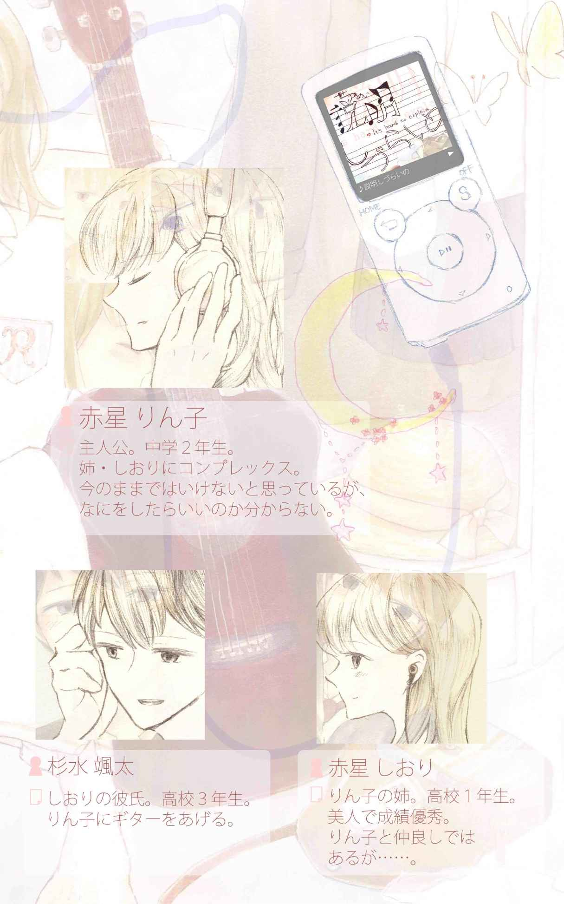
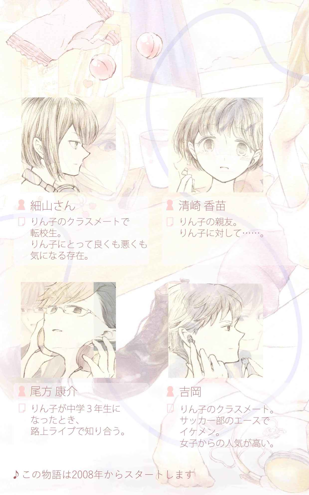
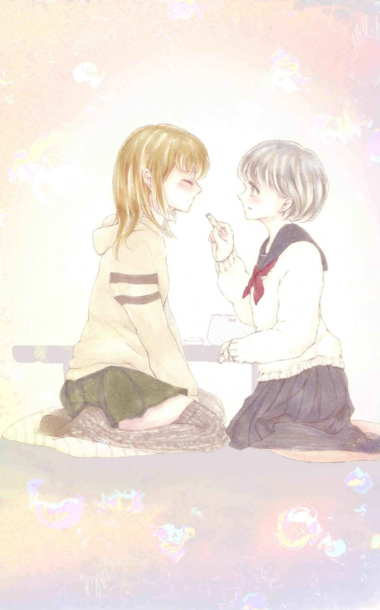
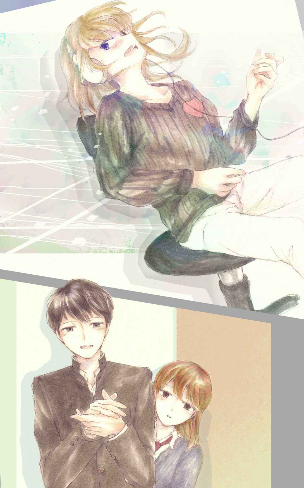
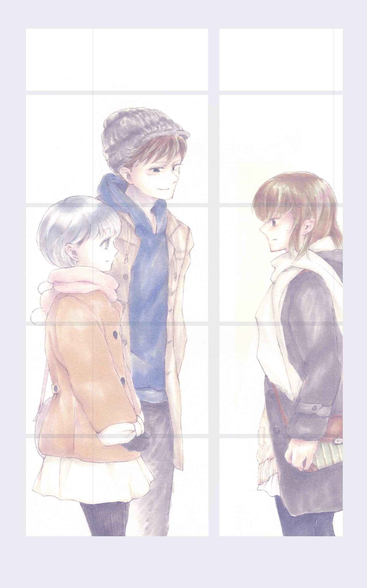
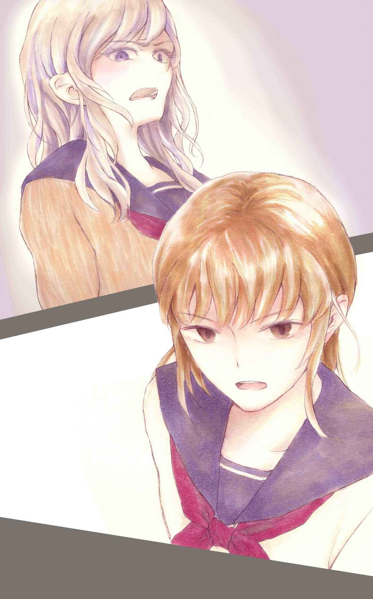
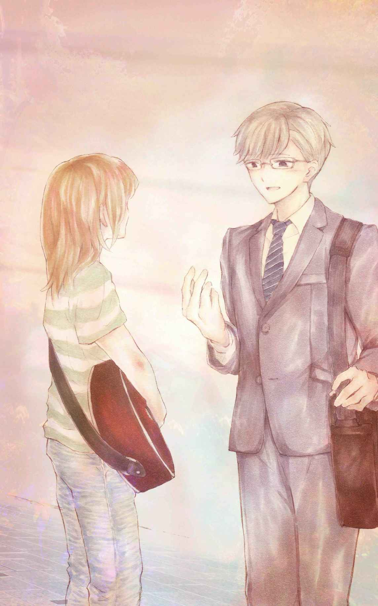
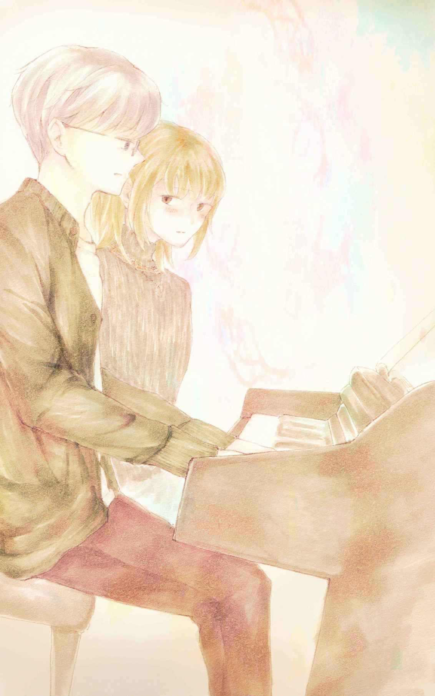
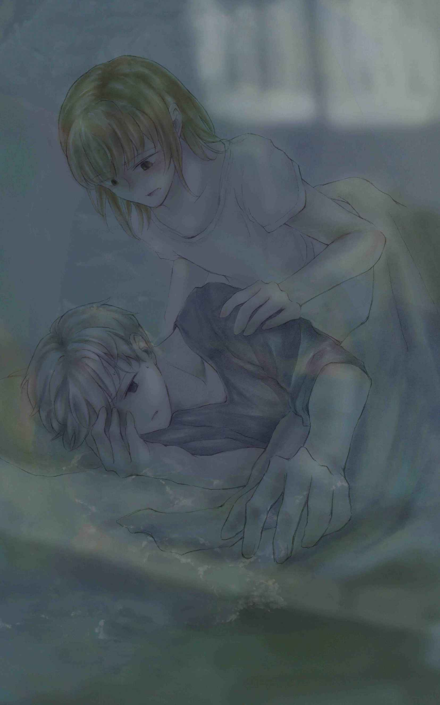

| 説明しづらいの: It's hard to explain | |
| 山川櫂 | |
| (2016) | |


「ねえねえ。スクープスクープ！ あんまり大きい声で言えないからさ。ちょっといい？」
アニメ声のいそっちが眼鏡の奥の目を細めて神 妙 な表情を作りながら、机を囲んで給食を食べているグループの女子四人の耳を自分の口元へと集めさせる。
中学二年生の赤星 りん子 は、メンバーの一員として、面倒くさいと思いながらも義務感で身を乗り出した。
「いくよ？ ビックリするよ？ 言うよ？ 心の準備はいい？ えーとね、はい！ 吉岡 くんとＡ組の小山 さん、昨日ヤったんだって！」
いっそち特有の高音の早口でなおかつ語尾が浮き上がったので、りん子はきちんと聞き取れなかったが、
「え！ マジ？ それどこ情報？」
「うっそ！ 信じらんない！ 中二でとか早すぎない？」
「なるほどね。なるほどなるほど......」などとバラエティ番組のリアクション芸人よろしくメンバーたちが一斉 に素 早 い反応を示したのを聞いて、おおよその意味を理解した。
りん子はショックだった。最近、クラスで性の話題がよく出るようになっていたものの、ソレはまだ遠くにある、言わば「タブー」だと思っていたから、唐突 なルール変更に困惑 してしまった。
「さっき男子たちがね、『ウェーイ』って叫びながら、吉岡くんのこと茶 化 してたからさ、ウチ、ピンときたんだよね。そんで卓球部の軽 木 に問い詰めてみたら吐 いた！ だからこれはマジ！」
「軽木、口かるっ！ アイツ、最低だね」
「ほんと！ 最悪」
「なるほどなるほど。軽木は口が軽くてペラペラお喋りだから......。『軽木ペラ男 』ってあだ名つけようか」
「ちょっと細山 さん、それマジうけんだけどぉ～！ 『軽木ペラ男』ってピッタリじゃん！ てか軽木ってさぁ～」
メンバーたちが口々 に軽木の悪口を言い始めたので、その隙 にりん子は困惑を払 拭 しようと努 めた。すると、メンバーが軽木にやつ当たりするように、りん子もなにかに怒りをぶつけたい衝 動 がふつふつと湧 いてきた。
――軽木っていうかさ......。一番口が軽くて最低なのは吉岡なんじゃないの？
りん子は声に出かかった意見をグッとこらえて、窓側に陣 取 る吉岡が所属する男子グループ（野球部・サッカー部・バスケ部混合の「イケてる」男子グループ）に目を向ける。
吉岡はこともなげに、凛々 しげな濃い輪郭 線の横顔にえくぼを浮かべて談 笑 しながら給食を食べている。りん子にとって、このえくぼは信じがたいものだった。
――どんだけ自分に自信があったら、あんなくっきりえくぼ浮かべて笑えるんだろう。
このクラスの男子で、吉岡だけが「吉岡くん」と「くん」付けで女子たちから呼び習わされていることがよく分かる笑顔だった。
りん子はなんとなく吉岡を見る癖を持っている。好きだというわけではないが、整った顔を見ることは「イケてる」人々と自分との距離感をつかむために便利な方法だった。
今見ている吉岡はいつもの吉岡となんら変わらない爽 やかなサッカー部の少年。その変わらなさ加 減 が、余計にりん子の怒りを買う。
「吉岡も吉岡だよね。そんなことペラペラ喋るなんて。てか、噂 するほうもどうかと思うけど」
りん子がそう言うと、場がしらけて沈黙 が訪れた。「しまった......」と思った。平然 を装 おうとするも、給食のパンをちぎるりん子の手つきは荒々 しい。
「りっちゃん、怒ってるの？ あ、もしかして吉岡くんのこと好きだったとか？」
沈黙を破ったのは細山さん、切れ長の目を黒目だけにして口角を上げて微笑 んでいる。
「は？ 意味分かんない。好きじゃねーし。くっだらな」
りん子が言い放つと、細山さんはわざとらしい笑顔はそのままに、「なるほどなるほど......」と慇 懃 無 礼 にうなずいた。そしてまた沈黙がやってきて、メンバー五人は黙々と給食を食べて昼休みが終了した。
――細山さんがグループに入ってから、なんか調子狂う。
細山さんは二年時からの転校生。彼女はこの三ヶ月間、ほとんど誰とも口を聞かず、給食も一人で食べるなど、常に孤立していた。
細山さんは前髪だけロングで後ろがショートという個性的な髪型をしている。そんな彼女に、りん子は自分の理想像を見出した。人の目を気にせず、個性的で、クールで、自分を持っていて、私も細山さんみたいになりたい、とりん子は思うようになった。
そして先週、意を決して話しかけてみた。しかし、りん子の細山像は間違っていた。
実際の細山さんはよく喋る明るい子だった。
単に自分から話しかけにくくてグループに入るタイミングを逸 していただけらしく、いざりん子たちのグループに入ってみると、ギャグは言うし、容姿もクールビューティー系だったので、すぐにグループの人気者になった。
りん子はそのギャップに落胆 しながらも、細山さんが普通の同年代の女の子であることに少しホッとした。
だけどこのごろ......
細山さんのグループ内での存在感が増すにつれて、自分の居心地が悪くなっている気がしていた。
――誘うんじゃなかった、とか思ってる自分嫌だな......。あー、あんなこと言っちゃったからやりにくいなぁ。てか、こんなちっちゃいことでウジウジしてる自分、マジむかつく！
りん子はそんなことを考えながら、五時間目の数学の授業中、教室の外を眺 めていた。
二年Ａ組の女子たちが校庭で創作ダンスをしている。
そのなかに、仲のいい清 崎 香 苗 がいた。香苗は小さい体を一生懸命ピョンピョンさせて踊っている。
――カナちゃんちっこいなぁ。あー、やっぱりカナちゃんかわいい。一年のときみたく、カナちゃんと一緒のクラスだったらよかったのにな。
――あれ？ カナちゃんと一緒に踊ってるのって、小山さん......だよね？ あんなスレてないかわいい子がもう処女じゃないなんて、ちょっと信じられないな。てか、信じたくない。ちょっとカナちゃんに似てるし......。ちっちゃくて色白で、目がクリっとしてて、笑顔がかわいくて。って私と正反対じゃん。
――そりゃあ、吉岡も好きになるよね。ってことは、カナちゃんも「イケてる」側なんだ。なんで私なんかと仲よくしてくれるんだろ？
――っていうかカナちゃん、小山さんと仲よくなったんだな。なんか、カナちゃんが遠くに感じる......。カナちゃんもすぐに処女じゃなくなるのかな。
りん子は踊る香苗と小山さんを眺めながら、自分の容姿を思った。
――背が高くて色黒 で、つり目の三白眼 で笑うと顔引きつるし......。姉妹なのに不公平だよなぁ。
「――赤星！ 赤星りん子！」
ぼうっと考え事をしていたりん子の耳に男性教師の鋭い声が響 いた。
「ボケボケだな。まだ夏休みじゃないんだぞ。ほら、取りに来なさい」
期末テストの返却。りん子は気だるそうに片手で受け取る。
「姉さんは出来よかったんだけどな。夏休み、家で勉強教えてもらうといいよ」
りん子はこの手の皮肉に慣れていたので、教師を睨 むように一瞥 しただけで、大人しく席に戻って点数を確認した。
「三十点」という、りん子にとって実 にありきたりな点数。まったく勉強しなかったわりにはいい点数じゃないかと思う反面、教師以上に親が姉と比較してくるだろう帰宅後を想像すると、気が重たくなる。
姉のしおりはりん子の二つ上で、今年から熊本県一の進学校に通っている。しおりは成績がよく容姿も整っているので、りん子は中学に入学して以来、ことあるごとにしおりと比較されてきた。
――あー、つまんない。なにからなにまでつまんない。教室爆発しないかな。今日最悪だ。いつも最悪か。もういいわ、今日。早く終われ。
だがこのあと、この日のりん子にとって一番最悪なことが待っていた。六時間目の体育の授業でのこと。
「みんな、今日は創作ダンスやるから、好きな人同士ペア組んでね」
若い女性体育教師が告 げたその何気ない一言に、りん子の心臓は急激に反応する。
急すぎて痛い。
ペアを組むとき、いつもはいそっちと組んでいる。しかし、昼の出来事が脳 裏 をよぎり、一 瞬 体が動かなくなった。背中から嫌な汗が噴 出 する。
皆が動き始めてしばらくしてからあたりを見回すと、いそっちと目が合った。
いそっちは目線をすかさず地面に伏 せる。
いそっちの隣には細山さんがいた。
細山さんは微 笑 を浮かべてりん子を見ている。
つまり、りん子はクラスで一人だけ、ペアを組む相手がいないという状況に陥 ってしまった。
背中の汗だまりが急速に冷えるのを感じた。心臓の音が耳まで轟 いて頭が鳴っているようだった。
体育教師の声がはるか遠くから聞こえてくる。
「――じゃあ赤星さんは先生と組みましょう」
いやに暑かった。
もう真夏なんだな、とりん子はフラフラしながら体育教師の横へと歩いていくとき、ヒソヒソ話す女子たちの上 擦 った声が、ほとんど幻 聴 のように聞こえてきた。
この状況を回避したいがためだけに、頑張ってグループに所属して、波 長 が合わないメンバーたちの話になんとか相 槌 を打ってきた。
それなのに、皆の前で、友達が一人もいないということを、公開裁判のように知らされてしまった。
本当はクラスの誰とも話したくなかった。無理をしてきた。
それなのに......
この創作ダンスの授業は、熱を持った奇妙な浮 遊 感 のなかでいつの間にか終わっていた。
いやに暑かった。
学校の帰り道。
りん子は今日の出来事についてなるべく考えないようにして歩いている。
そのためにこっそり学校に持 参 しているミュージックプレーヤーのボリュームを最大にして、大好きな『YUI』の新曲『Summer Song』を聴く。
『YUI』の澄 んだ高音が、りん子の空 っぽの脳内に響く。心は不 穏 当 に脈を打ってざわついていたが、頭は不思議と空っぽな感じがして、音楽が心地よい。
しかし、リピートして聴いていると、歌詞の内容が頭に入ってきて、自分に恋人はおろかクラスに友達すらいなくなってしまった現実に引き戻されて寂しくなった。
「あんなことを言わなければよかった」という後悔と、
「どの道、友達はいなくなる運命だった」という諦念 がせめぎ合ううちに、不覚にも目がうるんでいることに気がついた。
明日からの学校での日々を思うと辛かった。
中休み、給食の時間、まだ数時間続くであろう創作ダンス......
――やっぱり細山さんは強かったんだ。三ヶ月も一人に耐えたんだから。
――私は......自信ない。もっと強くなりたい。生まれ変わりたい。生まれ変わって、もっと強くなって、私が私であることに自信持ちたい。
目をつぶったりん子の頭のなかに、ギター一本で弾き語りする自分の姿が浮かんできた。
りん子が大勢の観客の前で弾き語りしている。
すさまじい高揚感 。息が苦しくなるほど心臓が高鳴ったあと、目を開けると、見慣れたようで見慣れないいつものニュータウンが広がった。
――どうせ私はギターが弾けない。なにもできない。あんな妄想して馬鹿みたい。むなしいな......。
――ああ、この町は箱庭みたい。私はここから出られない。町は綺麗。だけど、なんか慣れない。ここにいると、息が詰まる......。
りん子がこの町に引っ越してきたのは一年四ヶ月前、中学に入学したとき。それまでは熊本市内の古い賃貸マンションに住んでいたが、りん子の中学入学を機に、両親はこの町（熊本市郊外のニュータウン）に一戸建を購入した。
町は真新しく整然としていて綺麗。町の区画は狭いながら、小規模なショッピングセンターがあり、店も色々と揃 っているので便利。しかし、りん子にとって、この小さく満ち足りた感じが辛かった。
「ただいま」
りん子は帰宅して、誰もいない家のなかで呟 く。
両親は共働きで、父は熊本市内の信用金庫に、母は車で十五分のところにある携帯電話の組立工場にフルタイムで勤務している。
姉のしおりは熊本市内の高校に通っているので、帰ってくるのは大体母と同じ夕方だった。
りん子は冷蔵庫から麦茶を取り出し、コップに注いでリビングに座り込む。
クーラーをつけて麦茶を一気飲みした。
りん子は誰もいないこの時間が好きだ。部活に所属していない、いわゆる「帰宅部」なので、平日は二、三時間一人でいられる時間がある。
そんなときは大声で歌う。誰も気にせず、でたらめな歌詞でもいいから、とにかく大声で、気持ちのおもむくままに歌う。
今日も、じっとしていると嫌なことを思い出しそうだったので、いつもより大きな声で歌い始める。
さっき聴いていた『YUI』の新曲はもちろんのこと、『YUI』の今までのアルバムに入っていた曲の数々。『YUI』と同じぐらい好きな『BUMP OF CHICKEN』の曲を思いつくまま、歌詞が曖昧 なところは適当に歌い続けた。
息つく暇 もなく汗だくになりながら歌っていると、頭のなかが澄んでいくようで、気持ちよかった。
ヒートアップしたりん子は、自分の歌っている姿が見てみたくなり、洗面台へと向かう。そこで、鏡を見ながらエアギターを携 え歌い出す。
鏡に映る自分は、いつも学校に行く前に見ている自分より、寝る前に歯を磨 く自分より、別人のように輝いて見える。
これこそが本当の自分、自分しか知らない本当の自分のような気がする。
「大熱唱だね。すごいすごい」
突然、後ろからしおりの声。
りん子は我に返ると、しおりがニヤニヤしながら鏡のなかの自分を見ていることに気がつく。
「うわ、しぃちゃんひどい！ いつの間に帰ってたの？」
「うん？ 五分前ぐらい。しばらく聴いてた」
仲のいい姉だというのに、これほどまでに熱唱している姿を見せたことがなかったので、りん子は恥ずかしさで喉 の奥が詰まって二の句が継 げなかった。
「ああ、そうそう。お米研 がないと」
しおりはなに食わぬ顔でポンポンと手を叩いてリビングに向かった。
クールなしおりのいつもどおりの仕 草 で、自分の熱唱が片付けられたことに一抹 の寂しさを覚えながらも、からかわれなかったことにホッとしつつ、りん子もリビングに向かう。
りん子はダイニングテーブルの椅子に座りながら、対面キッチンで米を研ぐしおりを見ていた。
顔のパーツによってはどことなく自分と共通するニュアンスは見受けられるものの、決定的に細部における作り込みが違う丁寧 な顔だと思った。
色黒のりん子とは真逆の色白。目は奥二重まぶたの切れ長ながら、目尻がゆったりと丸いので優しげな涼しさが漂 っている。鼻はりん子と同じで団 子 鼻 だが、顔型がりん子より小顔の綺麗な卵型なので、むしろかわいいアクセントに見える。
――似たようなＤＮＡなのに神様も随分 だ。私もしぃちゃんみたいに美人だったら、友達とかも勝手に寄ってきて困らなかっただろうな。やればやるだけ褒 められるから自発的にお米研いだりしちゃうかも。勉強だって頑張っちゃうかもな。
「なに見てるの？」
しおりが顔を見上げる。
「よく働くなぁって」
りん子は咄嗟 に口を濁 すと、しおりはクスクス笑う。
「りっちゃんは家事とか細かいこと気づかないもんねぇ。でもある意味大物だと思うよ。さあ次は......今日は揚げ物らしいから、キャベツ千切りにして下ごしらえしておこう」
りん子はしおりに対して劣等感を持っているが、しおりのことが大好きだ。
しおりは昔から嫌味とも解釈できるきつい一言を言ったりするが、なぜだか腹が立たない。
姉といってもりん子より十センチ以上背が低い。しっかりしているものの、なんだかんだで大人 しい性格。りん子は時折無 性 にそんなしおりの頭を押さえつけて、髪の毛をクシャクシャに撫 で回してやりたいヘンテコな衝動に駆 られた。
今もそんなヘンテコな思いを抱えながら、キャベツを黙々 と切るしおりを見ている。
「しぃちゃん、ロボットみたいに動くね。ねえ、高校で友達できた？」
「まあ普通に」
「普通ね。どうやって友達できたの？」
「どうだっけ？ まあ、普通に」
「また普通か。ねえ、高校楽しい？」
「うん？ いやぁ、家にいるほうが気楽だよ」
しおりは俯 いたまま答えた。小刻みにキャベツを切る包丁の音が響く。
「じゃあなんで学校行くの？」
「大学に行って、将来市役所に入りたいから」
「市役所に入ってどうするの？」
「働いて生きていくの。死にたくないし。はい、質問攻 めのあいだに切り終えましたと」
しおりが包丁を置いたとき、玄関から母が帰ってきた物音がした。
「ただいま」
「おかえり。今ね、下ごしらえ終わったから」
「ああ、しぃちゃん、ありがと。助かるわ。今日、お父さん早く帰ってくるらしいから、大急ぎでご飯作らないと」
母としおりが夕飯を作っているあいだ、りん子はソファーに寝そべっていた。
――この革張りのソファーだってさ、この家買ったときに揃えたんだよね。テーブルとかも新しく買っちゃってさ。無理してんなぁ。お母さんローン払うために、フルタイムの仕事始めて家事もやって節約も頑張って。旅行とか外食とかもほとんど行かなくなったし。そりゃあ、普通手伝うよね。
――でも......しぃちゃんみたいになんの疑問もなく手伝うことができない。みんなみたいにこれを無理してまで手に入れるべき幸せだと思えない。家なんて買わなきゃよかったのに、って思っちゃう。
――私悪い子なんだよなぁ。私だけ成績悪くて、なにもしないで、役立たずで、価値観を共有してなくて......。存在価値ないな。罪悪感ハンパない。
そんなことをつらつら考えていると、いつの間にかうとうとしていたようで、
「りっちゃん！ いい加減に起き！ ご飯できたよ！」という母の大きな声で起きると、いつの間にか父も帰宅していて、三人がダイニングテーブルに座ってりん子を見ていた。
上から下ろされた三人の目が、どうしようもないものを見る憐憫 と軽蔑 をたたえているようで、すごく面白くなかった。
「全然お腹空 いてないんだけど」
りん子は悪 たれてテーブルに座る。実際はほどほどに空腹だった。
「疲れることなにもしてないからだよ」
目の前に座っている父が、目を合わせないでボソっと呟く。
「ウザ」
「こらっ！ お父さんになんてこと言うの！」
「はいはいごめんなさい。食べないの？ 料理冷めるよ？」
りん子が作り出した険悪 な雰囲気のまま、皆無言で食事をした。
りん子は父が苦手だ。嫌いというわけではないが、痩 せている父のつり目を見ているとなんとなく怖い気がして、昔から二人きりで話すことを極力避けてきた。
それでいて父は寡 黙 である。寡黙なわりに、一旦 口を開くと文句が多い。
しおりは父と適当に会話するので、なにか困ったことがあるとしおりか母に伝言してもらった。しおりや母のように、あの寡黙を突き破って、父を不機嫌にさせることなく会話をすることが、とても難しい芸当 に思われた。
「もう期末テストだいたい返ってきたでしょ？ 持ってき」
食事を終えてしばらくしたころ、父が唐突に切り出した。
「分かった。今持ってくるね」
しおりが席を立って足早 に二階の自室へと急いだので、りん子もしぶしぶ二階へと上がる。
バッグからしわくちゃになったテスト用紙を六枚取り出す。机の上で引き伸ばすと、
「三〇」「四三」「一八」「六七」「二四」「一四」という数字が明らかになる。
収縮 する胃のなかで、今しがた食べたものが、胃 壁 をガンガン叩いている感覚に襲われて気持ち悪くなった。
重たい胃を手で押さえながら一階のリビングに戻ると、しおりが両親にテストの結果を見せている最中だった。
「さすがしぃちゃんだね。九十点以下がないじゃないか。この成績維持したらさ、九 大 行けるんじゃないの？」
「無理無理。てか、熊本の大学行きたいし」
「なんで？ お父さんもお母さんも働いてるんだから、行きたいなら関西とか東京の大学だって行かせてあげられるよ？ な、お母さん？」
「そうよ。九大目指したらいいじゃない。下宿ぐらいさせてあげるから」
「いや、家から通えないとこなんて行きたくないし」
「もったいないなぁ」
りん子にとって異次元の会話が繰り広げられていた。胃がますます痛くなる。
「お、りっちゃん。どれどれ......」
父がりん子の手から奪うようにテスト用紙を取った。
「おいおい......。グチャグチャだな。将来こんなんじゃ困るよ。仕事は整 理 整 頓 が基本だから、書類は綺麗にとっておかないと」
そう小 言 を述べる父の横から、母が「どれどれ......」と首を伸ばして、二人でまじまじとテスト用紙を見つめた。
父が一枚ずつテスト用紙を繰 る。りん子にとってその時間が長く感じられた。
「......呆 れた」
父が低い声で呟く。母が小さくため息をつく。
「これって公立いけるの？」
父がしおりにテスト用紙を見せる。
「うーん。まあ、どこでもいいならなんとか」
「そう......。誰に似てこんなに馬鹿なんだろう」
父がチラリと母を見る。母は窮 屈 そうに肩をすくめた。
りん子の耐えていたものが爆発する。
「お母さんのせいにするな！ 全部私のせいだ！」
りん子はそう叫ぶと同時に涙が溢 れた。
「りん子！ 謝りなさい！」
母がりん子を睨 んで叫んだ。父は驚いたように、見開いた目をそのままりん子に据 えた。
「謝らない！ お父さんだって所詮 熊本の大学でしょ！ それでこんなビミョーなとこに住んで、ビミョーに幸せ風な噓くさい生活してるんだから、そんなビミョーな人に馬鹿だとか言われたくない！」
母が即 座 に立ち上がってりん子の頬 を平 手 打 ちした。
「誰に養ってもらってると思ってんの！」という母の絶叫をあとにして、りん子は二階の自室へと駆け上がった。
「テストの点数だけで人を馬鹿だとか言うな！ ああ......もうっ！」
ベッドに飛び込んで、顔に枕を押し当てながら泣き叫んだ。
叫んだりしたせいか、胃が軽くなっていることに気がついたころ、りん子は激しい後悔の念に駆られた。
――あそこまで言っちゃいけない......。またやっちゃった。「口は災いの元」って本当だ。自分をコントロールできない。自分が内側から暴れようとする。なんで......？
りん子の脳内で絶 えず響いているもの。
(Ａ)ミュージックプレーヤーから流れる音楽（今日は先月発売された『BUMP OF CHICKEN』のアルバムに入っていた新曲『プレゼント』を大音量でリピート）
(Ｂ)大音量のヘッドホンを割って入るクマゼミの大合唱
(Ｃ)デフォルメされた教室の騒ぎ声
(Ａ)の歌詞に集中しようとすればするほど、太陽の威 を借りた(Ｂ)の「シャシャシャシャシャ」といったノイジーな雑音が気にかかり、その暑苦しい騒がしさが容易に(Ｃ)を連想させる。「センコウ」がどうたらこうたら、「セックス」がどうのこうの、「チョットダンシー」女子たちの甲 高 い笑い声、「ウェーイ」男子たちの不思議なフレーズの連呼......。
クラスメートたちの騒ぎ声を思うにつけ、りん子の胃はキューっとすぼまって、その下にある腸が存在をほのめかした。
――学校、行きたくない......。
ポニーテールの結び目が、強く後ろへと促 しているように感じる。
朝だというのに、梅雨 明けして間もない熊本の太陽はきつくりん子を照りつけていた。
汗が額 から頬を伝って首筋へと流れる。
音楽が、クマゼミの鳴き声が、教室のざわめきが、一段と激しく脳内に響く。
吐きそう。
りん子は木陰を見つけると、その暗くわだかまったところに屈 み込む。
横を足早に通りすぎた一人の男子学生が、チラリと振り返ったのを、そしてなにも見なかったようにまた通学路を急いで行くのを、りん子は垂れた前髪越 しに見ていた。
彼はクラスメートの吉岡 。
――あの空間に、私はいるべきではない。
怒りやパニックとも違う、妙 に静 まった予感に打たれたりん子は、ヘッドホンを外した。
すると、クマゼミの鳴き声も、心のざわめきも、やはり静まり返っていて、音が消えていた。
蒸し暑さのせいか、景色が揺らいで見えた。熊本市郊外のニュータウンが、その真 新 しい家 並 みを白々 しく震わせていた。
――この町も、私の居場所じゃない。じゃあ、私のいるべき場所は？
音がしない。居場所もない。
りん子は、自分が透明人間になった気がした。今ならどこへ行ったとしても、誰にも気づかれないはず。
――ああ、透明人間って軽くて気持ちいい。ウザい内側の私がなくなったみたい。それとも外側がなくなったのかな？ まあどっちでもいいや。
――とにかく気持ちいい。なんでもできそう。
――「何 か」になれたんだ！
――だけど、これからなにしよ？ 男子でもあるまいし、更衣室に侵入して異性の裸見たいとも思わないし。じゃあ透明人間になったとしてもやることないじゃん......。「何か」になってもやることがない。つまんないの。
りん子が透明人間の悲しさに気づいたとき、学校のチャイムが鳴った。
音が、いつの間にか戻っていて、透明人間も、いつの間にか色黒の少し背が高い少女に戻っていた。
通学路から家に引き返したりん子は、真っ先に冷蔵庫を開けて、麦茶をグラスに注いで一気飲みする。
無 性 に喉が渇 いていた。
ポットが空 になるまで、何杯も一気飲みする。
クーラーをつけて、リビングのカーテンを開けて、ソファーに寝転んだ。
庭の木々が光を受けて輝いている。その光も、木々の緑も、ソファーの質感も、クーラーの冷気も、すべてが新鮮だった。新鮮すぎてドキドキした。脱皮したてのように、五感すべてが剥き出しにされている感覚。
りん子は生まれ変わった気がした。
――違う！ 今までと明らかに違う！ これが自由！ 「何か」になれた！ やっぱり私のなかに本当の私がいたんだ！ 私は変わった！ きっと、強くなった！
この空間にいることが許されていない時間にこの空間にいるという非日常が、ビンビンりん子を刺激する。
時 を刻む掛け時計の音ですら、刺激的だった。
りん子はいつものように大声で歌ったあと、いつの間にか寝ていた。そして電話の着信音で起きた。
「赤星 本人か。いるんだな、家に。どうした？ なんかあったか？」
担任からだった。
「ちょっと体調悪くて。ごめんなさい」
りん子は電話を切る。
急に現実に引き戻された感じがした。掛け時計の秒針の音がうるさい。時計を見ると昼すぎ。光が眩 しくてカーテンを閉める。
その日、りん子はいつもと変わらず家族と一緒に夕飯を食べた。今日のこと、これからのことを家族に言おうかとも思ったが、よく考えたら、これからのことを自分でもよく分かっていなかったので、なにも言わずに寝た。
翌朝、りん子は制服を着て、セミロングの髪をといてポニーテールに結い、トーストを焼いて食べ、いつもと同様午前八時一〇分、工場に出勤する母と一緒に家を出た。
そして徒歩十分の通学路を五分ほど歩いてから、満を持 して家へと引き返した。
帰宅した。今日もまた担任から電話がかかってきたら面倒くさいので、学校に電話をかける。
「おはようございます。二年Ｂ組の赤星りん子です。松田先生いますか？......ああ......。じゃあ、先生に伝えておいてください。今日も体調悪くてお休みします、って。......はい、大丈夫です。......いえ、母はもう仕事に行っていないので。......はい。はい、お願いします」
これから毎朝ずっと学校に電話するのかと思うと気が滅入 りそうになった。
そもそも、自分が明確に不登校を意図 しているのか、それすらよく分からない。
ただひとつ明らかなことは、学校が自分のいるべき場所ではないということ。
だから行かない。
りん子は自分に言い聞かせるように、「これでいいんだ」と独 り言 を呟く。
「私は変わったんだ」と続けて呟いたとき、昨日の爽快感はどこへやら、鬱 屈 とした思いだけが胸のなかでゴロゴロしているのに気がついた。
――あれ？ 変わってなくない？ これじゃあ、学校にいるときと大して変わらない気がする。昨日家に帰ったあとは、たしかに「何か」見えたのに。ヤバい、焦る！
りん子はもんもんとしながら、リビングのテレビをつける。朝のワイドショーの芸能ネタが、真面目とも不真面目ともつかない怪しいトーンのナレーションで淡々と進行していた。いつものように歌う気力すら湧いてこなかった。
――ああ、もうそろそろ一時間目始まるころだ。今日の一時間目は英語だっけ。そういえば宿題出てたな。どうでもいいけど......。
「ドン！」という大きな音がして、自分が寝ていたことを自覚すると、目の前に肩を上下させて息を弾 ませる母が立っていた。恐ろしいほど睨 んでいる。
「あんた学校サボってんだって？」
母は怒鳴 るや否 や、ソファーの上で寝ているりん子の肩をつかんで揺 さぶった。
「なに考えてるの？ 松田先生から携帯に電話あったから、わけ言って慌てて工場飛び出して来たんだからね！ どうしたの？ なにがあったの？」
早口でまくし立てる母の声が、耳の奥でツーンと割れて聞こえた。鬱陶しかった。
「学校に行くべきではない」
りん子は上体を起こしながら静かに断定 した。これでもかと目を見 開 いた母は、顔中にクエスチョンマークを発疹 させる。
「は？ なに言ってるの？」
「私は、学校に行くべきではない。ただそれだけ。それが理由」
「あんたが学校に行くのは義務なのよ？ 分かってんの？」
「誰が決めた義務？ 私の義務なの？ 行かないと逮捕されんの？」
「屁 理 屈 言うな！ あんたの義務なの！」
母は叫んでりん子の腕を強く握 った。そして、玄関の方向に引っ張りながら、
「来なさい！ 今から行くわよ！」とりん子を引きずるように、今度は後ろ首の髪・肉・襟 を一緒くたにつかんだ。
「痛い！ やめて！」
りん子は母の手を巻き込むようにして振り払った。
母は一瞬、たじろいだように引き下がった。
そして、いかにも痛そうに右手を左手でさすりながら、恐ろしいものを見たかのような目つきで、
「ああ、ああ......」と聞き分 けがたい呻 き声を上げた。
りん子はある感覚に震える。
「なんなの！ なんでいきなり被害者ヅラして思考停止すんの？ 私は化け物かよ！」
りん子はやるせなくなり、泣きながら二階の自室へと駆け上がる。
母は上がって来なかった。
しばらくすると、「コトン......」と静かにドアが閉まる音に続いて、外から車のエンジンがかかる音、発進する音が響いてきた。
――イヤだ、イヤだ、イヤだ......。あんなんで痛いわけない。なんで、娘相手に被害者の演技すんの？ なんで、結局は自分のことなの？ なんで、一方的に押しつけてくるわけ？ もう、意味分かんない......。
りん子は自分が悪いことは分かっていた。
しかし、母と「何か」について話し合える気がしなかった。
りん子は母のことが好きだが、母と深い話をした記憶がない。
今までは、母が物事の表面ばかりを捉 えようとすることを深刻に考えていなかったが、先ほどのある感覚（恐らく永遠に、この人とは根源的に「何か」を分かり合うことができないという直感）が頭のなかで悲しく尾を引きずっていた。
しおりが帰宅したことはベッドのなかで知った。ほどなくして母が帰ってきたことも分かった。
部屋を領 していた西日が薄れてきたころ、父が帰宅した音を聞いた。
それから三十分ぐらいして、部屋が完全に暗くなったとき、
「トントン」とドアをノックする音がした。部屋に鍵はなかったので、りん子は大人 しく降参 してドアを開けると、ワイシャツとスラックス姿の父が立っている。
「ちょっと下で話し合おうや」
父のあとについて階段を下りてリビングに入ると、夕飯はまだで、準備された形跡すらなかった。なにも置かれていないダイニングテーブルに、母としおりがすでに座っていた。
母は机につっぷしてうなだれていたが、しおりは口元をニヤニヤさせてチラチラりん子を見てきた。
りん子はその奇妙な微笑を見て、肩から後頭部あたりにつきまとっていた「重さ」がだいぶ緩和されたような気がした。
父とりん子が席に着くと、母はやっと顔を上げた。母の奥 二重 まぶたは厚 ぼったく膨 れて一重 になっている。
「まあ、なんのことかは分かってると思うけど」
父が重 たげに口を開く。
「ほら、あれだ。りっちゃんの学校のことについて」
父の口述に目をつぶった母が二度ほど軽くうなずく。「家族会議」という文言がりん子の頭のなかに浮かんだ。
「なんで学校に行かないのか説明してみなさい」
「うん。なんで？ うーん......。まあ、学校に行くべきではないから」
「『学校に行くべきではない』とは？ つまり、どういうこと？」
父が裁判官のように尋問 した。りん子の頭のなかで「家族裁判」という訂正テロップが流れる。
「つまり、うーん......。学校が私の居場所ではない、ということ」
「『学校が私の居場所ではない』とはどういうこと？」
「こんな屁理屈につきあってたらダメよ！ ただサボりたいだけなんだから！ それに私は明日も仕事なのよ！ 立ち仕事なんだから！」
静かにしていた母が声を荒 らげる。
「大声出さないでよ！ サボるってわけではないんだよ！」
りん子が大きな声で言い返すと、
「怖い......あんた怖い......」と母は目をそらしてボソボソと口ごもった。
りん子はうんざりした。
「まあ、りっちゃんの言い分も聞いてみようじゃないか。『学校が私の居場所ではない』とは、分かりやすくなくていいから説明してみて」
「説明......。うーん......。分かった。やってみる」
りん子は不思議と父の目を見て話すことができた。いつものように怖く感じなかった。
「そうだな......。昨日ね、昨日の朝の通学路で、なんか予感というか、すごく静かな感覚に襲われたの。蝉がワンワン鳴いてたんだけど、とても静かでね。その静かな感覚のなかで、私気がついたの。学校に行って、出来ないというか頑張れない勉強、そう、頑張れないの。勉強する意味がないとは言わないけど、私が思い切り勉強してもトップには立てない。もっと勉強で輝ける人はいるでしょ？ たとえばしぃちゃんみたいに。でも私はそうじゃない。それは分かるの。この直感は間違いなく正しいの。で、友達もそうなんだけど、彼らからいい影響は受けないと思うの。話してて分かる。時折楽しいけど、その楽しさは私のなかにとどまって熟成して私を『何か』に変えてくれるものじゃない。泡みたいに瞬間的に消えてしまう種類の楽しさなの。私はそれを求めてない。私はなりたいの、『何か』に。私は勉強はできない『馬鹿』なんだろうけど、私のなかに、私の外なのかも知れないけど、もう一つの、なんだろ？ もう一人の私というか、そういうものがいる予感がするの。それを手に入れたいの。そのための時間が欲しいの。お願いします。理解してください」
りん子が憑 かれたように、されど冷静に話し終えて軽く下げた頭を上げると、家族たちが皆、面白い表情を浮かべていることに気がついた。
母は口をうっすらと開いて目を半 開 きにして、どこか仏像を思わせる表情を浮かべていた。
父はひたすら眉 間 に皺 を寄せて険 しい顔をしていた。
しおりは微笑を通り越して、声を出さないだけで、もはや爆笑していた。
家族のあいだに訪れた不思議な沈黙は、少しばかり長く続いた。
りん子は自分でも分からなかった自分の気持ちの曖 昧 な部分がクリアになった気がして気持ちよかった。家族が作ってくれた沈黙のさなか、その気持ちいい余 韻 にどっぷりと浸 ることができた。父による次の発言までは......。
「つまりあれか？ 要 はイジメられてんのか？」
りん子は自分の説明が一パーセントたりとも伝わっていなかったことに衝撃を受けた。
しおりがついに声を上げて笑い出す。
「お父さんナイスボケ！ りっちゃん、さっきの最高におもしろかった。中二病の新しいテンプレに使えるよ、あれ。さすがリアル中二だね！ 切れ味が違う。あとでもう一回教えて。書き起こすから。『２ちゃん』に貼ろう」
平 素 大人しいしおりが目をらんらんとさせて、珍しく高 揚 した様子だった。
父はしおりの指摘を受けて当惑 したようにキョロキョロし始めた。
「もういいわよ、面倒くさい。夏休み明けたら学校行きなさい。約束よ？ 少し早い夏休みってことで手を打ちましょう。お母さんは明日も朝からきっつい仕事あるんだから、これ以上付き合ってられません。立ち仕事なのよ？ 分かってる？ もう面倒くさいからなんか出前でも取りましょう。なにがいいかしら？ ピザにする？」
夏休み前日（一学期の最終日）、香 苗 がりん子のクラスの担任教師から夏休みの宿題等の配布物を託 されて、赤星家を訪問していた。
その配布物について、香苗が熱心にひとつひとつ説明してくれた。
りん子は「どうせやらないから適当でいいよ」と言いたかったが、持ってきてくれた香苗に申しわけないので、「うんうん」とうなずいて聞いていた。
「で、これが夏休みに暗記しないといけない英単語のリストね。で、あとは......あれ？ これだけだっけか？ 伝え忘れたことないっけ？ うーん......。あ！ そうそう！ これはプリントとかには書いてないんだけど、音楽の課題で、自作の曲を作ってくること。音符にするんでもカセットとかＣＤとかに録音するんでもなんでもいいらしいよ。テーマは夢だって。これで全部伝えた......ハズっ！」
香苗は伝え終えると安心したらしく、ぱっつん前髪の横にダブルピースをかざして笑った。
――か、かわいい......。自然とこんな女の子っぽい仕 草 できるなんてすごいなぁ。
りん子は胸がキュっとなる、瞬間的な軽い窒息 を覚えた。
「松田先生に言われたんでしょ？」
「そうそう。松田先生って、もんすごい気配消すよね！ 廊下でいきなり後ろから肩に手がかかって、一瞬、大きい虫が肩に止まったのかと思って叫んじゃったよ！ 江戸時代なら絶対忍者になれたと思う」
「ウケる！ でも先生腰痛持ちだけどね」
――やっぱりクラスの子たちは、誰も手を挙げなかったんだ。普通、まず同じクラスの子に頼むもんね。まあいいや、もう関係ないし。
「カナちゃんにこんな迷惑かけて悪いね。違うクラスなのに」
「いいのいいの！ 気にしないで！ りっちゃんの家来たかったし。あとで漫画読ませてね。ああ、そういえば、なんで夏休み前のラスト一週間学校来なかったの？ もしかしてどっか具合悪いとか？」
香苗は心配そうに目を大きく開いてりん子を見つめる。
――これもまたかわいい。目うるうるでクリクリじゃん。ふっくり下まぶたも秀 逸 。え、私ってもしかして......？
「ううん。めっちゃ元気だよ」
「だよね。会って一瞬で『元気そう！』って思って安心したもん。じゃあなんで？」
「うーん、なんとなく。行く意味分からなくなったというか」
「なるほど！ やっぱりりっちゃんってかっこいいなぁ。学校に行く意味なんて、ウチ全然考えたりしたことないからさ、そういうこと考えてるりっちゃんってすごいと思う」
――これって普通皮 肉 だよね。でもカナちゃんの場合、皮肉じゃないんだよなぁ。そこがカナちゃんのすごいところ。カナちゃんって嘘つかないし。
「すごくなんてないよ。お母さんに『屁理屈』って言われたし」
「それウチもよく言われる！ 言われるとウザいよね」
「めっちゃウザい！ 理由聞いといて説明したら『屁理屈』だもんね。やってらんないよ」
「やってらんないよねぇ。そうだ！ 今度、熊本に服買いに行かない？」
「いいね！ 夏服足りてなかったから行こうと思ってたんだよ」
「行こ行こ！ そういえばね......」
香苗と何気ないことを話しているだけで、りん子は癒 された。
りん子にとって一週間ぶりの家族以外との会話。
誰も自分のことを理解してくれないと思うあまり、いつの間にか香苗の存在まで忘れかけていた自分を恥じた。
――カナちゃんにだったら、「何か」伝わるかな？ 話してみようかな。でも......カナちゃんにまでドン引きされたら立ち直れないかも。やめておこ。
「――それでね、その伊達 メガネしてること忘れてて、そのまま塾行ったら先生に『視力落ちたんだ？』とか言われてめっちゃ焦った！ それでさ......」
香苗は楽しそうに喋り続ける。
りん子はそんな香苗を見ながら、中学一年生の幸せな時間を思い出していた。
中学校に入ってすぐ、りん子と香苗はたまたま席が隣り合い仲よくなった。
香苗は大人しかったが、りん子の前でだけはよく笑いよく喋った。二人は一年生のほとんどの時間を一緒にすごした。
だから、二年生になったとき、りん子は面 食 らった。
今まで気が合う香苗とだけ仲よくしていればよかったものが、いきなり見ず知らずの集団のなかに放り込まれた。
クラスの女子全員と話してみたものの、香苗のような、日々の何 気 ない小さなことを素直に共感し合える友人は見つからなかった。
――ほんと、カナちゃんが二年でも一緒のクラスだったらよかったのにな。って、それじゃあ私がハブられて不登校になったみたいじゃん！ ちがうちがう、そうじゃないんだった。
――ああ、でもカナちゃんといると楽しい。私カナちゃんのこと大好きだ。やっぱり......そうなのかな？ よく分からないけど。でも、カナちゃんが小山さんとペア組んでるの見て、めっちゃ焦ったな。やっぱりレズなのかな？ そうだったらいいな。特別な感じするし。
――なんか、小山さんのこと思い出してきた。小山さんとこんな感じで喋ったりしてるのかな？ なんかジェラシー......。
「話さえぎってごめん。カナちゃんってさ......」
りん子がモジモジ切り出すと、香苗は即座に話を止めた。
「いいよ全然。超くだらないことしか喋ってないし。なに？」
「小山さんと仲いいの？」
そう聞くや、りん子は顔 中 が熱くなるのを感じた。
「なんで？」
香苗は口 元 に少し緊張感のある笑みを浮かべながら尋 ねる。
「いや......。こないだ、ダンスでペア組んでるの教室から見えたから......」
「あ、もしかしてりっちゃん妬 いてくれてるの？」
りん子を覗 き込む香苗の上 目 遣 いが、わざとらしく作ったように鋭い。
「......うん......」
りん子が呟くと、香苗は弾けるように笑った。
「心配しないで！ ちょっと話すようになっただけだから。親友はりっちゃんだけだよ」
「ああ、そうなんだ。ごめん、なんか......」
「いや、りっちゃんの意外なとこ知れて嬉しいよ。ほんと嬉しい」
香苗の口ぶりが早くなっていた。
りん子は香苗が自分のことをまだ親友だと思ってくれていることが嬉しかった。
二人はそのあと、化粧をし合ったり漫画を読んだりしてすごした。
香苗が帰るとき、「ねえ」とりん子に呼びかけた。
「じゃあさ、もう学校来ないってこと？」
「うん。もう行かない」
「え！ めっちゃ寂しいんだけど......」
香苗の眉 は八の字にこわ張って垂れ下がり、今にも泣きそうな顔になった。
「なにかやるの？」
「いや、まだなんも考えてない」
「そっか。三年一緒のクラスになりたかったし、一緒の高校にも行きたかったな......」
香苗はついに泣いてしまった。
りん子は「ごめんね」と香苗の肩に触れたが、「高校」という文言が引っかかっていた。
香苗が帰ったあと、静まった部屋で、りん子は頭のなかに引っかかっているものの正体を明らかにしようとした。
――「一緒の高校にも行きたかったな」か。おかしくないな。なにがおかしいんだろ？ 高校......高校......。カナちゃんは私と同じぐらい成績悪いし、公立だったら同じような高校にしか行けないだろうしな。うーん......。なんだ？ あれ？ それなのに、一緒の高校に行けないってことは......。ああそうか！ カナちゃんは私が高校に行けないって思ってるんだ！ そっかそっか、やっと分かった！ あー、モヤモヤが晴れてよかった！
りん子は引っかかりが取れてすっきりしたはずの頭のなかに、まだ違和感が残っていることを不 審 がった。
――なんだろ？ 解決したハズなのに。カナちゃんが私のことを高校に行けないって決めつけてることかな？ それがモヤモヤの原因？ でも、普通に考えたら、中二からずっと学校行かなかったら公立は行けないもんね。そっか、カナちゃんは公立に行くつもりだから、私が一緒の高校行けないって思ってるんだ。でも、私立の高校なら行けるのかな？
――あれ、私ってそもそも高校は行くつもりなの？ なんも考えてなかった。行かないと中卒か。中卒......。中卒までは覚悟してなかったな。そっかそっか、今のまま学校に行かないと、基本的には中卒扱いなのか。中卒って仕事とかあるのかな？
――って私、仕事する気はあるのか。ってなんの仕事？ したいことあったっけ？ 特にないな。あれ？ なんのために学校行かないんだっけ？ ああ、そうだ。いや......忘れた......というかなんか曖昧。
――あれ？ なんだっけ？
♪
♯
♭
♮
夏休みが一日、そしてまた一日と経過していった。
りん子はなにするでもなく、ダラダラしていた。そうしているうちに、当初気 張 っていたものが、だんだん緩んでいくのを感じた。
不登校なのに夏休み、という状況が現実を分かりにくくさせていた。
八月上旬のある日、りん子は夏休みに入ってからの習慣（パソコンを使って『YouTube』や『ニコニコ動画』にアップロードされている音楽を大音量で聴きながらネットサーフィンをすること）をいつものようにやっていた。
夏休み中、しおりは毎日朝から図書館に行って勉強をしていたので、りん子は家で自由に振舞うことができた。
今日は『初音ミク』が歌うボーカロイド曲『ブラック★ ロックシューター』を、音量最大にして、何度もリピートしながら一緒に大声で歌っていると、部屋のドアがいきなり開く。
「うるさい！ 静かにしてよ！ こっちは勉強してんだから！」
しおりがすごい剣 幕 で叫んだ。
「え！ しぃちゃんいたの？ 図書館行ってるんじゃなかったの？」
「今日は休館日なの！ あとさ、午後から人が来て一緒に勉強するから、静かにしててよ。お願いだからね」
しおりはそう言い放 ち、ドアを「ガチャン！」と強く閉めた。
しおりの雰囲気は明らかにいつもと違っている。余裕がなさそうだ。
りん子はそんなしおりを怪しがった。
昼食にいつもどおりカップラーメンを食べ、りん子は自室でじっとそのときを待つ。
十二時四十五分ごろ、「ピンポーン」とチャイムが鳴る。
りん子はすかさず部屋の窓から庭伝 いの門を見下ろす。
案の定、高校生と思われる青年が立っている。
二階からでも分かるほど青年の鼻は高く、眉 間 から綺麗なカーブを描いている。
しおりが玄関を出て門まで迎えに行く。しおりを視 認 した青年がその薄い唇 を緩ませたのを、りん子はぼうっと眺めていた。
――塩顔系の......イケメンっぽいな。え、彼氏なわけ？
りん子はこのことを予期していたものの、青年が予想外に自分のタイプだったので凹 んだ。
――しぃちゃんは成績よくて、いつの間にか彼氏までいたんだ。どんだけ要 領 いいんだよ。なんか、おもしろくないな......。
階段を上がってくる音がする。
りん子はしばらくベッドの上に座り、枕を抱きかかえてじっとしていた。
隣がしおりの部屋。薄い壁から、低い声としおりの笑い声が聞こえてくる。
りん子はいけないと思いながらも、ベッドの上をにじり寄り、そっと壁に耳をつける。壁はひんやりとしていた。自分の心臓の鼓 動 が耳にまで伝わってきて、隣に聞こえないか心配なほどだった。
「先輩、ここは？」
「ああ、これは三角関数使ってね......」
どうやら二人は数学の勉強をしているようだった。
基本的には静かに、時折しおりが青年に質問をして、青年がそれに答える。
そして、なにやらはっきりと聞こえてこない小声のあとに、二人の笑い声が起こった。しおりの声は普段よりやや高い。
りん子は十五分ほど壁に耳をつけていた。
そのうち、だんだん寂しくなってきた。
――これじゃあ、私ストーカーじゃん。超キモいんだけど。なんか、自分のこと嫌になる。しぃちゃんはこんなこと絶対しない。だから人から愛されるんだ。私はこんなキモい奴だから、みんなに嫌われるんだ。しぃちゃんは彼氏っぽい人が来たってちゃんと真面目に勉強してるのに。
――私は......なにしてる？ 今後どうなる？
りん子は寂しさとともに恐ろしさが合わさって、呼吸が苦しくなった。
壁から耳を離し、深く息をする。また、二人の笑い声が聞こえてくる。
――このままじゃダメだ！
りん子は机に目をやる。
香苗が持ってきてくれた、夏休みの課題などが記された配布物が目に入った。
そのプリント一式をりん子はつかみ取る。
そしてがむしゃらに破る。
ドリルの冊子を破くとき、その紙で手を切って血が出てきた。りん子は構 わず破る作業を続行する。すべてを破り終えたとき、紙が血だらけに赤く染まっていた。
りん子はその粉々 になった紙くずを集めて、部屋にあった紙袋に詰める。
そして、その紙袋を持って部屋を出て、階段を勢いよく下りた。
サンダルを引っかけて玄関を飛び出し、自転車に乗って猛 烈 にペダルをこいだ。
一番近くにあるコンビニの前に着いたときには汗だくになっていた。
りん子はコンビニの「燃えるゴミ」に紙袋を押し入れた。
「これでよし」
明日から二学期。
夏休み中、赤星家は毎年恒 例 の夏の家族旅行に今年は行かなかった。
りん子は香苗と熊本市内のショッピングモールに行ったぐらいで、他にはどこにも出かけなかった。クーラーが効 いた部屋のなか、日 がな一日音楽を聞きながらネットサーフィンをしていただけで夏休みが終わった。
りん子の学校に行かないという決心は継続している。
しかし、家族はそのことにまったく触れてこない。
今、テレビを観ながら家族皆で夕飯を食べている。
「ああ、ここのお寿司おいしそう。どこ？」
母がバラエティ番組の内容について、誰に聞くでもなく呟くと、「東京だよ」としおりが教えた。
「遠いね。お寿司食べたいけど、ローン完済まで贅沢は我慢しないとね。私も立ち仕事やって繰り上げ返済頑張ってるんだから、あと十五年ぐらいで返せるかしら？ ねえ、お父さん？」
「そうだな」
父が興味なさそうに答えると、一旦会話が途 切 れた。
――今がチャンス！
「あのさ......。明日からのことなんだけど」
りん子が切り出すと、箸 を動かす両親の手が止まった。しおりだけが食事を続けている。
「なに？ あ、分かった。宿題終わってないんでしょ？ お父さんとしぃちゃんにお願いして、今日のうちに終わらせちゃいなさい。うわぁ、大変だ。今夜はみんな寝れないね」
母が妙に優しげな口 調 で微笑 むと、りん子よりも素早くしおりが反応する。
「イヤだよ。私だってやることあるもん」
「お父さんは手伝うよ。まあ、しぃちゃんもそう言わずに。お小 遣 いあげるからさ」
「え？ 本当？ じゃあしょうがないね。手伝う」
この一連のスピーディーなやり取りが、まるで練習でもしていたかのごとく見事な手 際 でなされたので、りん子は一瞬気 おされてしまった。
しかし、ここでひるむわけにはいかない。
一度深く息を吸い込んでから反撃に出る。
「そうじゃないよ。学校行かないの。明日からも学校行かないの。理由は前言ったとおり。以上です」
吐 く息とともに、早口で言い切った。
皆の動作が止まって、テレビの音だけがリビングに響く。
すると、父の顔は見る見る険しくなり、母の顔は憤 りと悲 壮 感 で満ちた。
「学校行かないでどうするの！ 結局夏休みだってなにもしてなかったじゃない！ それにお母さんは明日も仕事なの！ 立ち仕事なの！ クタクタなのよ！」
母が口 火 を切った。
「え？ 学校行かないでなにがしたいわけ？ ずっと家にいられるとさ、正直気が滅 入 るんだよね。なんか家 中 にりっちゃんエキスが充満してるような気がしてさ」
珍しく隣に座るしおりが続いた。りん子はしおりの冷 ややかな流し目は予想していなかったので、その視線が冷たく胸に応えた。
「とりあえず行きなさい。行ってから考えなさい」
父が静かに言った。しかし、語 気 は強かった。
りん子は四 面 楚 歌 の状況に置かれてしまった。頭のなかがグルグル回転して、胸の鼓動が手の小 刻 みな震 えとして表れるほど激しく動いている。
「やりたいことはあるの！ でも言わない！ 言ったら夢は叶 わないから！」
ほとんど反射運動のように叫んで席を立ち上がった。そして土 下 座 をした。
「お願いします！ お願いですから！ 絶対にいつか、やりたいことを仕事にしてみせます！ 約束しますから！ どうか見逃してください！」
りん子は泣きながら土下座をして叫んだ。無 我 夢 中 だった。自分でもなにがやりたいのかまったく分かっていないのに、嘘を言っている気がしなかった。
「そんなことしたってなにも変わらないのよ！ 人生を棒に振ってはダメ！」
母の泣き叫ぶ声が聞こえてくる。
「お母さんの言うとおりだ。なにかを決断するには、りっちゃんはまだ早すぎる。大人しく学校に行きなさい。ときには大人の言うことを素直に聞いてみるのも一つの手だと思うよ」
父の諭 す声が聞こえる。
「それ、マジでやってんの？」
しおりのさげすむような声が聞こえる。この声が決定打になった。
「こんな先の見えた人生、捨ててやる！ しぃちゃんみたいに美人じゃないし頭よくないしコミュ力ないし、普通に生きてたって面白くない！ 普通、それは私にとって死なの！ 私は生きたい！ みすみす死にたくない！ 死ぬぐらいならいっそ普通の人生捨てて賭 けに出たい！ なんとか運命に対抗したいの！ 私に死ねって言うの？ たかが家族の分 際 で邪 魔 しないでよ！ 私の運命を決めるのは私しかいないの！ お願いだから私の邪魔をしないで！」
りん子は顔を上げて絶叫した。
叫び終えると、家族が一歩退 くのを見た。それは物理的な距離ではなく、明らかに、家族の心がりん子から一歩退くのを見たのである。
その夜、りん子は篭 城 するかのごとき心境で部屋にこもったが、誰一人として説得しに来なかった。
――ついに見捨てられた。そりゃそうだよね。
りん子は、家族の心を、特に両親の心を、自分の剥き出しのナイフで、グチャグチャに切り刻んでしまったのだろう、と後悔した。
申しわけなさで、涙が止まらなかった。
しかし、「こうせざるを得なかった」というたしかな意志が、自分でも不気味なほど冷たく存在していることに、身 震 いが止まらなかった。
翌朝、りん子は眠れずに起きていたが、登校のために準備をしないと間に合わないタイムリミットの時刻をすぎても、母は起こしに来なかった。
二学期が始まって一ヶ月と少しが経過していた。
まだ日中は暑い日が多かったが、夜はめっきりと肌寒く、熊本もようやく秋めいてきていた。
今は平日の昼前。りん子の部屋にパソコンのキーボードを打つ音が響く。
リンリン「ここが正 念 場 ですね！」
Ｃボーン「みんなで力を合わせて敵を倒そう！」
リンリン「私はへっぽこ無課金厨ゆえ頼りにならなくてすいません......」
ジュリア「気にしないで！ 私も弱いし......」
ジャック「リンリンは深追いするな。いざとなったら俺がなんとかする。まかせろ」
Ｃボーン「さすがジャックさん！ 男のなかの男！ 頼りにしてます」
ジュリア「惚れる！」
リンリン「うわぁ（感動）、ありがとうございます！」
りん子はインターネットのオンラインゲームをしている。モンスターが跳 梁 跋 扈 する仮想空間をＲＰＧ形式の冒険をしながらモンスターを倒していくタイプのゲーム。二時間前から組んでいる四人組のパーティーで、ボス級のモンスターと戦っている最中だった。
ジャック「よし、リンリンは右から回りこんで後ろをとれ！ 俺が敵をひきつける！」
リンリン「はい！ 分かりました！」
Ｃボーン「うわぁ！ やられた......俺はもうダメだ......みんな、俺の分まで......（死す）」
ジュリア「イヤぁぁぁ！（裏声） Ｃボーンさん、死なないでぇ！（絶叫）」
リンリン「Ｃボーンさぁーん！」
ジャック「Ｃボーンの分まで、みんなで力を合わせるぞ！」
ジュリア「あ、ごめん！ そろそろ娘の幼稚園の用事に行かないとだから、私は落ちます」
ジャック「え？ なんと......。おつ」
リンリン「お疲れさまでした！ またお会いしたらよろしくです！」
ジャック「よし！ 俺とリンリンでやっつけるぞ！ 案ずるな！ リンリンは俺が守る！」
リンリン「あ！ ちょっと友達が来てしまいました......。私も落ちます、ごめんなさい」
ジャック「そうか......。おつかれ」
ジュリアの突然の撤退は、リンリンことりん子に「現実の世界」がまぎれもなく存在していることを知らしめた。
りん子はなんとなく寂しくなった。目も疲れてきたことなので適当な嘘をついてゲームを中断した。
――ジュリアさんが子持ちの主婦だとは意外だったな。あー、ジャックさんに悪いことしちゃったな。てか、私なにしてるんだろ......。ゲームやめたとたんに焦ってる。
りん子は喉が渇いたので部屋を出て一階に下りる。
リビングの冷蔵庫を開けると、いつの間 にか麦茶のポットがなくなっていた。
仕方がないので、キッチンの浄水器付蛇口をひねり、その濾過 水をコップに注いで一気に飲み干す。それだけでは飽き足らず、もう三杯、立て続けに一気飲み。夜中の午前一時に飲んで以来、実に十時間ぶりの水分だった。
りん子は一睡もせず、徹夜でゲームをしていた。
最近オンラインゲームにハマってしまい、ここのところ昼夜逆転気味になっている。
お腹は空いている気がするが、なにかを食べることすら億 劫 だった。
ソファーに座ってテレビをつけたものの、部屋がむっとして暑いことが気にかかり、窓とカーテンを開けてまたソファーに座った。
昼前のニュースが流れている。
「午前の東京株式相場は大幅に下落し、日経平均株価は一時、約四年十カ月ぶりに一万円の大台を割り込みました。リーマン・ブラザーズの経営破綻による、世界的な金融危機が実体経済に波及するとの懸念は根強く......」
りん子はぼうっとニュースを眺めていた。
株価のことなどまったく興味なかったが、先月総理大臣が突 如 辞任したこと、アメリカの大きい会社が潰れたこと、などはなんとなく知っている。
どうやら日本も世界も混 沌 としてきている、という事実はりん子を勇気付けた。
皆うまくいっていないなら、こうして不登校でオンラインゲームに明け暮れている自分もさほど問題ではない気がした。
――いっそ世界が爆発しちゃえばいいのに。そうすれば、私も悩まなくて済むし。今のままじゃ、絶対ヤバいよね。結局やりたいこと全然見つからないし。中二の前半で知識がストップしてる中卒なんて、どこか雇ってくれるのかな？ 焦る......。てか、眠い......。
そのまま眠り込んだりん子は夢を見た。
それはジャックの夢。
夢のなかのジャックは屈 強 なイケメンで、モンスターの攻撃を受けて瀕 死 のリンリンを救うために、彼は命を賭けて戦い、そしてモンスターを倒してくれた。
リンリンは曖昧な意識のさなか、ジャックの腕のなかで、「大丈夫かい？」と心配そうに尋ねる彼の優しい顔を、薄 目 を開けて見つめている......
「姉ちゃん！ 姉ちゃん！」
野 太 い声が遠くから聞こえてきて目を覚ますと、窓の網戸に帽子をかぶった赤 ら顔のおじさんがとかげのように張り付いていて、じっとりん子を見つめている。
りん子は一瞬にして総 毛 立 った。
「キャっーーーーーーー！！！！！！！」
恐ろしさで絶叫した。
「違う違う！ 怪しいもんじゃねぇ！ 宅配のおっちゃんだよ！」
おじさんは慌てて帽子に描かれてある会社のマークを指し示す。それはりん子にも見慣れたマークだった。
「ああ、なんだ。でもなんで庭にいるんですか？」
「チャイム押しても出ないから、なかに入って荷物置いていこうと思ったら姉ちゃんいるじゃない。だからハンコもらおうと思って」
「ああ、そうなんだ。じゃあ......あれ？ ハンコどこだっけ？」
「ああ！ サインでいいよ」
りん子はソファーから立ち上がって窓まで歩み寄る。
「はい、これ荷物。で、これがペンね。じゃあここに......。そうそう、赤 星 さんっと。あれ？ そういえば学校は？」
おじさんはサインを受け取ると、口を少し開けたまま不思議そうな顔をしてりん子を見つめた。
「ああ......。行ってない」
りん子はつっけんどんに応えた。
「かぁ～、気楽でいいなぁ」
おじさんはりん子の顔を見て首を傾 げながらにやついた。「かぁ～、かぁ～」と寝ぼけたカラスのように繰り返しながら笑っていた。
「いいでしょ。バイバイ。さよなら」
「ああ、バイバイ」
おじさんは門に向かって行く途中、一回振り返ってまた首を傾げて笑った。
りん子はおじさんを睨んだ。
不登校に対して、初めて示された他人のリアルな反応を見て、りん子は面白くない気分になった。
――不登校がそんなに珍しいのかよ！ これだから田舎は嫌だ！
「ウザい！ ウザい！」と繰り返し叫びながらりん子はまたソファーに寝転がる。
――私が不登校なこと、近所で噂になってるのかな？ お母さん、肩身狭いのかな？ しぃちゃんの学校にだって噂行くかもな。でも、関係ない！ 私は私なんだ！ でもなぁ......。あー、学校に行かないってだけで私はモンスターかよ。
焦る気持ちが募 れば募るほど、りん子の頭のなかはぼんやりしてきて、またジャックが現れた。ジャックとモンスターを倒しながら冒険を続けていくうちに、リンリンはモンスターを倒すことの意味が分からなくなり、道端にうなだれた。
リンリン「ねえジャック、なぜ私たちはモンスターを倒さなければいけないの？」
ジャック「いきなりどうしたんだい？ なぜって？ それは僕たちの運命だからだよ」
リンリン「運命？ 随分つまらない運命なのね。ねえ、私そんな運命変えたいの」
ジャック「なにを言ってるんだい？ 君はそのままでいいんだよ」
リンリン「は？ そのままってなに？ そのままの私ってなに？」
ジャック「君は君だよ」
リンリン「うっさい！ 知ったかウザい！」
ジャック「そんなこと言わないでくれよ......（汗）君は君なんだよ......」
リンリン「私は私だけど、そう簡単じゃないの！ 今必死で私を把 握 しようとしてるの！」
ジャック「リンリンどうしたんだよ？（汗）君は君でしかないっていうのに......」
リンリン「じゃあ、あなたはなんなの？ あなたはあなただとして、何者なの？」
ジャック「僕は誇り高き勇者、ジャックさ！」
リンリン「そう単純に自分を決め付けることができて幸せだね。羨 ましいよ」
ジャック「そうかい？ 僕は誇り高き勇者、ジャック！ 君を守ることが使命なのさ！」
リンリン「じゃあ、私の使命教えてよ。『モンスター倒すこと』とか言ったら殴るからね」
ジャック「いいよ、教えてあげる！ 君の使命はね......」
？？？？「生 臭 坊 主 ！ あんたもう嫌......。情けなくて涙が出てくる......」
リンリン「え？ 私の使命は生臭坊主なの？ てか私、たしか女の子じゃね？」
リンリンが驚いて目を開けると、そこには泣いている母の姿があった。
「あ、お母さん。いつの間に？」
「いつの間にって......。もう八時よ！ ああ、情けない。なんで十三歳がこんなにもずっと寝る必要があるの。お母さんが働いて帰ってきて、夕飯作ってるあいだもずっと寝てるんだから......。家にいるなら、せめて夕飯ぐらい作ったらどうなの？ いつ起きるかと思って様子見てたんだけど、あんまりにも起きないから腹が立ってきちゃって......。あんた、昼夜逆転してるんでしょ？」
「うん......」
「夜なにしてるの？」
「ゲーム......」
「ああ、悲しい。学校行かないでゲームやって......。信じられない。前に言ってたやりたいことはどうしたの？」
「やってるよ......」
「嘘おっしゃい！ もういい加減学校行きなさいよ！ 頼むから、学校行ってよ。別に成績悪くてもいいから。高校は私立でもどこでも行かせてあげるから。お願いだからずっと家にいないで......。工場から疲れて帰ってきて、あんたのぐうたらしてる姿見てると、無性に腹が立ってきて、無性に悲しくなってくるから......」
母はダイニングテーブルの椅子 に座り、テーブルにつっぷしてまた泣いた。夕飯のいい匂いが漂っていた。りん子の腹がグウっと鳴る。
「あれ？ しぃちゃんとお父さんは？」
りん子が尋ねると、母はつっぷした頭 頂 部 を少しモジモジさせたあと、冬眠から醒 めたての熊のように、ゆっくりとその泣き腫 らした顔を起こす。
「え？ ああ、しぃちゃんは勉強してくるってメールあった。お父さんは飲んでるんじゃないの？」
「先食べようよ。お腹減ったよ」
「ダメよ。お父さんから連絡ないんだから。ほら、おにぎり握ってあるから、これ食べてなさい」
「ありがとう」
りん子がおにぎりを食べ始めると、母はまたテーブルにつっぷした。しばらくすると寝息が聞こえてきた。
――お母さん、疲れてるんだろうな。なんか、申しわけないな。
九時前にしおりが帰ってきた。寝ていた母が起きて、「遅かったわね。どこで勉強してたの？」と尋ねると、「図書館」とだけしおりは呟いた。
「図書館って六時まででしょ？」
母が席に着いたしおりに問いかけた。しおりはため息を漏らす。
「そのあとは友達の家で勉強してた」
しおりがそう答えるまで少し間 があった。
――絶対あの彼氏とだ。ヤったんかな？
りん子はしおりの顔色を盗み見 しようとチラチラ隣をうかがう。
少し不機嫌そうではあるものの、しおりはいつもと変わらないように見える。
「友達のお宅だって夕飯だったでしょ？ 誰？ あ、分かった。桃 香 ちゃんでしょ？ ご迷惑かけただろうから桃香ちゃんのおうちにお詫 びの電話しておかないと」
母がいいことを思いついたといった風に席を立ち上がると、「いいよ！」としおりが珍しく語気を荒らげた。
「放っておいてよ！ 鬱陶しい」
しおりが母を睨んで言い放った。母は口をポカンと開けてうつろな表情をしたあと、すぐさま頬をピクピク震わせて叫ぶ。
「しぃちゃんまでなんてこと言うの！ 謝りなさい！」
「男の子！ 杉 水 颯 太 ！ 二個上の先輩！ 勉強友達だよ！」
しおりは叫んで立ち上がり、リビングから出て行った。階段を駆け上がる音がして、部屋の扉をバタンと閉じる振動が続いた。
「男の子？ どういうこと？ 意味が分からない。なんなのよ......。なんなのよ、もう！」
そう叫んだ母は三度目のつっぷしをして、聞き分けがたい小言をボソボソと泣き声で呟いていた。
すると、しばらくして父が帰宅する音が玄関から聞こえてきた。
母は顔を上げると、腕で涙の跡 を綺麗にして、どこか嬉しそうに扉をじっと見つめた。父が扉を開けてリビングに入ってくる。
「連絡もしないで！ また飲んできたんでしょ！ 待ってたんだから」
怒っているのか喜んでいるのかどちらだか分からないような声を母が上げると、父がキッと母を睨みつける。
「酒だと？ 馬鹿か！ 今、世界でなにが起こってるか知らんのか？ ほら、言ってみな。ほら。世界でなにが起こってる？ ほら、言ってみーよ」
父は怒りながら侮 蔑 の笑みを浮かべて母に問 うた。母は明らかに狼 狽 した。
「え......。なによ？ あ、あれだ。あれ！ ほらほら！ あっ......なんだっけ？ あ、そうそうそう！ 『サラリーマンショック』だ！ コンピューターウイルスかなんかが世界中で流行 ってて、会社のパソコンとかが数字いっぱいになっちゃって大変なんでしょ？ なんかニュースで数字がいっぱい出てたじゃない、コンピューターの画面に」
「呆れた......。世間知らずにもほどがある。『リーマンショック』だよ！ 今、金融業界は大変なわけ！ 金持ち連中のマネーゲームのあおりを受けて、りっちゃんに言わせればさ、俺たちみたいな普通の人間、日々つまらないことを馬鹿らしいと思いながら必死にやってる普通の人間にまで皺寄せがきてるわけ！ だから死ぬほど忙しいの！」
父は目をひん剥 きながら珍しく早口でまくし立てた。
母は圧倒されたらしく、「はあ」と呟いたきり、ネクタイを解 いたりしている父をうつろな目で見ているだけだった。
りん子は唐突に自分の名前が出てきたことに驚いた。
――そういうつもりで言ったわけじゃないのに......。
母がにわかに立ち上がってキッチンに向かう。そしてガスコンロを点火する音がした。
「先にご飯食べるでしょ？」。
「いらね！」
父は鋭く言い残し、リビングの奥にある書 斎 の部屋に行ってしまった。
りん子と母はリビングに取り残された。二人して黙 然 と椅子に座っていると、「シュワー」とキッチンから音がした。りん子は慌ててキッチンに向かいガスコンロの火を止める。味噌汁が少し噴 き出していたので、台 布 巾 でぬぐった。
「ご飯どうする？」
りん子はキッチンから戻って母に尋ねた。
「全部、あんたが悪いんだ......」
母は俯 きながら呟 いた。
りん子の頭のなかで今母が言ったことがクルクル回る。
ドンドンドンと音を立てながら、壁やテーブルや椅子や母やテレビやもろもろが一緒くたになって押し寄せてくる窮 屈 な感覚に襲われたあと、耳の奥がキーンと鳴って、やがて母が遠くにいるように思われた。
「ひどい！」
やっと我 を取り戻したりん子は叫んだ。
そしてリビングから出て行って、階段を駆け上がって自室へと逃げ込んだ。
――なんなんだ。なんなんだ。なんなんだ。全部私のせいか。え？ お父さんもお母さんも、全部私のせいにしてない？ え、どういうこと？ ヤバい、頭こんがらがりすぎて全然分からないんだけど......。もうイヤだ。なにもかもイヤだ。
ひとしきり泣いたあと、りん子はパソコンのスイッチをつけた。
十一月下旬、町の紅葉はほとんど散っていた。
りん子は相変わらず学校に行かず、ほとんど外出しなかったので、季節はあるようでないような、家が世界のすべてと化しつつあった。
その狭い世界のなかでも一番コアな部分（りん子の部屋）に、今、香苗 が遊びに来ている。
りん子が香苗と会うのは三週間ぶりだったので、最初は香苗の会話テンポ（普通の女子中学生の会話テンポ）に慣れず不安になっていたが、三十分と話しているうちに、自分も同じようなテンポで喋 っていることにふと気がついた。
親友とすごす時間はやはり楽しい。
「あー、迷うなぁ。ねぇ、どうしたらいいと思う？」
ベッドにうつぶせになって漫画を読んでいる香苗が聞いた。
「うーん、映画は漫画と少し展開が違うから、気にしないで読んじゃったら？」
「そう？ そうだよね！ りっちゃんのお墨 付 きがあるんなら、全部読んじゃう！ あー、よかった。このあと気になって、一月の映画まで絶対待てないって思ってたんだもん」
香苗は嬉しそうに足をバタバタさせた。制服のスカートの裾 がひらりひらりとめくれてはまた閉じる。
――うわぁ、めっちゃエロい。やっぱ私、絶対レズだよ。今、確信したわ。
りん子は真横に存在する香苗の太ももを凝 視 しながら口を動かす。
「なんなら、全巻貸そうか？ 持って帰っていいよ」
「いいの！ ウチはりっちゃんチで読むって決めてるの！ あ、もしかして、ウチが家に来るの迷惑してるとか？」
香苗は漫画を読むのを中断して、その大きく眠たげな目をうるうるさせて、りん子を心配そうに見つめる。
――あ、私が不登校なの気にしてくれてるんだ。めっちゃ優しい。そしてかわいい。反則的にかわいすぎます。私がレズだって知ったらカナちゃん引くかな？ なんか、カナちゃんってタブーない気がするんだけどなぁ......。にしても顔近いなぁ......ヤバいなぁ......。
「それは絶対にない！ カナちゃん来てくれるの、すっごい楽しみにしてるの。お願いだからこれからも来てね？ うちで読んで」
「あー、よかった！ もちろん！ 『20世紀少年』は『MONSTER』同様、赤星家で読破させていただきます。りっちゃん漫画持ちだからほんと助かる。りっちゃんの漫画ラインナップ、なかなか渋いから、なんか逆に新鮮で面白いんだよね」
「ＣＤと漫画は買いまくってたからね。おかげで貯金ほとんどないし」
「あー、分かる。ウチもお金全然ないよ。なにに使ってるのか分からないうちにいつの間にかなくなる。お菓子とかかなぁ？ りっちゃんはこうやってモノが残ってるからまだいいじゃん。ウチは親に携帯代払ってもらってるから、『お小遣い上げて』とは言いづらいしね」
「あー、私も携帯欲しいな。今度頼んでみよ」
「あると便利だもんね。デコメとかできるし。交渉頑張って！」
「うん、ダメ元でやってみる！」
「ねえねえ、またメーク練しない？ ポーチ持ってきたから」
「いいね！ やろうやろう！」
二人は最近凝っている化粧の練習をやり始める。
りん子は今年の春に買った化粧ポーチを机の引き出しから取り出した。
香苗の化粧ポーチはこの前持ってきていたものとはまた違う、真新しい水玉模様のかわいいものになっていた。
「まず、アイシャドウっと」
香苗が取り出したアイシャドウは、二人で一緒に町のショッピングセンターで買ったものではなく、『GIVENCHY』のものだった。
「すごい、いいやつだね」
「ああ、このあいだママと天神 行ったとき買ってもらったの。全部揃 ってるから二人で使おうよ」
「そんな高そうなの、悪いよ」
「いいんだよ、単なる遊び道具なんだから」
――カナちゃんが言うと嫌味に聞こえないんだよなぁ。やっぱり天使さんなのかな？
「やり合いっこして、あとで鏡見ようよ」
「カナちゃん、ハンデありすぎるって。私がやったってカナちゃん、絶対かわいいもん」
「そんなことないよ。りっちゃんこそめっちゃクールだよ。ほんと、かっこいい顔だと思う」
――お世辞だとしても照れる。ますます意識しちゃうじゃん......。
アイシャドウのあと、アイライン、マスカラとアイメークをし合った。
「カナちゃん、めっちゃ肌綺麗だね。きめ細かい。なんかしてるの？」
「えー、りっちゃんも綺麗だよ。あー、そういえば、洗顔はすっごい泡立て頑張ってる。こうやって細かい泡作って、それで包み込むように洗うの」
「へぇ、私もやってみよう」
「うん、やってみて。じゃあ、最後にリップだね。まずウチからやるね」
「え、口紅一緒はさすがにマズいって！ 私汚いし......。なんか菌ついてるかもしれないし」
「汚くないよ！ りっちゃんおもしろいね。はい、口閉じて」
香苗に言われるがまま、りん子は唇を合わせる。
「りっちゃん、閉じすぎだよ！ もうちょっと緩めて。そうそう」
りん子は口紅を塗られているとき、香苗の顔が近すぎて思わず目を閉じる。こそばゆくて、変な感じがした。

「うわぁ、すごくかっこいいよ。はい、鏡見てみて」
香苗に渡された手鏡で見た自分の顔は、いつも見慣れている顔とは違って、たしかにクール系統の顔になっている。欠点だと思っていたつり目が、かえってりん子が常々求めている自立の象徴のように涼 やかに見える。
「カナちゃん、メークうますぎ。ありがとう」
「元がいいんだよ。でもよかった、褒めてくれて」
「じゃあ、カナちゃんもリップ。はい」
少し尖がらせた香苗の唇はいかにも薄かった。薄いのに艶 がある。
――かわいすぎる。なんか、しぃちゃんの髪の毛ゴシゴシやりたくなるのと同じ衝動。ああ、あれもやっぱりレズだったからか。ヤバい、私のレズ衝動が......治まらない！
「ねえ、カナちゃん」
りん子の心臓は香苗に聞こえないか心配になるほど高鳴った。
「うん？」
「キス、したことある？」
そう問いかけると、香苗は大きな目をパチクリさせてあからさまに驚く。
「え......。いきなり？ いや......ない......。りっちゃんはあるの？」
「ないよ。だったらさ......練習してみない？」
心臓の鼓動に下からせき立てられているかのように、りん子の口は怪しげな軽はずみさで動いた。
「ウチらで？ それマジ？」
キョトキョトしていた香苗の視線が、りん子と目が合うやじっと定まった。そして口元にうっすらと笑みを浮かべる。
「面白そう。いいよ」
いざ香苗が同意すると、りん子はすさまじい勢いで興 が醒 めて、むしろひるんでいる自分に気がついた。
「どっちからいく？」
香苗が問うたが、りん子の先ほどまでの勇 ましさはどこへやら、完全に怖 気 づいて言葉が出てこない。背筋から冷たい汗が出てくるのを感じた。
「じゃあ、ウチから」
小柄な香苗が下から入り込むように、いきなり顔が出現する。そして、斜めになった香苗の顔がゆっくりと近づく。りん子は思わず目を閉じる。
唇の先端に柔らかい感触があったあとに、胸 苦 しさがやってきた。
それは人を傷つけるかもしれない嘘をついてしまったときに感じる息苦しさに似ていた。
そして、りん子が顔を引こうと思った矢先、香苗の薄い唇がりん子の下 唇 を優しく食 んだ。
香苗の細やかな鼻息が、鼻 溝 にかかってくすぐったいと思うや、上唇の裏側にもっと柔らかくて湿 潤 したものが触れたような気がして、りん子は反射的に体を後ろにのけぞらせた。
俯 いた香苗は頬 を赤らめて、胸に手を当てながら息を整えている。
――あれ？ 自然と体が拒否した。あれ？ 私、レズじゃないっぽい......。
「ごめん」「ごめん」
二人が同時に同じことを呟いた。
「ビックリした。いきなりだったから」
「ああ、ごめん。キスっていうから、てっきり」
「ああ、そっか。キスってそれも含めてなんだね」
「あれ？ 違うかな？」
二人は笑い合ったが、りん子はもう泣きそうなほど悲しく混乱していた。
「りっちゃんの口紅ついちゃったみたい。ウチにもリップ塗 って」
香苗はニコニコしながら、さっきよりも高くくぐもった声で促 した。
香苗の唇に口紅を塗るとき、手が震えた。
「カナちゃんにとんでもないことをしてしまった」という後悔がりん子の胸に押し寄せていた。被害ではなく加害の後悔。
香苗に今のことを気にしている素振 りはないのに、なぜ自分が加害者の意識にさいなまれているのか、自分でもよく分からなかった。
りん子は必死に涙が出るのを堪 えた。
香苗が帰ったあと、りん子は泣いた。号泣だった。
「カナちゃん、ごめん......。カナちゃん、ごめん......」と何度も繰り返しながら泣いた。
――自分勝手な涙だ。イヤだ、本当にもう、イヤだ。自分、イヤだ......。コントロールできない。暴走する。どうしたらいいの？ 私、死んだほうがいい？ 生きてたってなんの役にも立たないし......。
――なんか、私って勘違い女だな。きっと私にはなんにもないんだ。なにもないのにあるふりして。みっともないな。単に現実逃避してただけなんだ。友達いなくて、しぃちゃんとかすごすぎて、全然普通にも到達できなくて......。ああ、なんか気持ち悪い......。
りん子は朦朧 としながら一階に下りる。
まだ、誰も帰ってきていない。
床を踏みしめる感覚すら希 薄 なほどフラフラしている。
りん子は泣き腫 らしたうつろな目であたりを見回す。
キッチンを見る。
窓を見る。
電話が置かれている台を見る。
テレビ台横の棚を見る。
そこには薬箱が置かれている。りん子はその棚のところまで行って、薬箱を開ける。
消毒液、絆 創 膏 、ガーゼ、湿 布 、風邪薬、謎の大きなビン。
とりあえず、風邪薬のビンを開けた。三錠しか残っていない。仕方ないので、その三錠を着ているパーカーのポケットに入れる。薬箱でひときわスペースを占めている大きなビンがあった。ビンには『エビオス』と書かれている。錠 剤 がたくさん入っている。りん子はなんのための薬だが知らなかったが、その大きなビンを持ってキッチンへと向かう。
りん子はまず蛇口をひねって水を出した。
そしてパーカーに入れた風邪薬三錠を口に含んで、コップに注いだ水で飲み込む。
次に、『エビオス』のビンの蓋 を開けて、手のひらに五錠出した。
そしてそれらの錠剤を口のなかに入れて、コップの水を二杯飲むことで、喉に詰まりそうになりながらもなんとか飲み込んだ。
多量の水によって胃のなかに錠剤が落ちていくのを感じた。
「グッバイ、マイライフ」
りん子は妙に静まった気分で、ゆっくりと呟く。
おもむろにソファーへと赴 き、そこに横たわる。
――ああ、やっぱり眠くなってきちゃった。加減したつもりだったのになぁ。心配かけたいだけだったのに......。『エビオス』ってすごく強いんだな。劇薬じゃん。ついに、私死ぬんだ。死にたくないよ......。でもこんな眠いんだから死んじゃうんだよね。もう諦めよう。あっけない人生だったな。つまんない人生だった。お母さんとかお父さんとかしぃちゃんとか、多少は悲しんでくれるのかな？ そう思うとなんか悲しいな。でももう手遅れなんだよね。ほら、強烈に眠くなってきたもんね。うわぁ、寂しいな......。
「ガチャガチャ......ドンドン！」
――あれ？ 誰かが帰ってきた音がする。ソファーに寝てると怒られるだろうな。でも、どうせ死んでるんだから関係ないか。てか、死んでも音とか分かるんだね。
「また夕方に寝てんの？ 昼 夜 逆転は健康にも悪いのよ」
はっきりと聞こえるリアルな内容に、さすがにおかしいと思い、りん子は目を開ける。
やはり生きていた。
「なんでキッチンに『エビオス』があるの？ それも開けっ放しにして。胃が痛かったの？ ほら、そうやって昼夜逆転してるから、胃腸も弱くなるの。いい加減に直さないと」
「え？ 『エビオス』って胃薬なの？」
「薬じゃないわよ。ビール酵 母 。胃腸が弱い人が栄養補給のために飲むもの。だから胃にもいいはずだよ。お父さんが愛飲してるんだからしょっちゅうはやめてよ、もったいないから。一日三回、一回十錠。一体何錠飲んだの？」
「五錠......」
「それならいいわよ。栄養補給になってちょうどいいんじゃない？」
そう言われてみれば、たしかに気持ち悪さが治まっている。
「家にいるなら洗濯ぐらいしておいて欲しいわよ」
「うん！ する！」
「やけに素直ね。気持ち悪い。あら、あんた化粧してんの？ 学校行かないで家で化粧なんかして。ついでにシャワー浴びて落としてきなさい」
「うん！ 落としてくる！」
生きていたことへの安 堵 感 が、あらゆることへの感謝の気持ちに転化 されていた。
りん子は髪の毛を洗いながら、「そろそろ学校に行くべきかもしれない」という晴れがましい決意が、ふつふつと湧いてくるのを愉快に感じた。
――私は生きてる！ 神様ありがとう！ 『エビオス』ありがとう！ 学校ありがとう！ いそっちありがとう！ 細山さんありがとう！ 生きてるだけでいいんだ！ 死んだらおしまいだ！ 「何か」になんてならなくたっていい！ とにかく生きていればいいんだ！ ああ、生きててよかった！
風呂場から出たりん子は、ミュージカル女優のように声高らかに歌い出したい衝動に駆られながら、軽快なステップを刻んでリビングに戻ると、「パン！ パン！」という高い音 が三回、続けざまに鋭く鳴った。
「りっちゃん、誕生日おめでとう！」
いつの間にか帰宅していた父としおりを含めた家族三人が、皆笑いながら口々に祝いの言葉を発する。
「え？ あっ、そっか。今日誕生日か」
不意 を突かれたりん子が喜びより先に事実確認のように呟くと、「自分の誕生日忘れるなんておじさんみたい」としおりがニヤニヤしながら茶 化 す。
「お父さん、なんとか会社早く抜けてケーキとか買ってきてくれたんだからね。これ、しぃちゃんが選んでくれたプレゼント」
母に手渡された紙袋を開けると、そこにはコート、ニットワンピース、ブーツが入っていた。
「ありがとう！ すごい、こんないっぱい......。さすがしぃちゃんだね、センスいい」
「お母さんとパルコまで買いに行ったんだよ」
「あんたもちょっとは外に出ないと。人間、日光浴びないと体に悪いんだから」
「うん、ありがとう......」
――うわぁ、こんなどうしようも奴なのに、ちゃんと祝ってくれるんだ。やっぱり家族っていいなぁ。ちょっとヤバいかも......。あ、そういえば......。
「あと......携帯電話もダメかな？」
りん子は目に浮かんだ涙を指でぬぐいながら尋ねた。
「まあ、図図 しい！ ビックリした！」
「相変わらずりっちゃんおもしろいねぇ」
「でも......学校行くんならいいわよ。ねえ、お父さん？」
「うん、学校通うようになったら買ってあげる」
「そっか。じゃあ、明日から行こうかな」
――すっごい自然に学校行くって言っちゃった。携帯のため？ だとしたらマヌケすぎない？ いや、そういえば......お風呂でちょっと気持ちが変化してたんだ。
「本当？ お父さん！」
「おお！ さすがりっちゃんだな！ いつかは分かってくれると思ってたんだ」
「りっちゃん、チョロ～」
「しぃちゃん、違うよ！ 携帯のためじゃなくて、ちょうど行こうと思ってたの。本当なんだから」
「ほらほら、お父さんが買ってきてくれたデパ地下のチキンとか色々あるから用意して食べましょう」
赤星家は久々に家族団らんの楽しいときをすごした。
父も母も、しおりでさえ、皆いつもより饒 舌 でよく笑った。
その楽しげな雰囲気にりん子もつられてニコニコしていた。
しかし、時間が経過すればするほど、自分が笑おうとして笑っていることに気がついた。
ケーキを食べ終え、家族でテレビを観て、歯を磨いて二階に上がると午後十一時をすぎていた。
りん子はベッドに寝転ぶ。昼夜逆転していたのでまだ全然眠たくない。
――なんで学校行くって言っちゃったんだろ......。ああ、死んでなくてテンション上がっちゃったからだ。失敗したな。行きたくないな......。授業全然分からないだろうし、クラスのみんな絶対変な目で見てくるし。考えただけで地獄......。
――てか、なんで学校行かなくなったんだっけ？ ああ、そうだ。「何か」になるためだった。「何か」なんて、全然つかめてないし、今のままじゃ単なるへっぽこゲーマーじゃん。全然特別じゃないし、普通にもなれてないし。
――一体、私ってなんなの？
りん子はベッドから起き上がり、パソコンのスイッチをつける。
すると、五分も経たないうちに、オンラインゲーム友達のジャックから『スカイプ』に「おお、リンリン！ やっとログインした！ 『スカイプ』しない？」というメッセージが届いた。
りん子は最近ジャックとゲームを越えてインターネット電話である『スカイプ』でやり取りをするようになっている。
ジャックは東京に住む三十二歳、現在求職中でアルバイトをしながら一人暮らしをしているとのことだった。
リンリン「あ、もしもし」
ジャック「あれ？ なんか声元気ないね？」
リンリン「ああ......。明日学校行かないといけないの」
ジャック「えらい！ でも、前言ってた『何か』はいいの？」
リンリン「ああ、それなんだけどね......」
二人の会話は夜 が明 けてりん子が学校に行く準備をする直前まで続いた。
結局、りん子は一睡もせず、ようやく眠たくなってきたころに、昨晩久しぶりに仕掛けた目覚まし時計のベルが鳴った。
りん子は気 だるさを覚えながらベルを止め、ベッドと扉を交互に見比べる。
明らかにベッドのほうが魅力的だった。
今すぐベッドに飛び込みたかった。
木製の扉は、開ければ勝ち目のないラスボスが控 えている魔界への入り口に思われた。
扉を見ていると、トイレに行きたくなってきた。りん子は仕方なく扉を開けると、スーツ姿の父とチュニックを着た母が現れた。
「お、起きてきた。えらいえらい。夜中起きてたみたいだから心配してたんだけど」
「ああ、よかった～。やっぱりりっちゃんはちゃんとした子だったんだね」
二人は気味が悪いほど満面の笑みを浮かべている。
「え？ 様子見てたの？ 趣味悪いんだけど......」
りん子は両親のあいだを縫 うように掻き分けて、一階へと下りトイレを済ませた。
そして、洗面台へと向かうと、制服姿のしおりが歯を磨き終えたらしく、口をゆすいでいる。
「おお、りっちゃんだ！ 意外。絶対行かないと思ってた。どうぞどうぞ、お使いください」
しおりはわざとらしくりん子に洗面台を譲ってリビングへと消えた。
りん子は洗顔をして歯を磨いて髪をとかす。眠たい。そしてなにより、学校に行きたくないという気持ちがどんどん増していくことが辛い。
洗面台を出ると、父としおりが玄関で靴を履 くなど出発の準備をしていた。
「じゃあ、りっちゃん、まあ、初日はしんどいだろうけど、また慣れるだろうから。とにかく気を張って行くことだよ」
父はりん子をしっかりと見つめながら言った。
「じゃあねぇ～」としおりはにやついて両手を振った。
――もう手遅れだ......。行くと言っちゃったんだからしょうがない。そうだ、私はロボット。学校へ行くプログラミングを施 されたロボットなんだ。だから、感情なんて捨てて淡々 と学校に行って、淡々と授業を聞こう。ペア決めとかあっても淡々としてよう。お昼も淡々と一人で食べよう。そうだ、私は感情がないロボット、『淡々号 』なんだ。
そう決意すると少し気が楽になった。
『淡々号』は淡々と二階に戻り、心なしかカビ臭い気がしないでもない冬服をクローゼットから取り出して着る。袖を通したとき少しじめっとして、スカートがいやに冷たく太ももに触れた。
『淡々号』はあくまで淡々を装って再度一階へ下りると、母が待ち構えていたように笑みで『淡々号』を迎える。
「ああ、やっぱりりっちゃんには制服が一番似合うわね。すごくかわいい。あ、朝食用意してあるから。まだ二十分ちょっとあるからゆっくり食べれるでしょ」
たしかにダイニングテーブルの上には、白い皿が置かれていて、目玉焼きとソーセージ、サラダが盛られている。働き出してから朝食を作らなくなっていた母が、専業主婦時代のように朝食を用意しているのを見て、『淡々号』は絶望的な気分になった。仕方なく席に着いて食事に手をつける。
「あら、パンは？ 焼いてあげる」
「いや、いい。あんまりお腹減ってないからこれで十分」
「あら、そう」
母が折角作ってくれたので、『淡々号』は頑張って食べたが、それらが食道を流れていくのもどこか鈍 重 で、食べたそばから胃が重たくなった。
なんとか食べ終えると、食道を逆流してくる胃液で咳 き込みながら洗面台に向かい、おもむろに口をゆすぐ。
いっそ吐いて体調が悪いことにして休もうかと思い強く咳払 いしてみたが結局吐けず、リビングに戻る。
「じゃあそろそろ行こうか」
母が『淡々号』に学校の鞄を手渡す。
母のあとをついて玄関を出る。
母が車で送っていくと言う。
『淡々号』は丁 重 に断る。
門を出て通学路を歩いていく。
薄 曇 。
偏 頭 痛 。
寒い。
胃は相変わらず痛い。
やがて、胃より下のほうが、薄曇の空のように不 穏 さを漂わせる。
見たことがあるような、恐らくクラスメートの男子が『淡々号』を通りすぎて振り返る。
そして、ニヤっと薄 ら笑いを浮かべた。
『淡々号』にガタがきた。
『淡々号』は急速に瓦 解 し、りん子に立ち戻った。
りん子は慌てて来た道を引き返す。なんとか家に着いて、門も閉めずに家に飛び入り、トイレに駆け込む。体が、明確に拒否の意思を示していた。
――やっぱりダメだった......。携帯買ってもらえない。って、そんなのどうでもいいんだ。いや、どうでもよくないけど......。とにかく、どうやって言いわけしようか。すっごい怒られるんだろうな。ああ、でもやっぱり家は落ち着く......。
りん子はトイレを出ると、安心してか、唐突な睡 魔 に襲われた。
腰掛けたソファーで、制服を着たまま、いつの間にか眠りに落ちる。
深い睡眠だった。
はっきりとした夢は見なかったが、ある頑 強 なイメージが付 着 した睡眠だった。
深さということがことさらに意識され、真っ暗な底なし沼を、それか海溝を、もしくははるか地底へと続く谷底を、ゆっくりと沈んでいくだけのイメージが変化なく繰り返された。
りん子はなに思うわけでもなく、ただひたすらに底へ底へと「何か」が向かっていた。
――！ 「何か」が底に向かってるんだから、少なくともそのつもりなんだから、つまりなんか考えてるってことじゃない？ これは決して無意識じゃない！
ひとたび意識が回復してくると、底に沈んでいる自分が大変恐ろしい運命のさなかに放り込まれていると自覚された。りん子はその恐ろしさが、永遠に繰り返されるような気がして、更 に恐ろしくなった。
永遠に、真っ暗な底へ底へと、決してたどり着かない底へと、沈み続けて行くだけの運命。
りん子は叫 びたかった。
その運命から脱却したかった。
しかし、いくら叫ぼうと努力しても、体はまったく意識されず、どうやら体はなくなっているようだった。
――死んだ！ これは絶対死んだ！ うわっ、死ぬってこんなに怖ろしいことだったんだ！ 死ぬって、意識あるのかよ！ 聞いてないよ！ 意識あるのにずっと真っ暗なのかよ！ なんだこれ？ なんなんだ！ これが地獄？ イヤだ、イヤだ！ イヤだよ......。怖いよ......。助けてよ......。くだらない日常に戻りたい......。「何か」にならなくてもいいから、お願いだから、戻して。なんでもするから。どんなきつい仕事だってやるから......。お願いだから、神様、お願いだから......。こんな地獄は勘弁 してください......。耐えられません......。
「おいっ！ おいっ！ 馬鹿りん子！」
窒 息 しそうなほどの息苦しさが、大量の空気を吸い込むことで、ほとんど発作のように目が覚めた。
目の前には、父の顔が、すぐ近くにあった。
あの暗闇から解放された喜びが、その不自然な状況を見すごして夢のようだった。
父の目尻の皺 が、こんなにも深かったのかという静まった発見が、次の瞬間、力強い動作に置き換 わる。
「お前は、どうしてこんなに馬鹿なんだ！」
痛いほど両手首を押し付けられて、父の顔が更に迫った。父は怖ろしいほどそのつり上がった目を開いて、りん子を睨 みつけている。
顔と顔との距離が、ほとんどキスに近づこうとしたとき、やっと自分が目覚めていて、今 極めて不自然なシチュエーションに置かれていることに気がついた。
「やめてよ！」
りん子は膝を屈 折 させた弾 みで父の下腹部を蹴り上げた。
「うぬっ！」と父は奇 態 な声を上げた。そしてフローリングに屈 み込んで悶 絶 した。
その隙 にりん子はソファーから起き上がり、足早にリビングから出て階段を駆け上がり、自室に飛び込んでドアを閉めた。
ぎゅっとドアノブを握 り締 めながら、息を整えていると、涙がこみ上げてきた。
――お父さんにレイプされそうになった......。
りん子はドアノブにかけた手を離し、その場に膝から崩れ落ちる。涙が止まらなかった。
――なんで......？ 分かんない......。もう、なにもかも分かんない......。もう、すべてがどうでもいい......。私は不幸だ......。
ドアが閉まる音がした。
門が閉まる音がした。
薄 白 い秋の曇り空の光が部屋を満たしていた。
静かだった。
時計を見ると午後十二時半。
りん子はだんだん冷静さを取り戻しつつある頭のなかで考えてみると、あれがレイプ未 遂 だったのかどうか、よく分からなくなってきた。しかし、あれはレイプ未遂であると決めつけた。
――私は不幸なんだ！ しょうがないんだ！ ああいうレイプするどうしようもない父親がいたりするから私の「何か」は見つからないままなんだ。「何か」が見つからないのは私のせいじゃない！ 全部、お父さんとかのせいなんだ！ 私はなんてかわいそうなんだ！
りん子は自分が不幸でかわいそうだというもっともな理由を得た気がして、気分が昂揚 してきた。
立ち上がり机の椅子に座って、パソコンのスイッチを押す。すると、また五分と経 たずして、ジャックから『スカイプ』にメッセージがくる。
りん子は早速『スカイプ』で電話をかける。
リンリン「ねえ、ジャック聞いてよ！ 今、お父さんにレイプされそうになった！」
ジャック「えっ？ それって本当？」
リンリン「本当！ 信じられないだろうけど本当なんだよ！」
ジャック「え、なんで嬉しそうなの？ 本当ならそれってマズいんじゃない？」
リンリン「嬉しくなんかないよ！ すっごい落ち込んでる！ そうだよ、マズいと思う！」
ジャック「警察に言ったほうがいいんじゃない？ 俺から言ってあげようか？」
リンリン「イヤ！ 絶対やめて！ いいんだよ、そこまでのことじゃないから」
ジャック「そうなんだ。なんか、複雑な家庭環境なんだね」
リンリン「そうなんだよ......。多分、日本一不幸な家庭だと思う......。死にたい」
ジャック「そんなこと言うなよ！ 俺がリンリンの力になるから！」
リンリン「そんなこと言ってくれるのジャックだけだよ......」
ジャック「俺はいつでもリンリンの味 方 だから。ところで今度会わない？」
リンリン「いやぁ、それは遠 慮 しておきます」
ジャック「やっぱリンリンと話してると癒されるわぁ～。リンリンって声すごく綺麗だし」
リンリン「そうなの？ でも顔かわいくないよ」
ジャック「またまたぁ～。謙 虚 なんだから」
リンリン「いやいや、事実だし」
ジャック「そうだとしても俺はリンリンのこと好きだよ。リンリンは俺のこと好き？」
リンリン「......うん」
ジャック「俺と会いたい？」
リンリン「それはちょっと......」
ジャック「会ってくれたら携帯買ってあげるよ」
リンリン「え、マジで？」
ジャック「マジマジ。だから今度会おうよ」
リンリン「考えておく。でも会うとしたらいつ？」
ジャック「そうだな。バイトの都合上、最短で年 明 けとかかな。俺が熊本まで行くから」
リンリン「え、マジで会うの？ 年明けって......あと二週間もないじゃん！」
ジャック「マジマジ。だって俺たち彼氏彼女の関係なんだから、そろそろ会いたいよ」
リンリン「彼氏彼女......そうだったのか......」
ジャック「まあ考えといてよ！ あ、俺そろそろバイト行かないと！ またね！」
りん子はジャックとの『スカイプ』通話を終えると、なんともいえない嫌 悪 感 に陥 った。
ジャックと『スカイプ』をするようになって約一ヶ月、毎日のようにジャックと話している。ジャックは一回り以上年上なこともあり、当然りん子より色々知っているので話していて楽しかった。それに、東京についての情報をジャックから聞くことは、りん子にとって大変興味深かった。このようにりん子はジャックに対してある種 の親近感を抱いていた。
しかし、それは恋愛感情とはまったく別物の、話しやすい相談相手に対するコンビニエンスな友情にすぎない。それなのに、ジャックに「俺のこと好き？」と聞かれて、「うん」と答えてしまったことがりん子の良心をさいなんだ。
――あー、なんでその場で否定しなかったんだろ。ああ、ジャックという相談相手を失うことが怖かったんだ。だから、好きでもないのに相手が喜びそうなこと言ったんだ。すっごい自分のこと嫌になる。しかも、携帯に釣られて会うとか......。それって援交と変わらないじゃん。なんで一瞬揺らいだんだろ......。なんでその場で強く否定しなかったんだろ。あー、私って弱いな。なにしてるんだろ、自分......。本当に嫌になる。強くなりたい。だけど......どうしたらいいか分からないんだ。
りん子は憂 さを晴らそうと、パソコンにＤＶＤを挿入する。
それは『YUI』のライブビデオで、去年の誕生日、両親に買ってもらったものだった。
何度も何度も繰り返し観てきたので、りん子は『YUI』の歌い方はもちろんのこと、ライブパフォーマンスの一 挙 手 一 投 足 まで覚えている。
ジャックとの通話中からずっとつけていたヘッドホンはそのままに、音量を最大にして、ＤＶＤを再生する。
一曲目は『Rolling star』、りん子は『YUI』に合わせて歌い始める。歌っているうちにだんだん声が大きくなってきて、さっきまでの憂鬱な感じが吹き飛んでいくようで気持ちよい。
二曲目の『CHE.R.RY』は特に大好きな曲だったので、りん子は我を忘れて更に熱唱する。
お得意のエアギターを携え、回転椅子をくるりと半回転させたとき、視界に学ラン姿の若い男が入ってきた。

青年は拍手をしている。
りん子はわけが分からずヘッドホンを慌てて取り外した。
「りっちゃんって言うんだよね？ すごいね！ 歌めちゃくちゃうまいんだね！ 興奮したよ！」
青年は薄い唇の口角を上げて笑っている。その笑顔・声に、見覚え・聞き覚えがあった。しおりの「勉強友達」だ。
「え？ なんで？」
――ヤバい！ ずっと美容院行ってないから髪伸び放題のボサボサだっ！ しかもエアギター見られるなんて死ねる！
「いや、いきなりごめんね。あまりにもうまいから、聞いたことない独特な歌声が響いてきたから、しおりに頼んで思わず......。ごめんね。でも、感動したよ！」
「えらい大声だったからね。私の部屋まで丸聞こえでした」
しおりがひょっこりと青年の背中から顔を出した。
「え？ てか、しぃちゃんいたの？」
「いたよ。今日図書館休みだもん。りっちゃんが熱唱しすぎて、恥ずかしさで悶 え死にしそうだったんだからね。ちょっとは姉の気持ちも考えて欲しいものだ」
しおりはニヤニヤしながらこぼした。
「俺は杉 水 颯 太 っていうんだけど、よろしく。しおりと同じ高校で、二コ上の高三。りっちゃんは......って、りっちゃんって呼んでもいいかな？ ああ、ありがとう。りっちゃんは、音楽好きなの？」
「え......。まあ......そうですね、大好きかもしれないです」
「そうだよね。あれだけ歌うまいんだから。ちょうど今さ、ギター持ってきてるから、よかったらしおりの部屋来ない？」
「え！ ギター？ 行く！」
りん子は前のめりになって椅子からさっと立ち上がり、二人のあとについてしおりの部屋に入る。久しぶりに入る姉の部屋だった。甘い香料のいい匂いがする。
颯太はギターケースからギターを取り出す。
「これが俺のエレアコ。りっちゃんはギター持ってないの？」
「持ってません。うわぁ、かっこいい......。初めてちゃんと見るかも」
「そうなんだ。触ってみ」
りん子は恐る恐るギターの弦 に指をかける。
「ビィーン」と弦が震えて音が出た。背中がそわついた。
「すごい......。めっちゃいい音」
「分かる？ さすが、センスあるね。これは『TAKAMINE』のエレアコ、つまりエレクトリックアコースティックギターで......」
颯太がギターについて語り始める。その仔 細 について、りん子はよく分からなかったが、父が政治経済についての薀 蓄 を披 露 するときとはまったく違う、もっと知りたいと思わせる内容だった。
「なるほど......。ギターって奥が深いんですね。いつからやってるんですか？」
「俺は高校から。軽音部入ってやりだしたんだ」
「なにか聴いてみたいです」
りん子が颯太の顔を見て頼むと、颯太はビックリしたらしく一瞬、真顔になる。
「マジで？」
颯太はまた目を細めて笑いながら、二度三度ほどギターの弦を「ジャジャーン」とストロークさせる。颯太の幅 広 ・切れ長の一重がほとんど線のように八の字を描いていた。
「うん、聴かせて？」
しおりも颯太に、その切れ長の奥二重の目を穏やかにほころばせてお願いした。しおりが颯太に対して、いつの間にか敬語を使っていないことに、りん子は耳ざとく気づく。
「そうか。俺は追い詰められてしまったんだね。よし」
颯太は覚悟を決めたらしく、弦が巻かれているヘッドのでっぱりを回しながら音を確認し出した。
「なにやってるんですか？」
「ダウンチューニング。ペグを弛 めて半音下げてるんだ」
りん子にとってチューニングのメロディーになっていない歪 んだ音ですら新鮮だった。チューニングが終わると、颯太は深く息をついた。
「では、今練習してる曲を少々。耳汚しになりますが。『Extreme』の『More Than Words』をやります」
颯太は目をカッと開いて、右手を静かに動かし始める。
心地よいイントロが流れる。
パーカッシブ的にスラップする音が、りん子の心臓の音に似ていた。
颯太の優しい声音が、英語の歌詞で歌われたとき、りん子の心臓は一瞬高 止 まりした。
息が苦しくなった。
颯太の弾き語りは決してうまいわけではなかった。
高音で声がひっくり返ったり、低音がかすれて聞こえなかったり、ところどころ歌とコードが合わなかったり、ギターを奏 でる指がつっかえたり、アマチュアの趣味に違いなかった。
しかし、りん子は「何か」を感じた。
颯太が音楽を愛していて、今ここにいる人たちに「何か」を届けようとしていること、それが胸苦しくなるほど伝わってきた。
りん子の「何か」は、颯太が伝えようとする「何か」と激しく共 鳴 し合った。
りん子は、もうほとんどめまいがするほど興奮していた。
演奏が終わると、颯太は恥ずかしそうに「ね、下手なんです」とはにかんだ。
「そんなことない！ すごくよかった！ 感動した！ ありがとう......」
「ああ、また始まった。赤星家名物りっちゃん劇場。でもよかったよ、颯くん」
「ああ、ありがとう。すごく嬉しい。りっちゃん、涙までありがとうね」
りん子はしおりの冷や水を受けて表面的な冷静さを取り戻したが、まだ体内には「何か」が熱く燻 っている。
「りっちゃん、ちょっと弾いてみない？」
「え、いいんですか？」
「うん、ちょっと持ってみ」
颯太はりん子を隣に招 いてギターを手渡す。
「おお、かっこいい！ 『YUI』みたい！」
颯太から受け取ったギターは思っていたより重たい。
「ちょっと鳴らしてみ？」
「え、どうやるか分からない......」
「いいよ、適当で」
「はあ......」
りん子はさっき見ていた颯太の奏法 を思い出して、左手は弦を押さえずに右手だけストロークしてみる。すると、伸びやかな音の並びが、意外と綺麗に響いた。
「いいね。りっちゃんって手が大きいね。指も長いし。ギター向きの手だ」
「本当ですか？」
「うん。俺、使ってないエレアコあるから今度あげるよ」
「え？」
「いやいや、颯くん、そこまでしなくていいよ。もうすぐセンターで忙しいんだし」
「いや、本当に使ってないんだよ。いっと最初に買ったやつで、俺にとってはちょっと小さめでね。女の子にはちょうどいいサイズだと思う。今度持ってくるよ」
「あ、ありがとうございます」
りん子は思いがけない幸福に出くわし、どう反応すればいいのか分からず、かえって無 愛 想 になってしまった。
「よかったね、りっちゃん。じゃあ、勉強再開するから」
しおりがりん子にぎこちない笑顔で呼びかけてきたので、りん子は慌てて颯太に対して大きなお辞儀 をし、しおりの部屋から出た。
自室に戻ったりん子はベッドに飛び込んだ。寝転んでいるうちに、改めて頭のなかが整理されてくる。
――え、よく考えたらすごくない？ ギターもらえるなんて。やったぁ！ ついに、ギターが弾ける！ そうだよ、私ギターやりたかったんだよ！ ギター弾きながら歌いたかったんだ！ なんでこんな単純な思いに気づかなかったんだろ？ でもよかった。楽しみだなぁ。いつ持ってきてくれるんだろ？ 颯太さんっていい人だな。かっこいいし。めっちゃ褒めてくれて嬉しかったな。あー、楽しみだぁ！ いつ持ってきてくれるんだろ？ 早く欲しいな。
りん子は居ても立ってもいられなくなって、ベッドから起きて部屋をグルグル歩いた。そして歩き疲れるとまたベッドに戻り、暇 なので壁に耳を当ててみたが本当に勉強しているらしく、つまらないと思いながらまたゴロゴロしているうちに眠ってしまった。
――眩 しい！
りん子はまぶたの裏を透 く光で目を覚ますと、ちょうど真上にしおりの顔が存在していた。
「やあ」
「なんでしぃちゃんがいるの？ え、今何時？」
「もう九時だよ」
「マジか。つい寝ちゃった」
窓を見ると、たしかに外はもう暗い。
「ご飯食べちゃったよ。なんで最近、みんなとご飯食べないの？」
しおりがりん子を見下 ろしながら尋ねた。見下ろされるのが嫌なので、りん子は上体を起こす。背中の骨がポキポキ鳴った。
「お父さんと一緒に食べたくないから」
「え、今更反抗期？ あ、そうか、反抗期って中二とかか。りっちゃん学校行ってないから、中二だってこと忘れてた。なるほどね、反抗期ね」
「違う！ 反抗期とかじゃなくて......。嫌なことがあったの......」
「嫌なことねぇ。夕飯食べたらさ、明日土曜日で休みだし、ちょっと散歩行かない？」
「え、散歩とか嫌なんだけど。それに夜じゃん」
「嫌とか言うとね、颯くんに『やっぱりりっちゃん、ギター要らないって言ってたよ』って言っちゃうよ？」
「それは困る！ 分かったよ、散歩行きます。お願いだから、そんなこと言わないでね」
「聞き分けがよくてよろしい。夜なら日焼けしなくてちょうどいいんだよ。じゃあ、夕飯食べな。隣にいてあげるから」
「うん......」
りん子は大人しく部屋を出て階段を下り、リビングに入る。
母はソファーに座ってテレビを観ている。
「こんな時間まで寝てたの？ あきれちゃう」
母はりん子を見るや、訝 しげな顔でこぼした。しかし、不登校初期のときのような切迫 した非難ではなく、言わば挨拶のようなものに変化していた。りん子が不登校である状況に、すでに家族全員が慣れ切っていた。
「お父さんは？」
しおりが母に問う。
「書斎。かわいそうに」
――ほら、やっぱりやましいんだ。やましい気持ちがあるから、なるべく私と顔合わせないようにしてるんだ。
りん子は「レイプ未遂」の一件以来、父と顔を合わせたくなかったので、夕飯を家族と一緒に食べず、少し時間を遅らせて食べるようになっていた。そのことについて父は怒ることもなく、夕飯を食べ終えると書斎に引っ込むようになった。
「ほら、今日は肉団子だからチンしてきな。お味噌汁もあるから」
りん子のテーブルの上に、皿にラップをかけたオカズが並べられていた。りん子はその肉団子の盛られた皿を持って電子レンジのあるキッチンへ行き、味噌汁が入った小鍋に火をかけた。温まった肉団子と味噌汁を持って席に戻ると、隣にしおりが座っていた。
「しぃちゃん、どうしたの？ なんか気持ち悪いな」
「まあ、お食べくださいな」
「うん......」
りん子が食べている最中、しおりは隣で携帯電話をいじっていた。
食べ終えて食器をキッチンに持って行って洗っていると、「りっちゃんも準備して。玄関集合で。外寒いよ」と言い残してしおりは席を立ちリビングをあとにする。
りん子は部屋に戻って、外出する準備をするために着替えに取り掛かる。
家 着 以外の服を着る久しぶりの機会だった。
ずっと外に出ていなかったので、ウォークインクローゼットのハンガーにかかっている服は夏物と秋物の混在 で、冬服らしきものは一着もかかっていない。
去年の冬に着ていたものをラックから取り出そうとしたとき、先月誕生日にもらった服を思い出した。袋から出さずそのままだったので、タグをハサミで切っていく。
買ってもらったコートとニットワンピースにハイソックスを合わせてマフラーを巻いた。
ブーツを一足ずつ両手で持って階段を下りると、すでにしおりは靴を履き終えて待っていた。
「遅い！ てか、気合入ってるけどチャリだよ」
「え、歩いたらいいじゃん」
「海まで行くから」
「なんで？ 冬の夜の海......。シュールだね。まあいいや。このままで大丈夫」
「そう。じゃあ行こう」
二人は玄関を出て、門まで自転車を引いた。
門を出ると、しおりは自転車をこぎ始めたので、りん子も遅れるまいとしおりのあとに続く。
久しぶりの運動。
こいでいるうちに太ももの内側の筋肉がひきつってくるのを感じる。
露 出 した顔が冷たい。
前を行くしおりからシャンプーの香料の匂いが流れてくる。その香料と一緒に大気を吸い込むと、体内が冷たく痺 れた。
外の空気はそう悪いものではないとりん子は思った。
三十分ほど自転車をこいで、ようやく湾 に面した公園に到着した。その公園のなかには神社があり、幼いころ、しおりと一緒に何度か来たことがある。駐輪場に自転車を停める。りん子は細かく息を継 いでいた。
「もうクタクタだよ。しぃちゃん意外と体力あるんだね」
「りっちゃんがなさすぎるんだよ。ほんと体力落ちたね。前はこんなのどうってことなかったでしょ」
「たしかに。ちょっと待って......」
「どうしたの？」
「ブーツが履きなれてないせいか、いや違うな。なんかねぇ、太ももがむずがゆいの。すっごいかゆい......」
「ああ、寒いのにいきなり動いたからだよ。それも運動不足が原因」
「しぃちゃん、お医者さんみたいだね」
「ほら、行くよぉ」
湾が一望できるスポットまで階段を上がっていく。
りん子は太ももをかきむしりながら階段をのぼったが、足の内側のほうがかゆいので、いくらかいてもかゆさは治まらなかった。
しおりに遅れないよう時折小走りした。
上がりきって肩で息をしていると、ただ真っ黒な海らしき暗闇が広がっているだけだった。
星が出ている。
「星は綺麗だけど、なんにも見えないね」
りん子が息を整えながら呟く。
「うん、当たり前じゃん。夜なんだし」
しおりは振り返って笑う。街灯がしおりの顔をぼやかしていた。
「知っててなんで来たの？ 早く帰りたいな」
「まあいいじゃないか、我 が妹よ。ほら、あそこのベンチ座ろうよ」
しおりが指差した先には、海に面するベンチがあった。二人はそこのベンチに腰掛ける。
「やっぱり寒い。それに足かゆすぎる」
りん子はハイソックスのゴムをパチパチさせる。
「その寒さ・かゆさもまた青春なり」
「なんか今日のしぃちゃんおかしいよ」
「うん、たしかにおかしいね。多分、寒すぎるんだと思う。カラ元気。いぇーい！」
「なーんだ。やっぱりしぃちゃんも無理してんじゃん。ははーん、分かったぞ！ さてはスパイでしょ？ お父さんとかお母さんからなにか頼まれてるとか」
「正解！ さすが我が妹、鋭いな！ 三千円くれるらしい」
しおりは歯を見せて笑った。
「マジか！ いいな。てか、スパイがそんなソッコーで正体バラしていいんすか？」
「まあ、私は合理的な人間だからね。りっちゃんの言い分を聞いて、用件を伝えることができたらそれでいいのさ」
「なるほど。でもこの場所は合理的じゃない気がするけど......。では、その用件とは？」
「そうだね、寒いからさっさと終わらせよう。ほら、りっちゃん最近ご飯みんなと食べないでしょ？ あれ、なんで？ お父さんのことが嫌だとか言ってたけど」
「ああ......」
――どうしよう......。言うべきか......？ 言ったら楽になれそうな気はするけど、しぃちゃんとかみんなを傷つけそうな気もする。でも、お父さんがしぃちゃんをスパイにしてるんだから、言っちゃっていいのかな？
「ビックリしないでね？」
「うん、言ってごらん」
「うん......。実は......お父さんにレイプされそうになったの」
そう言い終えたりん子は隣を見るのが辛かったが、なんとか横を向くと、しおりは両手を顔に当てて肩をヒクヒクさせていた。
――ヤバい！ 泣いてる！ そうだよね、お父さんが娘をそういう対象として見てるって分かったら、しぃちゃんだって大ショックだよね。ああ、言わなければよかった......。
「アハハハハハ！ りっちゃん、それヤバいって！」
しおりは海に向かって肩をゆすって爆笑した。りん子は困惑した。
「え、なにが？」
「いやぁ、それマジで言っちゃってるとしたらさぁ、さすがにマズいと思うよ」
笑っていたしおりの表情と語気 が少しこわ張る。
「なんで？ 本当だよ？ 誕生日の翌日、私が学校行かなかったらお父さんがお昼休みに家に帰ってきてね、ソファーで寝てる私の腕をぎゅってつかんでキスしようとしたんだから！ 本当だよ！」
「あのさぁ、お昼休みって一時間もないんだよ？ それなのに学校に行ってるかもしれない娘を狙って帰ってきて、たまたまいたからレイプしてまた仕事に行こうとしてたってわけ？ それってどんだけ頭の悪い性欲モンスターだよ。まずこの客観状況が、どう考えたっておかしくない？ おかしいと思えない？」
「おかしくないよ！ お父さんは化け物なんだよ！ 昔からなんとなく苦手だったし」
「ぶっちゃけるとね、お父さんからすべて聞いてます。りっちゃんがみんなで夕飯食べなくなった日、『りっちゃん、なにかあったの？』ってお母さんがみんなに聞いたら、お父さんが『学校行ったか気になって昼休みに一時帰宅したら案の定学校行ってなくて、腹が立ってしかりつけてやろうと思ったらなにを言うべきか分からなくなって、ただ手を押さえつけたままフリーズしてしまった。そしたらりっちゃんが怒って腹を蹴ってきた』と。まったくそのとおりでしょ？」
しおりが冷静に、しかし彼女にしては早口だった。
「え......まあ、そのとおりだね......」
「被害妄想おつ」
「いや、でも......」
――たしかにそのとおりだ......。
「下手したらお母さんより、お父さんのほうがりっちゃんのこと心配してるかもよ。お父さん、りっちゃんいないときさ、りっちゃんの話ばっかりするんだよ。『この先、あの子はどうやって生きていくんだろうか？ この家をあの子にあげたら親が死んだあともなんとかやっていけるだろうか？』とかりっちゃんのことばっかり。それもウザいくらい。りっちゃんが気にしてるみたいだから、りっちゃんが夕飯食べれるように自分が食べ終えると書斎に引っ込んだりして気使ってね。しょげてるけど。そんな人をレイプ犯だなんて、本当にひどい話だよね。さすがに私も腹が立った。ねえ、本当にレイプされそうになったって思ってた？ 本当の本当に？ どこかでそうじゃないって分かっていながらそう思おうとしなかった？」
しおりは睨 むようにりん子の目をしっかり見据 えて毅 然 としていた。
大人しいしおりが、いつになく「意見」を述べ立てていることにりん子は面 食 らった。
「ああ、そうかもしれない......」
りん子は泣き出してしまった。
父の思いに対してなのか、自分の情けなさに対してなのか、しおりのいつもと違う雰囲気に対してなのか、よく分からない涙が止まらなくなった。
「それってさ、ありえないぐらい、ヤバいほど自分勝手だよ。そういうところ直さないとどうにかなっちゃうと思うよ」
「......どうなるの？」
「誰からも相手にされなくなる。家族からでさえ。少なくとも私はそういう人と関わりたくない」
「そんな......」
「りっちゃんってさ、人に偉そうなこと言うわりには、周りのこと見えてないよね。それどころか自分のことですら分かってないと思う」
「もう......なんなんだよぉ......。分かったよ、すべて私が悪かったよ......。なんで私ってこうなんだろ......。なんでしぃちゃんみたいに普通になれなかったんだろ......」
「さりげなく馬鹿にしないでよ！ 泣いたってダメなんだから！ 今日は徹底的に私が攻めるんだから！」
しおりが声を荒らげた。
涙声になっていた。
今まで冷淡 にすら聞こえていたしおりの口調に初めて熱がこもった。
「馬鹿にしてなんかないよ......」
りん子が涙をぬぐいながら呟くと、しおりは深く息を吸い込んだ。
「馬鹿にした！ 馬鹿にしたんだから！ なんなのよ！ ことあるごとに『普通』、『普通』って！ 私が平凡で自分は特別だって言いたいんでしょ！ ふざけんな、馬鹿りん子！ もう我慢できないんだからねっ！ あんたになにができるって言うのよ！ なんもできないじゃない！ それにあんたは学校も行ってないから中卒確定！ 人生オワタ状態なの！ 自分の置かれた状況分かってんの？ あんたが馬鹿にする『普通』にすらなれなかったのが今のあんたなの！」
しおりは一息に言い終えると、短距離走を全力で駆け抜けたかのごとく細かく喘 いだ。
りん子は胸に手を当てて自分の鼓動を確認しているしおりを見て、急速に涙が引いていくのを感じた。
そして、怒りとともにあの伝統的衝動がこみ上げてくる。
「あー、すっきりした。たまってたんだよね、りっちゃんへの不満。これで全部解消！ これからは元どおり仲よくしようね」
しおりがりん子に向かって爽やかな笑みを浮かべた。
りん子は飢 えた山猫のように、しおりの頭へと飛びつく。
「キャーっ！」
「うっさい！ 馬鹿しおり！ なにが『馬鹿にすんな』だ！ 『普通』にあぐらかいてるだけじゃん！ 『私、熊本の大学行きたいの～』なんてかっこつけて、単に絶対に失敗しないプラン選んでるだけじゃん！ 失敗して傷つくのが怖いんだ！ 本当は東大とか京大とか目指せるでしょ！ それだけ頭いいんだから！ ほら、ゴシゴシゴシゴシ～！ もっと？ お安い御用！ ゴシゴシゴシゴシ～！ 挑戦してみなよ！ それにあんなちんけなド田舎マイホームの幸せ奉仕隊みたいにいそいそと家の手伝いばっかりしちゃって！ 私に見せつけてんのかよ！ 『私はりん子と違ってこんなにいい子ですよ～』って。オエェ～！ めっちゃキモい！ なにその承認欲求！ あんなしがない親に褒められてなにが楽しいんだか！ 鳥肌立つわ！ あんただって十分嫌味じゃん！ 全然いい子なんかじゃない！ いい子なんて捨てちゃえ！ なに？ もっとやって欲しい？ お安い御用！ あんたの髪の毛なんてもっとこうしてやる！ ゴシゴシゴシゴシ～！ 自分のためになること思いっきりやってみなよ！」
りん子は短気だが手 際 がとりえの理髪師よろしく、ゴシゴシ洗髪する要領でしおりの髪の毛を無 茶 苦 茶 にかき回した。
「やめて！ やめてよ！ ひどい......ひどいよ......」
りん子がゴシゴシやる手を緩めると、しおりは引きつけを起こしたように震え出し、そしてむせび泣き始めた。
不覚にもりん子はその姿をとてもかわいいと思った。
「しぃちゃん、ごめん！ 一回やってみたかったんだ。しぃちゃん、ちっこいから頭押さえつけて髪の毛クチャクチャにしてみたかったんだ」
「なにそれ......。意味不明だよ......。てか、指の力強すぎる......」
しおりは腕で涙をぬぐいつつ、手で乱れた髪の毛を直そうとしていた。でも、まだ泣いている。しおりの鼻水をすする音が聞こえる。
「私だって色々あるんだ......」
しおりが消え入りそうな声で囁 いたのを、りん子は危うく聞き逃しそうだったが、しおりが「うーん......」と泣き声を漏らし続けるその顔をりん子のほうに向けたので、りん子は「うん？」と思い出したように相槌 を打った。
「みんながみんなさ......りっちゃんみたいにさ......自然体でいられるわけではないんだよ......。どっかで......何者かを演じてるし......自分でもそれが分かって......嫌な気分になるけどさ......また演じ続けちゃう......。なんだかんだで楽だから......。でも、それって悪いこと......？」
しおりがしゃくり上げながら、つっかえつっかえなんとか言葉を伝えた。しおりの黒目勝 ちの目に涙がうるんでいるのが、街灯の薄明かりに光った。
「いや......悪くない......。だから、本当にごめんって......。私が調子に乗りすぎた。本当は私だって、色々な私を使い分けたい。そうやってみんなとうまくやっていきたい。だけど、私はできないんだ。というか、うまくない。私って、はしゃぐというか、なにかに突き動かされるような衝動に襲われるというか......。それで自分をコントロールできなくなる。変なことばっかり言ったり、やったりしちゃう。だから、しぃちゃんは悪くないよ。私からすればうらやましいよ」
「りっちゃんは強いんだね。強いからあんな馬鹿なことばっかりできる」
「それって嫌味？」
「半分本当、半分嫌味。いや、七割嫌味」
「ほら、やっぱり嫌味女だ。私はしぃちゃんの嫌味なところ好きだけどね」
「そっか......。ありがとう」
しおりは髪の毛を触りながら呟く。涙はいつの間にか治まっているようだった。
「しぃちゃんばっかり不公平だよね」
「なんで？」
「だって、かわいいし、頭いいし」
「私、すっごい音 痴 だよ。もし音痴の私と交換できるなら、りっちゃんどうする？」
「ああ、たしかに音痴だよね。私と一緒に歌うと、しぃちゃん勝手にハモってくれるもんね。音痴は......絶対困る！」
「でしょ？ そんなもんだよ。私もりっちゃんみたいにバランス悪い人間になりたくないもん。みんなが分かってないところ分かってたりする反面、分かってて当然なところ分からなかったりするじゃん。ほら、さっきのお父さんのことみたいに。そんなアンバランスな人間、絶対になりたくない」
「言うねぇ」
「うん。お返し」
しおりはわざとらしく口角を上げて流し目で微笑んだ。そして、しばらく髪の毛を触っていたが、突如 、高い声で笑い出す。
「よく考えたら、りっちゃんって頭おかしいね！ なんだよ、『お安い御用！ ゴシゴシゴシゴシ～』って。変すぎてありえない！ キモすぎる！ そんだけおかしかったらなんかになれるかもしれない。今、なんとなく思ったわ」
しおりの高い声が澄んだ星空に響いた。
「ああ......ごめんなさい......。無我夢中になっちゃった。キモいよね。本当にごめんなさい」
「うん、すっごいキモかった！ でも、学校行ってないのに意外と賢いこと言うね」
「『２ちゃん』見まくってるからね」
二人は声を揃えて笑ったあと、二人して黙り込んだ。
静かな夜だった。
星々のか細 い光が海に映っているかどうか、りん子は目を凝 らして見ようとした。
見ようとすればするほど、漆黒 の海と夜空の境 目 が分からなくなり、真っ黒に瞬 く星明かりの儚 さが際 立 った。
「そうだね、私も東大目指してみる」
しおりが唐突に、その夜の静けさに沿 うように呟いた。
「おお！ すごい！ 『私も』って、誰が東大行くの？」
「え、颯くんだよ。多分受かるから」
「そんなに頭いいんだ！ すごいね」
「うん。例年うちの学校から現役は五人とかだから、まあそういうレベル」
「しぃちゃんも絶対受かるよ」
「いやいや。今のままだと絶対無理。だけど......頑張ってみる」
「彼氏さんと一緒の大学行きたいしね」
「......うん」
「え、やっぱり付き合ってるの？」
「まあ......。でも勉強教わってるだけだけど」
「どっちからコクったの？」
「まあ......向こうから」
「しぃちゃんモテモテじゃん！ いいなぁ～」
「ねえ......」
しおりはさっきの流し目とは違う、妙に媚 びた目でりん子を見つめた。
「颯くん、とらないでね......」
「え？」
――いきなりなに？ なんか嫌だ......。
「いや、なんとなくさ、颯くんがりっちゃんと話してるの、私といるときより楽しそうに見えたから。ちょっと不安になっちゃった。お姉ちゃんなのにみっともないよね。でもね......好きなんだ......」
――うわぁ......。しぃちゃんからこういうの聞きたくなかった......。イメージ崩れる......。
「ああ......安心して。そんな気、もちろんないから」
りん子は淡々と言い切った。早く帰りたかった。
リンリン「ということで、今までありがとうございました。もうかけてこないでください」
ジャック「リンリン、どういうことだよ？ 俺たち、付き合ってるんじゃなかったの？」
リンリン「ご冗談を。ジャックさんにはお世話になりました。ありがとうございました」
ジャック「会う話はどうなったの？ もう、バイトの休みの申請しちゃったんだけど」
リンリン「どうぞ、有意義にお休みください。では」
りん子はジャックとの最後の『スカイプ』を終えて、すがすがしい気分になった。
昨日、長く伸びた髪は美容院でカットしてきたので、残る作業はあと一つだけ。
――やっとだ！ やっと動き出したぞ！ 私は変わる！ 変わらないといけない！ もう泣かない！ ヘラヘラしない！ 強くなるんだ！
りん子は居ても立ってもいられない思いでそのときを待つ。
なにもしていないとソワソワして仕方がないので、パソコンにまた向かって、適当にネットサーフィンを開始する。
ジャックから『スカイプ』にメッセージが入っていたので、『スカイプ』のアカウントをログアウトしてメッセージを見れないようにする。
気を取り直して『YouTube』を閲覧 していると、『YouTube』の閲覧履歴から自動的に選定 されるおすすめ動画のなかに、かわいい外国人の女の子の動画があったのでなんとなく見てみる。
『Michelle Branch』の『Everywhere』という曲。
りん子の英語の知識は夏でストップしていたので英語の歌詞の内容はまったく分からなかったが、『Michelle Branch』の聴き手に媚 びていない感じの歌声がかっこよかった。「何か」と戦っている気がした。
りん子も彼女のように、「何か」と戦いたいと思いながら聴いているうちに、自然とめちゃくちゃな英語らしき発声で『Everywhere』を大声で歌い始める。
二度三度歌いながら聴いていると、めちゃくちゃな英語がだいぶそれらしくなってきて、りん子は気持ちよくなった。
興奮しすぎて、お得意のエアギター片手に椅子を急回転させたとき、デジャブが起こる。
「おお！ 『Michelle Branch』だね。りっちゃん、やっぱりうまい！」
視線の先に制服姿の颯太としおりがいた。りん子は慌ててヘッドホンを外す。
「え？ なんで？」
――なんでなんで？ なんでまた勝手に入ってきてるの？ てか、東大とか行けちゃうぐらい頭いい人にデタラメな英語聞かれたんだけど！ 恥ずかしすぎる......。
「今日颯くんギター持ってきてくれるよって言ったじゃん。ノックしても出ないから、しょうがないから開けたんだよ。ああ......そんなめちゃくちゃな英語で姉として恥ずかしい......」
「そうだった！ 忘れてた......」
「いや、それっぽく聞こえてたよ。なにより歌がうまい。なんかハスキーとも違う、スモーキーな声というか。それに声も通るし。りっちゃん、歌の才能あるね」
颯太はそう言って抱えているギターケースをりん子のもとに持ってきた。
「はい。今日からりっちゃんのギター。一応チューナーも」
りん子は立ち上がり、颯太からギターケースを受け取る。
りん子は感動して息が詰まり、なにも言えなくなってしまった。
おもむろに、『Morris』と書かれたギターケースからギターを取り出す。このエレクトリックアコースティックギターは、このあいだ持たせてもらったものより一回り小さく少し軽かったが、りん子にとっては生まれたての赤ちゃんを抱き上げたような、喜びと責任の重さに感じられた。
「......ありがとうございます」
「頑張ってね。期待してる」
――「期待」って......。そういえば、「期待」なんてされたことあったっけ？ なかった気がする。「期待」っていい響きだな。
りん子は「頑張ります」と一言答えて、ギターをまじまじ見ていると、「ちょっと教えるよ」と颯太が座って、「りっちゃんもここ座って」と床をこづいた。
りん子は先日のシーンを思い出し、立っているしおりを見上げる。しおりは目をそらした。
「しぃちゃんも座って」
りん子が呼びかけると、しおりはちょこんとその場に座った。
その日、颯太が持ってきてくれた初心者向けのギター教本をもとに、ときには手と手が触れ合って、各コードの押さえ方などを颯太から教わった。
颯太の薄い唇、筋 張 った意外に無 骨 な手、真顔だと思い悩んでいる風に見えるメランコリーな・笑うとクシャクシャの八の字になる切れ長の目。
りん子は見ないようにしようと思えば思うほど、颯太の色々な所 作 が目に入って困った。
姉の好きな人を好きになるような女になりたくない。それはりん子にとって、学校に行かないということよりもはるかに譲れない、生きている上でのプライドだ。だけど、颯太は優しかった。
「音感いいね。すごいな、いきなり」
年が明けた。りん子はギターをもらってから一ヶ月あまり、毎日ギターの練習をしている。
ギターの練習は、りん子の一日を充実させた。ギターは音が鳴るので、自然とりん子の生活リズムは昼夜逆転から朝起きて夜に寝る普通のリズムへと移っていた。
この日も朝起きてからずっとギターを弾いている。颯太からもらった何冊かのギター教本を見ながら、練習曲として載 っていた簡単なコードの曲をストロークで弾いている。
ずっと弾いていると、コードを押さえている左手の指先の皮が剥 けて痛くなってきた。痛さを押して更に弾き続けていたら、少し血が出てきて、放ってさらに弾き続けていると血豆になった。
さすがに血豆の指でコードを押さえると痛かったが、りん子はその痛みをも愛した。痛みに耐えることで、自分の体が強くなっていく感じがした。
りん子は一息つこうと、一階に下りてリビングでインスタントコーヒーを飲んでいた。
そのとき、チャイムが鳴った。
インターホンのテレビモニターを確認すると、颯太だった。
――え？ どういうこと？ だって、今日平日でしぃちゃん学校行ってるし......。
りん子は不安と期待とがない交ぜになった胸の鼓動を緩和させるために、一つ深い息を吐いてインターホンを取る。
「こんにちは」
「あ、りっちゃん？ よかった、家にいて。ちょっとギター関連のモノ持ってきたんで」
「あ、はい！」
ギターと聞いてりん子は少し落ち着きを取り戻し、玄関のドアを開ける。
「ごめんね、いきなり。学校サボって来ちゃった」
今日の颯太は制服ではなく、ダウンジャケットを着ている。いつもと変わらない爽やかな笑顔だった。
「え、颯太さんみたいな人でも学校サボったりするんですか？」
「今、受験シーズンで緩いんだよ。学校行くのも面倒で、家にいるのも不安で。で、りっちゃんに用があったこと思い出したわけ！」
――そっか、暇つぶし要員か。まあ、いいや。
「そうなんですか。あ、なんだっけ？ センター？ おめでとうございます」
「なんとか足 切 りに合わずに済んだ。これからが本番でね......。そうそう、ギターすっごい練習してるんだって？ しおりから聞いたよ。で、そんだけ本格的にやるんなら、色々あったほうがいいかなぁと思って。おせっかいだけど、これ」
颯太は大きな紙袋をりん子に渡す。
「わぁ！ ありがとうございます！ なんですか？」
「いろんな曲のコード譜 とか替えの弦とかカポとかアンプとか」
「え？ アンプって高いんじゃないんですか？ そんなにいいんですか？」
「うん。下手の横好きでモノはいっぱい持ってるんだよね。余ってたもんだから気にしないで使って」
「はい！ 大事に使います！」
「そうそう。練習の成果、聴かせてよ」
「はい！ どうぞ、なかに」
――ヤバっ！ 思わず招き入れちゃったけど、これってしぃちゃん的にはどうなんだろ？ 念押されたしな。誤解されたくない。まあでも、ギター弾くだけならいいか。
なんとなく気になっていた颯太と会えた喜びよりも、しおりに対する気兼 ねのほうが圧倒的に勝っていた。そんな複雑な気持ちで階段をのぼって、颯太を部屋に入れる。
「おじゃまします」
颯太は部屋に入るなり、ギターのそばに座った。
「めっちゃ綺麗に使ってるんだね」
颯太はギターに触れる。
「はい。大事なんで」
「ボディふくときはギターポリッシュとか使ってるの？」
「え、ギターポリ......ポリってなんですか？」
「ああ、えっとね......」
颯太は手入れの仕方を丁寧に教えてくれた。教えてくれている最中、耳元で囁かれる颯太の声が優しく聞こえてくる。見ないようにしても、その高い鼻、少し垂れている切れ長の目が視界に入ってくる。りん子は颯太の気持ちがよく分からなかった。
――どうなの？ 普通、彼女の妹にいきなり会いにきて、部屋で二人っきりになったりするものなの？ これってまずくない？ でも私に気があるわけないか。また自意識過剰ってやつ？ うわぁ......よく分かんない。頭のなかごちゃごちゃだよ。
「じゃあ、練習した曲弾いてみて」
「ふんっ？」
ボーっと聞いていたので、いきなり振られて素 っ頓 狂 な声が出た。颯太がクスクス笑う。
「ああ、曲ですね」
りん子は慌てて教本のページを繰って譜面を探す。
「じゃあ、いきますね」
りん子は練習していた曲『YUI』の『CHE.R.RY』を弾き語りし始める。
最初は緊張したが、曲が進むうちに、だんだん譜面を見なくても指が勝手に動くようになった。聴き手がいるためか、声が普段よりよく出た。歌い終わる。
「すごい！ いきなり弾き語りするとは思わなかった。マジでりっちゃんセンスあるよ。ビビった！ 始めて一ヶ月でここまで弾けるとはすごい」
「不登校なんで練習する時間は山ほどありますから......」
「他にもなにか弾いてよ。聴きたい」
颯太が目を輝かせて催促 する。
「じゃあ『若者たち』歌います」
「渋いな。楽しみ」
この要領で、最近練習していた曲を全曲弾き語りした。それから颯太が気づいた点をひとつひとつレクチャーしてくれた。
教えてもらっているあいだ、りん子の訝る心はいつの間にかどこかへ消え去っていて、純粋に音楽の師として颯太に接していた。
「りっちゃんって本当に勉強できないの？ しおりから聞いたけど」
「そうですよ。学校行ってたときも成績悪かったし」
「本当に勉強ができるできないと頭の良し悪しって関係ないんだね。りっちゃん、すごい理解力だよ。絶対頭いいよ」
「いやいや、マジもんの馬鹿ですから......」
――なんでこんなに褒めてくれるんだろ？ 同情してるのかな？ ボランティア的な？ こんなに褒められると、さすがにマズい。
「たんに勉強に興味を持てないだけなんだね」
「どうだろ......」
「もっと教えてあげたかったな。まあでもりっちゃんなら大丈夫。独学一ヶ月でここまで弾けるようになるんだから」
「え？ あ、そっか。東京の大学行くんですもんね」
りん子は気づいたそばから寂しくなった。
「受かればね。あ、そろそろ帰らないと。今日はありがとう。リラックスできて楽しかった」
「こちらこそ。色々もらっちゃって......」
結局、颯太はなに一つ疑わしい言動をしないまま帰った。
――そっか。やっぱり単純にモノくれるために来たんだ。私の自意識過剰怖いな。でも......モノくれるんなら、しぃちゃんがいるときでよかったような？ うーん......。
りん子のモヤモヤはしおりが帰ってきてから余計に強まった。しおりは今日のことをまったく知らない様子で、いつもと変わらない。
りん子はしおりと雑談しているとき、いっそ今日のことを話してしまおうかと思ったが、別に颯太となにかあったわけではなかったので、やめておいた。
家族と夕飯を食べているときも、りん子はなんとなく隣にいるしおりの存在が気になった。
――颯太さんにとって取るに足らないことだから教えてないのかな？ それとも教えたらマズいからかな？ でも教えたらマズいってことは颯太さんはしぃちゃんのことがちゃんと好きってこと？ でもちゃんと好きならなんでしぃちゃんがいるときに来なかったんだろ？
――あー、頭がグルグル回る。言って楽になっちゃいたいけど、言うほどのことでもないんだろうしな。辛い......。
「またずっとギター弾いてたの？」
母がりん子に尋ねる。
「うん」
「まあでも今からずっとやってたらいつかギター教室の講師とかになれるんじゃないか？」
父が誰に向かってというわけではなく呟く。
「それいいわね。じゃあ私立か通信かに行ったあと、音楽系の専門学校に行ったらなんとか就職できるんじゃない？ それもこれも、杉水くんがギターっていうきっかけを与えてくれたおかげね。感謝しないと。でもしぃちゃんは寂しくなるね。勉強友達の杉水くんが東京行っちゃったら」
「いや別に。私も東京の大学行くから」
「え？ 本当か？ どこ目指すの？ 早稲田？ 慶応？」
「私立は行かない。東大ダメなら熊本の大学行く」
「おお！ ついに決心したんだな！ よかったよかった！」
「すごいじゃない！ でもなんで心変わりしたの？」
「りっちゃんにおすすめされて」
「え？ りっちゃんに？ そうか、さすが姉妹だな。りっちゃん、やるな！ ありがとう」
浮かれた両親としおりの信頼感に満ちた眼 差 しを受けて、りん子は窮 屈 な気分になった。今日のことをぶちまけて大 顰 蹙 を買おうかとの打 算 が一瞬頭をよぎる。
しかし、皆が幸せそうなので、それを破壊する権利は自分にはないと悟った。誰かのためになにかを自分の内に秘めておくことは、実に苦しいことだと知った。
♪
♯
♭
♮
〈明日ってひま？ よかったら遊ばない？〉
りん子は珍しく自分から香苗の携帯電話にパソコンでメールを送った。すると香苗から〈ひまひま！ りっちゃんの家に行ってもいいの？〉と返事がきた。
そして今、香苗がりん子のベッドに寝転がりながら漫画を読んでいる。りん子は隣でギターの練習をしている。時折、二人は雑談した。
「りっちゃん、めっちゃギターうまくなったね。今度ウチにも教えて」
「いやいや、全然教えるレベルじゃないよ。もっとうまくなったら教えるね」
りん子は颯太のことを言おうか言うまいか迷っていた。そもそもその相談がしたくて香苗を呼んだはずなのに、いざ話そうと意気込むと、ニコニコ漫画を読んでいる香苗の横顔が目に入ってしり込みした。
思えば香苗と恋愛の話はほとんどしたことがなかった。りん子はどうしようか迷いながら香苗を見ていると、不意に振り返った香苗と目が合う。
「そういえば、『20世紀少年』の第二章、ついに来週から公開だね。一緒に観に行こ」
「ああ、そうだった。行こう行こう。楽しみ」
香苗はそのまま大きなまん丸の目を離さず、りん子の顔を凝 視 している。
「でも今日は珍しいね。りっちゃんから誘ってくれるなんて。なんかあった？」
「鋭いね。そうなんだよ。あのね......」
香苗から聞いてもらえると意外にたやすく話すことができた。
りん子が颯太について事の仔 細 を話し終えると、香苗は目を細めて神妙な面持ちでりん子を見つめた。
りん子を見つめたまま沈黙が訪れた。その面持ちが雨 乞 いをする巫女 のように生 真 面 目 に迫るものがあったので、りん子はたまらなくなって沈黙を破る。
「まあ、単なる気まぐれに持ってきてくれたんだろうけど......。ほら、大学受験って大変なんでしょ？ そのストレスを紛 らわせようとしただけというか......」
「いや、違うよ。りっちゃん、なんも分かってないね。颯太さんはもちろんりっちゃんのこと好きなわけじゃない。ただ単にもてあそんだだけだよ、りっちゃんの気持ちを。りっちゃんが颯太さんに好意持ってること分かっててからかったんだよ。いるらしいよ、自分のこと好きになってもらうことだけが目的で近づく男。そのたぐいだよ。りっちゃん、もう少し男に対して警戒心持ったほうがいいよ。このままじゃ、いつか痛い目に合うよ」
香苗は視線をりん子の目に据 えたまま、一気にまくし立てた。しかられているようで迫力があった。
りん子は、普段おっとりとしている香苗の豹 変 ぶりに驚いた。
ショックだった。
ずしんと頭に五 寸 釘 を打ち込まれたような衝撃を受けて、なにも考えることができなくなってしまった。
ただ悲しいという感情だけが、心臓の鼓動から伝わってくる。
香苗はずっとりん子の目を見ていた。ほとんど睨んでいると言ってよかった。りん子はまったく警戒していなかった香苗からきついことを言われたせいで、涙が出てきてしまった。
涙とともに思考が回復してくる。りん子が泣いても香苗は生真面目な表情を崩さなかった。
「......違うと思うけどな」
りん子は極力涙を引っ込めようとしながら、なんとか呟いた。
「勝手にしたら？ あ、もしかしてそのこと話したいからウチのこと呼んだって感じ？ で、泣いちゃったの？ りっちゃん、颯太さんのこと好きなんだね。お姉ちゃんの彼氏好きになっちゃったんだ。りっちゃんってそういう人だったんだね。なんか意外。ウチ、用事思い出したから帰るね。じゃあね」
香苗と喧嘩別れしてから三週間、颯太のこともあってりん子は憂鬱だった。
香苗が観ようと言っていた映画はすでに公開されて二週間が経っていたが、音 沙 汰 なく、りん子はやきもきしていた。
その憂さをすべてギターにぶつけた。血豆が割れてまた血豆になってまた割れてを繰り返しているうちに、りん子の指先の腹はだんだん厚みを帯びてきた。
ギターを弾いていると、この世の憂さを忘れることができた。今ではストローク奏法だけではなく、アルペジオ奏法で一音ずづ弾くことをマスターしつつあった。
朝からずっと練習していてさすがに疲れたりん子は、一息つくべくパソコンのスイッチを入れる。
すると、フリーメールに受信通知がくる。香苗からのメール。
〈今週の土曜か日曜、映画行かない？〉
りん子は慌ててメールに返信をする。
〈行こう！ 私はいつでもいいよ！〉
〈じゃあ土曜、駅に九時で！〉
りん子は小 躍 りしたいほど嬉しかった。
――やった！ これでカナちゃんと仲直りできる！ ってカナちゃんやっぱり怒ってたのかな？ なんで怒ったんだろ？ そんな怒らせるようなこと言ったっけ？ まあいっか、仲直りできるなら。でもちょっと不安。ちゃんと仲直りできるかな......。
♪
♯
♭
♮
香苗と約束した土曜日。
りん子は緊張しながら待ち合わせの駅へと向かっている。
真冬の肌寒さがりん子の不安な心をいたずらに掻 き立てる。
駅に到着して、橋 上 駅 なのでエスカレーターで駅舎に上がると、そこにマフラーを巻いた香苗が小さく立っていた。
安心したような、不安が新たになったような複雑な心境で香苗に近寄ると、隣に背の高い男がいることに気がつく。
それはクラスメートの吉岡だった。
香苗と吉岡もりん子を見つけたらしく目が合う。
「あ、りっちゃん！ 久しぶり。元気だった？ 今日も寒いよねぇ」
香苗はいつもの優しい香苗に戻っているようだった。
「ああ、元気......。てか......」
「吉岡くん。知ってるよね？ あれ、同じクラスだよね？」
香苗は平然と吉岡をアナウンサーのように片手で紹介した。
「そうだけど......」
「おお、赤星！ めっちゃ久しぶり。超レアキャラ登場なんだけど。テンション上がるわ。いつ以来だっけか？ たしか、夏から来てないよな？」
ニット帽をかぶった吉岡は好奇心をむき出しにした笑顔でりん子を見つめた。眩しいものを見たときのように、りん子は思わず目をそらしそうになった。不登校初日の光景が脳裏によぎる。
「うん、そう......。久しぶりだね。背伸びたね」
「お、気づいた？ ついに一七五センチまできた。フォワードとしては一八〇まではいきたいんだけどね」
「そっかそっか。てか、なんで吉岡がいるの？」
「ああ、言ってなかったっけ？ ウチら付き合ってるの」
「ええ？」
「そうそう。二週間前から付き合いだしたんだ」
照れ笑いのえくぼを浮かべて下を向いた吉岡とは対照的に、香苗はりん子の顔を、口角をキリっと上げた生真面目な笑顔でまっすぐ見つめている。

りん子は大人しくておくてだと思っていた香苗の急変ぶりに、めまいがしそうなほど混乱した。
――どういうこと？ だって......カナちゃんってどちらかというと男子苦手だったし、それに人見知りだし......。なんか、このあいだからカナちゃんの顔キリっとしてて別人みたいなんだよね。ヤバい、ソワソワが治まらない。ああ、でもなにか喋らないと......。
「そうなんだ。おめでとう。え、今日の映画は......」
「吉岡くんも一緒だけどいいよね」
香苗は即座に答える。りん子は「うん......」と答えざるを得ない。
「しゃっ！ じゃあ行こうぜ。めっちゃ楽しみなんだけど、『20世紀少年』」
吉岡は先陣切って切符売り場へと向かう。りん子と香苗も吉岡のあとをついて切符を買って改札をくぐり、一階のホームへと下りる。
電車が来るまで、三人はほとんど喋らなかった。手持ち無沙汰なのか、吉岡がサッカーのフェイントの真似みたいなことをやり始めたのを、りん子と香苗が見ているうちに電車が来た。
香苗を真ん中にして、三人は電車のシートに座る。電車のなかでも三人の沈黙は続いた。香苗と吉岡が携帯電話をいじり始める。りん子だけやることがなかった。
――あー、せめて携帯があればな。なんでカナちゃん話しかけてくれないんだろ？ やっぱり許してくれてないのかな？ てか、なにに怒ってるのかもよく分からないし。吉岡いるから聞けないし。
――てか、吉岡って意外と喋らないんだな。だからあのときスルーされたのかな？ 彼氏彼女ってこんなもん？ あ、私がジャマなのか？ なんか立場ビミョーすぎてきっついなぁ。
電車は十五分ほど走って熊本駅についた。そこから路面電車の市電に乗り換えて、映画館のある停留所まで向かう。その最中も三人は無言だった。
映画館に着いて、映画が始まったとき、やっと無言の苦しみから解放されたような気がした。
映画が上映されているとき、りん子はそっと隣の香苗を見た。スクリーンの光が香苗の横顔に反射している。
香苗と目が合う。香苗は微笑した。
映画が終わったとき、三人が口々に「おもしろかったね」と呟いただけで、またもや沈黙が訪れる。三人は誰も口を聞かず、そのまま市電の停留所のほうへと歩いていた。
――このまま帰っていいのかな？ いいわけないよね。よし、勇気だ！
「ねえ！ カラオケ行こ！」
香苗と吉岡はビックリしたように目を大きくしてりん子を見る。そして、笑う。
「うん。行こう」
「おお、このメンツでカラオケとかレアだな。行こうぜ」
三人は近くにあった三十分九十円の安いカラオケ店に入った。
「どうする？ フリータイムにする？」
「三時間はいるよね。だったらフリータイムのほうが安いかも」
「ほんとだ。じゃあフリータイムでいいね」
店員に部屋へと通され、三人は上着をハンガーにかけて席に着く。
「なんか食おうぜ。腹減った」
「ああ、頼もう。一人ずつ頼む？ それとも大きいのみんなで食べる？」
結局、フライドポテトやから揚げやたこ焼きが盛られた大皿のメニューを頼んだ。メニューを頼んでから誰も曲を入れようとしなかった。
――勇気！ 勇気！
「はーい！ 私がトップバッターやりまーす！」
りん子がカラ元気で曲を入れる。
「お！ 『バンプ』じゃん。赤星って『バンプ』とか歌うんだね。意外」
吉岡がりん子に笑いかけた。相変わらず、えくぼが浮かんだ爽やかな笑顔。
りん子が歌い始める。歌っているうちに、いつものようにだんだんと熱がこもっていく。最後には、香苗と吉岡がいることを忘れて熱唱していた。
曲が終わってマイクを置く。
「え、なにそれ？」
吉岡が歌い終えたりん子に向かって、真剣な眼差しを向けた。まるで睨まれているようで、りん子は萎 縮 した。
吉岡は目と眉の間隔 が狭く、目が大きい濃い顔（いわゆるソース顔）をしていたので、真剣な顔をすると迫力がある。
「めっちゃうまくて震えたんだけど！」
吉岡が素っ頓狂な声を出して顔をほころばせた。りん子は肩透かしを食らった気がした。
「赤星って歌うまいんだな。知らなかった。めちゃいい声してね？ ヤバくない？」
吉岡は香苗に同意を求める。
「うん、りっちゃん歌うまいよ。ギターで弾き語りとかもできるし。そっか、学校の人たち知らないのか。ウチにとっては当たり前のことだから」
「ギターとかすげぇ！ ねえ、携帯の番号とメアド教えてよ」
吉岡がりん子ににじり寄り、ポケットから携帯電話を取り出す。
「え、私携帯持ってないよ」
「あ、そうなんだ。でもパソコンのメールはあるでしょ？」
――あー、このグイグイくる感じ苦手。こんな積極的に交友はかってくるなら、なんであのとき助けてくれなかったんだろ。
「ああ、それなら。でも......」
りん子はチラリと香苗の顔をうかがう。
「あ、ウチのこと気にしないで。全然いいよ。ぜひ教えてあげて」
香苗はアナウンサーのように端正 に微笑んだ。りん子は仕方ないので吉岡にフリーメールのメールアドレスを教えた。
そうこうして、次に曲を入れたのは吉岡。『RADWIMPS』の曲。
話していると気づかなかったが、吉岡は意外と高い歌声をしている。低い音域はほとんどかすれてしまうが、高音は歌いやすそうだ。
高いところを歌っているとき、ほとんど笑っているように歌っていた。くっきりとえくぼができていた。
りん子はそれを見てかわいいと思った。
――あー、最近学校行ってなかったから同年代の男の子まじまじと見てなかったな。意外と幼かったんだな。学校行ってるときは全然気づかなかった。え、こんなかわいい感じなのに、吉岡って童貞じゃないの？ 信じられない。なんか、アンバランスだな。てことは......。
次に香苗が歌い始めたとき、店員が料理を持ってきた。
香苗は店員が出て行くまで歌うことを中断した。そしてまた歌い始めようとしたとき、声がつっかえたように出なくなった。
出そうと努力しているのが分かったが、やっと出た声は裏返ってしまい、それを何度か繰り返しているうちに、苦しそうに細かく喘ぎ始めた。
「カナちゃん大丈夫？」
りん子がぱっと香苗の背中をさする。吉岡は心配そうな顔で「清崎、大丈夫？」と繰り返し呟いていた。
「ゆっくり、ゆっくり息吐いてごらん。で、ゆっくり、ちょっとずつ息吸ってごらん。そうそう、そんな感じ」
りん子が背中を撫でているうちに、香苗の呼吸は安定してきた。
「りっちゃん、ありがとう。もう大丈夫」
香苗がりん子の手に軽く触れた。りん子は安心して元の席に戻る。
「ああ、よかった」
吉岡が安心したらしく、子どもっぽくはにかんだ。
「カナちゃん、もう少し落ち着くまで、歌うのやめて食べたりしてて」
りん子が心配して香苗に呼びかけると、香苗は自然に笑ってこっくりうなずいた。優しい笑顔だった。
――カナちゃんのいつもの笑顔だ。よかった。
「じゃあ赤星、俺たちで歌うぞ」
吉岡がりん子にマイクを渡す。りん子が『絢香』の曲を歌ったあと、吉岡が『平井堅』の曲を歌う。『RADWIMPS』を歌ったときと同様、吉岡の歌い方はその歌手の歌い方に似ている。
「モノマネうまいね」
歌い終えた吉岡に、りん子が何気なく言うと、吉岡のえくぼが消えて真顔になった。
そして、大きい目が少し細まって、気だるそうにりん子を見たかと思うと、すぐに満面の笑みに戻った。しかし、えくぼがなかった。
「ちょっとトイレ行ってくるわ」
吉岡は部屋を出て行った。
――へぇ、吉岡って意外に話しやすいんだな。そんなにチャラチャラしてないし。あのことは引っかかるけど。
「いい彼氏だね。よかったね」
「うん。昨日、エッチしたよ」
香苗はこともなげに平然と言った。りん子は我が耳を疑う。
香苗の顔を見ると、目線をやや下方に向けて、大きい目をしばたたかせている。
「え」と反応したきり、りん子は呆然としてしまって二の句が継げない。
「なんとも思わない？」
香苗がりん子の顔を見た。口元が少し開いたままで、大きな目がうるんでいる。りん子がまだ呆然として、「いや......」とだけ呟いたとき、吉岡が部屋に戻ってきた。
吉岡は曲を入れないで、ただひたすら大皿の料理を食べていた。誰も曲を入れず、喋らない。
りん子は頭のなかが整理できず、胸のざわつきだけがリアルな奇妙な浮遊感のなかでときをすごした。
「そろそろ行こうか」
突如、吉岡が切り出した。りん子は助かったと思う反面、帰りの電車も一緒だということに思い至ると気が重かった。
市電を乗り換えて熊本駅から電車に乗るころ、ようやくりん子の頭のなかに思考する余地が生じ始めた。揺れる電車のなかで、車窓の景色をぼうっと眺めてあれこれ考える。
――そっか、カナちゃんはもう処女じゃないんだ。そっかそっか。まあ、吉岡が童貞じゃなかったらそうなるか。別に自分のことじゃないのに、カナちゃんは女同士なのに、なんでだろ？ なんで、なんとなく引っかかるんだろ？ 寂しいんだろ。何事にも動じない人間になりたいな。
りん子は帰宅して風呂に入り、夕飯を食べ終え自室にいた。
ギターの練習をしようにも、香苗のことが気になってしまい、気力が湧いてこない。
ネットサーフィンでもして気を紛らわせようと思い立ち、パソコンの電源を入れる。
すると、フリーメールに受信の知らせがきた。りん子はその見慣れないアドレスのメールを開いてみると、〈吉岡だけど。赤星って、『スカイプ』とかやってないの？〉と書かれていた。
りん子は今日のモヤモヤが気になっていたので、吉岡に『スカイプ』のＩＤを教えた。吉岡から着信がある。
吉 岡「聞こえる？」
りん子「うん、聞こえる。『スカイプ』したいって、いきなりどうしたの？」
吉 岡「なんか清崎とうまくいかないなぁって。それで誰かと話したくなったというか」
りん子「今日はなんか変な感じになっちゃったね」
吉 岡「いや、今日っていうか。いつもあんな感じ」
りん子「いつもああなの？ そっか、カナちゃんって基本大人しいもんね。なんで付き合い出したの？」
吉 岡「俺からコクった。てか、前にコクったことあってさ、そのときは断られたんだけど。二週間前にいきなりＯＫもらった」
りん子「へぇ、なんか意外......。カナちゃんって大人しいけどさ、ため込まないタイプというか、引きずらないタイプというか、嫌なことは嫌ってはっきり言える子だから。だから、ほんとに吉岡のこと好きなんだろうね」
吉 岡「照れるだろ！ うわぁ～、マジか！ なんか嬉しいわ。親友の赤星がそう言うんなら間違いないよな。にしてもうまくいかないんだよなぁ」
りん子「え、でも......。でもさ......ほら......ヤったんでしょ？」
吉 岡「なにを？」
りん子「ほら、あれだよ、ほら、あれ」
吉 岡「あれって？ キス？ してないよ」
りん子「え？ キスしてないのにヤったの？ なんかマニアックだね......」
吉 岡「え、あれって......もしかしてあれ？ いやいやいや、やってないよ！」
りん子「え、そうなの？」
――え......。ってことはカナちゃん嘘ついたってこと？ カナちゃん嘘とか絶対つかないのに。なんで嘘ついたんだろ？ でもよかった。安心した。
吉 岡「そりゃそうだよ。だって俺たちまだ中二だよ。早すぎるだろ」
りん子「でも......吉岡って小山さんとヤったって前にクラスで噂流れたけど......」
吉 岡「マジで？ それは嘘だよ～。誰がそんな馬鹿な噂を......。あー、小山に申しわけないな......。それ全力で否定しといて！ って赤星学校来ないか......」
りん子「ああ、それに関しては力になりたい」
吉 岡「あのさ、弾き語りやって」
りん子「いきなりなんで？」
吉 岡「単純に聴きたいから」
りん子「そっか。じゃあ一曲だけね」
吉岡はあくる日もそのまた次の日も、毎日のようにりん子に『スカイプ』をかけてきた。
りん子は香苗の手前、乗り気ではなかったが、香苗のことを相談したいと言われると断りきれなかった。
話はだんだん香苗のことだけではなく、色々なことに及び出した。
とある日の会話①
りん子「吉岡って元気で明るいんだからカナちゃんにもその調子でいけばいいじゃん。なんでカナちゃんの前だとかっこつけて黙るのかよく分からない。学校だといっつもニコニコしてたじゃん。ああやってればいいのに。ほら、『アヴリル』の曲でもあったじゃん、そういうの。『あんたはみんなの前でなんでかっこつけるの？ そういうのめっちゃキモいよ。普通にしてたらいいのに』みたいな曲」
吉 岡「『アヴリル』って誰？ 歌ってみて。お願い」
りん子「いいけど......」
りん子は『Avril Lavigne』の『Complicated』を弾き語りした。
吉 岡「さすが。めっちゃうまい。てか、赤星って英語できるんだ？ すげぇな」
りん子「いやいや、単に耳コピして歌ってるだけ。歌詞の意味はネットの日本語訳見て知った。ね？ かっこつけるのやめて、普通にニコニコしてたらいいんだよ」
吉 岡「いや、かっこつけてるというかさ......。素なのはむしろ清崎とか赤星と接してるときのほうで......。実は俺って結構暗いんだよね。ネガティブというか......」
りん子「いやいや、それは嘘でしょ。そんなにネガティブな人があんなくっきりえくぼ浮かべて笑えないよ。いっつもえくぼ浮かべてんじゃん」
吉 岡「ああ、あれは癖というか。俺って連れ子なんだよね。六年前にお母さんが再婚して。今のお父さんは優しくしてくれるんだけどね。なんとなく気を使っちゃうというか......。申しないないなぁって思って愛想笑いしちゃうというか。で、常に笑う癖がついたというかね」
りん子「そうなんだ。なんかごめん......」
吉 岡「もう一曲歌ってくれたら許してあげる」
とある日の会話②
りん子「彼女いるのにこうやって女子と『スカイプ』するとかありえなくない？ そろそろかけてこないで欲しいんだけど」
――まあ、多少楽しいんだけどね。
吉 岡「女子？ 女子っていうか......。赤星ってさ、男友達みたいで話しやすいんだよね。だから気軽に話したくなっちゃう」
りん子「ひどい！」
吉 岡「いや、言い間違えた！ 俺、姉ちゃんいるんだけど、姉ちゃんみたいというか」
りん子「同級生なのに？ ヘンなの」
吉 岡「いや、でも違うなぁ。姉ちゃんはもっとおもしろくないけど安定感がある。あ、そうだ。ほら、どの家にも親戚に一人ぐらい変な人っているじゃん。ああいう人ってさ、なんとなく話しやすいじゃん。そんな感じ」
りん子「それ、大幅にランクダウンしてるじゃん」
吉 岡「ああ、ごめん。てか、赤星の弾き語り聴きたいってのもデカい。赤星の歌声聴いてるとワクワクしてくる。ねえ、なんか歌って」
とある日の会話③
りん子「なんであのとき助けてくれなかったの？」
吉 岡「あのときって？」
りん子「吉岡は覚えてないかもしれないけど......夏さ、私が不登校になった日。私が木陰でうずくまってたとき......」
吉 岡「ああ。覚えてる。目が合ったよな」
りん子「そうそう。吉岡、見て見ぬフリして行っちゃったよね。別にもういいんだけど」
吉 岡「俺医者じゃないし、死ぬって感じでもなかったし。それになんか余裕感じたし。さすがに血吐いたりしてたら助けたよ。正確には俺が助けるというか、救急車を呼んだ」
りん子「合理的なんだね」
吉 岡「まあ、人間そんなもんでしょ。本当にヤバかったら『助けて』とか言うし、倒れこんだりするでしょ。なんかこっちチラ見してるだけだったし、ああコイツ大丈夫だなって思った。学校遅れそうだったしね。あっ、でも好きな子だったら『チャンス到来！』って感じでわざと『大丈夫？』とか声かけるかもしれないけど」
りん子「ひどっ！ 吉岡って性格悪いんだね」
吉 岡「いや、そんなもんだって。だってお前だってさ、カラオケで俺が歌ってるの聴いて『モノマネうまいね』とか嫌味言ってきたじゃん。あれ、モノマネじゃねぇーし。すっごい自然に歌ってあれだし。俺、結構傷ついたよ。でも別に赤星をうらんでないし、嫌いにならない。そこまでの悪意はなかっただろうし、ちょっと歌い方変えて見ようとか思えたし。まあ人間、そんなもんだろ。自分のされたことは大げさに考えるけど、自分のしたことはすぐ忘れちゃうもんだよ」
りん子「そっか......。吉岡って意外と大人なんだね。私もちょっと気をつけるわ」
――たしかにそうかも......。吉岡のこと傷つけた意識なかったし。自分のこと特別だって思いすぎてたのかも。
吉 岡「俺も次からは気をつけます。もし今度、赤星が木陰にしゃがみこんでたら絶対声かけるよ」
♪
♯
♭
♮
あのカラオケ以来、香苗からなにも連絡がないまま三月になった。
りん子は香苗のことが心配だったが、吉岡経由で香苗の身になにも起こっていないことは聞いていたので、アクションを起こさなかった。
吉岡は『スカイプ』のたびにりん子に弾き語りを求めた。人に弾き語りを聴いてもらえるのはとても楽しかった。
りん子は吉岡との『スカイプ』に合わせて、弾き語りできるレパートリーを増やそうとギターの練習を頑張った。
そんな折、颯太が東京大学に合格した。今、その合格祝いを赤星家でやっている。
「いやぁ、すごいなぁ～杉水くんは。将来は官僚とか？」
焼 酎 で酔った父が珍しく饒 舌 になって、さっきからやたらと颯太に話しかけている。
「いえ、理系なんで。できたら研究やりたいと思ってるんですけど」
颯太はオレンジジュースを飲みながら、父のほうを向いて真 摯 に対応していた。
「ああ、じゃあ学者だね。すごいな。今流行りのバイオとか？」
「無機やりたいと思ってます」
「ああ、ムキか。ムキね......。判決、無期懲役！ なんちゃって......。まあ、でもしおりも東大目指すらしいから、また後輩になるだろうからね。そのときはよろしく頼む」
「ちょっとお父さん、酔っぱらいすぎ！ 第一、今の私の成績だと東大は無理だって」
「あら、杉水くん、料理足りてる？ もっと食べてね。ほら、今グラタン焼けたから持ってくるわね」
「ありがとうございます。どうぞお構いなく」
颯太はずっと笑みを絶やさずにいたが、たまにしおりを見るときの笑顔は少し特別で、目 尻 が和 らいでより優しい感じになる。
りん子は颯太をじーっと見ながら、母としおりが腕を振るって作っていた料理を漫然と食べている。
――いつから親公認になったんだろう？ てか、こんな会に来るぐらいだから、しぃちゃんのこと本気で考えてたんだ。あんなことで悩んでたなんて、なんか恥ずかしいな。単にこの人、面倒見がいいんだな。ああ、吉岡の言うとおりじゃん。私は少し、自分のことを深刻に考えすぎてる。それじゃあ自己中人間だ。最悪......。
「うん？ りっちゃんどうした？」
颯太がなにか喋ったと思うと、目と目が合っていた。
「あ......。ボーっとしてたというか」
「いや、すっごい怖い顔して睨んでたよ」
すかさずしおりが口を挟む。
「マジ？ 疲れてんのかもしれない」
りん子は適当なことを言ってごまかそうとした。
「ああ、ギターの練習のしすぎでね。やってるんでしょ？」
「あ、はい。毎日ずっと」
「朝から晩まで弾いてるよね。めっちゃうるさい。騒音で市役所に訴えるレベル」
「手見せて？ うわ、すごい！ ギターだこできてるじゃん。じゃあそろそろオリジナル曲作らないとね」
「え？ オリジナル？ ああ、全然考えてなかった。どうやって作るんですか？」
「まあ、ギターで音鳴らしながら、譜面に書き込んでいくんでもいいし、なんか思いついたフレーズとかあったらボイスレコーダーで録音していくってのも簡単でいいかもね。あと、詞とか日常の気づきとかをノートに書いていくってのも、シンガーソングライターの人は結構やってるらしいよ」
「なるほど......。シンガーソングライターか......。それ、めっちゃかっこいいな。そうだな。うーん......うーん......私はボイスレコーダーがいいかも！」
りん子は父に向かって元気よく宣言した。父は料理を食べることに集中している。
「お父さん！ ボイスレコーダーがいいかも！」
「大声出すなよ。頭に響くから。分かったよ。今度買ってあげる」
父は地黒が酔って赤みを帯 びた赤 銅 色 の顔を上げて、気だるそうにうなずいた。
「やったぁ！ ついでに携帯も......」
「調子に乗るな。まあでも、もしね、お父さんがビックリするぐらいいい曲作れたら買ってあげる」
「本当？ 絶対作る！」
「結局は物欲か」
しおりがニヤニヤしながらりん子を見ていた。
颯太を駅まで送っていたしおりが帰ってきた。母がキッチンで大量の食器を洗っていて、父はソファーで寝ている。りん子がいるダイニングテーブルにしおりが来て座る。
「楽しかったね」
「うん、おいしかった」
「颯くん、やっぱり優しいよね、りっちゃんに」
「そう？ 颯太さんのしぃちゃん見てる目つき、すっごいむかつくぐらいデレデレオーラ出まくってたよ。だから睨んでやったんだけど。うわっ！ 思い出しちゃったじゃん！ キモっ！」
「ちょっとひどくない？」
二人して笑った。しばらく、父がつけたテレビの音と、母がガチャガチャやっている食器が立てる音と水道の音だけが響いた。
「颯くん、来週から東京行くんだって。一人暮らし、晴れやかにスタートです！」
しおりが切れ長の目を細めて静かに笑う。
「寂しくなるね」
「うん......」
しおりがテーブルにつっぷした。
『鼻が詰まる。花粉症疑惑』
『カナちゃんから二ヶ月近く連絡ない。心配』
『吉岡の電話はいい加減ウザい。時間がなくなる。三十分程度で終わらせて欲しい』
『しぃちゃんとお花見。桜が満開で綺麗だった。花びらが舞ってた。舞うとき、花びらの表と裏に光が当たってチラチラまぶしかった。それを見たとき、なんだろ、変な感じがした。胸騒ぎ？ みたいな。心臓だけがどこかへ飛んでいってしまうような感覚。ちょっと苦しかった』
りん子は最近ノートに書いたことを見ている。颯太に言われたように、りん子は日常の気づきをノートに書き留 めるようになっていた。
父が買ってくれたボイスレコーダーに適当に思いついた鼻歌を吹き込んでみたが、どれもいまいちで、結局、練習したコピー曲の弾き語りを録音して楽しんでいる。ボイスレコーダーはりん子にとってこの上ないおもちゃと化した。
この日はギターで曲を作ってみようとして、夕食後ずっとギターを鳴らしている。しかし、鳴らせど鳴らせど、これといったメロディーは浮かんでこない。
ギターをやり始めて、初めてりん子はイライラしていた。
気を紛らわせようとパソコンをつける。
すると、吉岡から『スカイプ』にメッセージが何件か届いていた。今日こそは断ろうと決意してメッセージを見ると、〈至急！〉とすべてのメッセージに書いてある。りん子は半信半疑で吉岡に『スカイプ』電話をかける。
りん子「どうした？ 大げさ男」
吉 岡「ああ、やっと電話くれた。ヤバいんだって！ 清崎 が三年の新しいクラスでイジメられてるらしい」
りん子「え？ カナちゃんが？ なんで？」
吉 岡「いや、それが......俺が原因らしいんだよね」
りん子「なんで吉岡が？」
吉 岡「細山 って覚えてる？ 転校生の」
りん子「もちろん。友達だったよ」
吉 岡「あの細山がさ、なんか......俺のこと好きらしくてね。清崎が俺と付き合ってること知って、清崎に当たってるらしい」
りん子「ひどい！ 許せない！」
吉 岡「だろ？ だから、赤星の力を借りたいんだ」
りん子「うん！ 私にできることならなんでもする！」
吉 岡「おお！ ありがたい。三年って清崎と赤星一緒のＢ組じゃん？ だから、赤星に学校行ってもらって清崎と一緒にいて欲しいんだ。それだけで十分だと思う。それが赤星にやって欲しいこと」
りん子「え、私とカナちゃんっておんなじクラスだったの？ それすら知らなかった......。私が今更学校に？ それは......無理だよ......。てか、なんで吉岡が守ってあげないの？ 彼女なんだから自分で守ってあげればいいじゃん」
吉 岡「いやいや、クラス一緒ならまだしも、違うクラスなのに下手に彼氏がでしゃばったら、火に油を注ぐようなものだって。俺、姉ちゃんいるから女社会のことは普通の男よりかは多少分かってると思うよ」
りん子「そんなぁ......」
吉 岡「頼むよ！ 赤星！ お前にしか清崎を救えないんだよ」
吉岡との『スカイプ』を終え、りん子は茫 然 自 失 に陥った。
――たしかにカナちゃんのことは救いたい。だけど......今更学校に行くなんて......。せっかくいいリズムで人生が回り出したのに。だけどカナちゃんは私の親友だ。私が不登校になっても見捨てないで遊んでくれた。カナちゃんがいてくれたおかげで、私はどれだけ助けられただろう。
りん子はおもむろに椅子から立ち上がり、ウォークインクローゼットのラックにしまってあるセーラー服を取り出した。そして部屋を出て一階に下りて、アイロンとアイロン台を持って自室に戻った。
翌朝、りん子は久しぶりに目覚まし時計で起きた。
そして一階に下りてトイレを済ませ、洗面台で顔を洗って歯を磨いた。
かなり早めに起きたので、まだしおりや両親は起きていない。ゆっくりと髪をとかしてドライヤーをかける。そしてまた二階の自室に戻り、制服を着る。
――カナちゃんを守る！
りん子はセーラー服のスカーフを結んだとき、髪をポニーテールに結 わいたとき、身が引き締まる思いがした。
昨晩抱 いていた学校に行きたくない気持ちよりも、「何か」と戦うんだという高揚感が体中にみなぎってくるのを感じた。
父としおりが出かけた物音、母の車が出発したエンジン音を聞き届けたりん子は、満を持して一階に下りて家を出る。
久しぶりの通学路。
遅れて出発したので、道を歩く学生はいない。歩いているだけで汗ばむほど暖かい。
かすみがかったニュータウンの景色に、ほとんど散ってしまった桜の木々が若葉をつけて揺れている。
そういった叙 情 的な光景を吹き飛ばすほど、ヘッドホンから大音量で『Fall Out Boy』の『This Ain't A Scene,It's An Arms Race』が流れていた。
りん子は爆音から勇気をもらいながら、考えると嫌になってしまいそうな通学路を一歩一歩進んでいくことができた。
中学校の校門前まで来たとき、ちょうどチャイムが鳴った。
――決戦だ！
りん子はつばを飲み込んだ。
ヘッドホンを耳から外して、ゆっくりと校門を通る。
久しぶりの学校。
見慣れたような、懐かしいような、でもどこかよそよそしい校舎のなかへと入っていく。
りん子の上履きがそのままの状態で、ホコリやチリをかぶりながらも存在していた。
顔にかからないように慎重に上履きをはたく。
そのとき舞った粉塵 に高窓 から差し込む光が当たる。粉塵はまろやかな光のなかでゆっくりと舞っている。
それを見ていたりん子はぼんやりとした。
我に返ると、今までのいきりたっていた心が、どこか遠くへ消え去ってしまっていることに気がついた。
焦った。
急に不安になった。
高揚感で一音一音高 らかに鳴っていた心音 が、一転、小刻みにせわしなく震え始めた。
――ヤバい......。帰りたい......。でも、カナちゃん守らないと......。
重たい足取りで誰もいない廊下を歩いていく。
学校の匂い。
階段で三階まで上がりきると、運動の心拍 も合わさって、胸が苦しいばかりに鳴った。
三年Ｂ組の教室の前まで来る。
教師の声が廊下まで響いている。
英語の授業らしい。
りん子は震える手で扉を開ける。
りん子の人生のなかで、「目」がこれほどまでに意識された瞬間はなかった。生徒三十八人プラス教師一人の計七十八個の目が、一斉 にりん子を見据 えた。
認識しようとする目、驚く目、好奇心の目、感情を共有したがる目、共感する仲間を探す目、あうんの呼吸で言わんとすることを伝え合う目......。
一番前の列に座る香苗の目だけが、ひたすら驚いてりん子を見つめていた。
「えーっと......誰？」
見たことがない四十代らしい男性教師が、りん子の顔を眉 間 に皺を寄せながら目を細めてじっと見てきた。
皆の目、教師の目、すべての目に射 すくめられそうになる。
りん子は逃げ出したくなった。
もう泣くかもしれない、と思ったとき、りん子は思いっきり目をつぶった。
――『YUI』、『アヴリル』、『ミシェル』......。お願い！ 私に少しだけ力を分けて。あなたたちの強い意志の力を、少しだけでいいから私に分けて......。
すると、頭のなかで彼女たちの楽曲のフレーズ・フレーズが一瞬にして、音のある走馬灯のようにガシャガシャ乱れ鳴った。
りん子はほとんど無意識的に首を揺らしてリズムを取った。右手はピックを持っているかのごとく腰元で掻 き鳴らされた。
「どうしたんだ？ 気分悪いのか？」
音を邪魔されたことに腹を立てたりん子はカッと目を開いて教師を睨みつけた。
「赤星りん子です！ 多分、このクラスの生徒です！」
教室からドッと笑いが起こった。教師は驚いたらしく、しばらく口を開けてりん子を眺めていた。
「そ、そうか......。ああ、そういえばＢ組は一人不登校の生徒いたね。担任じゃないし、四月から着任したばかりで分からなくて。えーっと席は......あそこだ。あそこが君の席」
教師が指した席に向かって机と机のあいだを歩いていくとき、「いかれてやがる」と男子生徒の誰かが小さく呟く声が聞こえた。もうそんなことにすら動じないほど、りん子の「何か」と戦う覚悟が復活していた。
授業中、皆がチラチラと振り返るなり横を向くなりして一目りん子を見ようと努めた。
振り返った香苗と目が合う。二人して微笑んだ。
教科書は持っていない、授業もちんぷんかんぷんだったので、りん子はひたすら脳内で練習中の曲を流して、小さく作ったエアギターでコードを押さえる練習をした。
長く感じた授業がやっと終わった。終わるや、一目散 に香苗がりん子のもとへと駆け寄ってきた。
「りっちゃん、ちょっと来て！」
香苗はりん子の手を取り、教室の外へと連れ出す。
「どこ行くの？」
「誰も来ない場所」
香苗に手を引かれるがまま、階段を下りてまた上がっているうちに、視聴覚室や音楽室がある別棟のトイレまで行き着く。
「どうして来たの？」
香苗がりん子を下から見上げるように目をうるうるさせて聞いた。
「カナちゃんがイジメられてるって吉岡から聞いたから。心配で......」
「ありがとう！ めっちゃ嬉しい」
香苗は一瞬、りん子の手をつかんですぐに離した。
「細山さんにイジメられてるんでしょ？」
「そう、細山さんのグループに。細山さんそのグループの、てか、三女 のリーダー的存在だからちょっと厄介 で......」
「え？ 細山さんがリーダー？ 嘘でしょ？ だって細山さんってさ、二年のとき私と同じクラスで、私と同じ目立たないグループにいたんだよ。信じられない。まあたしかに美人だし、目立たないのが不思議ではあったけど」
「大岩先輩って覚えてる？ 元柔道部の学校来てなかった人。ほら、すっごい体大きい人」
「知ってる！ めっちゃいかつい剃 りこみ入ってる人でしょ？ 気合入ってたよね」
「そうそう！ 細山さん、その大岩先輩と二年の夏休みから付き合い出して箔 がついたみたいだよ」
「それウケる！ お猿さんの世界みたいだね」
「言えてる。もう別れたらしいけどね」
香苗も声を出して笑った。
「ところでイジメってどういうことされるの？」
「あー。基本、悪口と無視。無視っていうか、誰かがウチと喋ったりすると細山さんが『もう清崎と喋るな』ってその人に言うの。だから孤立しちゃうというか......。給食のときが辛いんだよねぇ......。でもりっちゃんがいてくれたら大丈夫！ 今日天国だよ」
香苗が以前のようにまぶたを自然にほころばせて笑った。りん子はいつの間にか香苗と仲直りできていることを喜んだ。
――あー、やっぱりカナちゃんのこの笑顔好きだ。カナちゃんが元気になってよかった。来た意味あったな。よし！ 細山さんに負けないで頑張るぞ！
ちょうど二人が教室に戻るころ、授業と授業のあいだの十分間休みが終わった。
相変わらず、クラスメートたちはりん子のことを見てくる。今ではチラチラ見るのではなく、あからさまに堂々と見てくる。だけどりん子はへこたれることなく、淡々とエアギターを引き続けた。
授業→香苗とトイレ→授業→香苗とトイレ→授業の繰り返しをしているうちにやっと給食の時間になった。
りん子と香苗の席は対角線に近い距離にあったが、速やかにりん子は香苗の席まで移動した。給食当番が給食を用意しているあいだ、二人は楽しく雑談した。
――あー、やっぱりカナちゃん前に戻ってる。よかった。最近のちょっと変なカナちゃんなんだったんだろ？ 思春期ってやつかな？ ああ、きっとそれだ。私にもあったっけ？ てか今か。よく分かんない。てか、私、今学校にいるんだ。なんか不思議。外国にいるみたい。
「あら、赤星さん！ 学校来たのね。えらい！ 放課後、職員室来なさい。色々渡すものあるから」
教室に入ってきた五十代と思われる面識のない女性の担任教師が、りん子に対して親しげに話しかけた。りん子はヘラヘラ受け流した。
給食を席に運んで香苗と対面で食べ始める。その最中も、皆がじろじろりん子を見ながらなにやら噂話をしている。
あまりにもしつこいのでたまに睨 み返した。睨んだ先に、見覚えのある顔がある。
細山さん。
細山さんは鋭い目つきで睨んできた。たしかに細山さんは雰囲気が変わっていた。
校則すれすれにうっすらと化粧をしているのか、目元の印象が前よりもきつくなっている。教師に咎 められない程度に色を入れて朝巻いてきていると思われるロングヘアーが、公立中学校では明らかに異質に際立っていた。
二人はしばらく睨み合った。
「どうしたの？」
香苗が不安げにりん子に尋ねる。
「ああ、細山さん。目と目が合った」
「りっちゃんってさ、睨んだりすると細山さんより迫力出るよね。今ビビりまくっちゃった」
香苗が苦笑いを浮かべた。
給食を食べ終えて片付け終わると、担任の教師が教室を出て行った。
男子三人が二人の席にやってきた。りん子は身 構 えたが、どうも様子が違う。
「ねねねねね！ 赤星ってギターやってるってマジ？ 吉岡が絶賛してたよ！ 今度聴かせてくれない？」
「ギターなに使ってるの？ どこで買ったの？ 俺も始めたいと思ってるんだけど」
「てか、赤星って雰囲気変わったよね？ なんかイイ感じになったね」
いがぐり頭の野球部員らしき三人が、目を輝かせてりん子に質問攻めを始めた。りん子はあっけにとられながらも三人に応対する。三人は目的を果たすと、再び元の集団へと戻っていった。
「え、なに今の？」
「最近男子色気づいてきてね。めっちゃ積極的なんだよ。超キモいよね。ゾッとする。ちょっと前までガキそのものだったくせに」
「まさか、自分に来るとは思ってなかった。ビックリ」
「いやぁ、りっちゃん魅力的だもん。男子だって放っておかないよ」
この三人のおかげで、気張っていたものが少し緩和された気がした。香苗にそう言われてみると、明らかに皆が変わっていた。皆、体が一回り大きくなっている。りん子は皆の伸び率ほど背が伸びておらず、今では普通の女の子より少し背が高い程度になっていた。
「私、浦島太郎だね。みんな変わった。だから外国にいるみたいに感じたんだ。外国行ったことないけど」
「おもしろいこと言うね。そのあいだに、自分では気づいてないかもだけど、りっちゃんだってすっごい変わってるんだよ。もちろんいい方向に」
「そうなのか。自分の変化なんて考えたこともなかったな」
帰ったらゆっくり鏡見てみようと思っていると、前から複数の人影が迫ってくるのに気がついた。
「よう！ ザコ連合！ おい赤星！ 不登校児！ ヤリマン清崎と一緒にいるのやめな。ビッチがうつるぞ！」
ドスのきいた大きな声を出したのは細山さんだった。目以外は笑っていた。その周りに五人、規定より明らかにスカートが短い派手な印象の女子たちが取り囲んでいる。
「は？ なに言ってんの？」
自分でも驚くほど自然に言葉が出る。細山さんたちはあっけにとられた顔をした。りん子はＤＶＤで何度も見た『YUI』の毅 然 とした表情を思い出していた。
――『YUI』ちゃんありがとう！ 繊細さのなかにある力強さ、最高だよ！ 一生ついて行きます！
「お前ギターやり出したからって調子のんなよ！ きめーんだよ！ 勘違い女！ ザコのくせにいきがりやがって！」
細山さんがりん子の座っている机を叩いて叫ぶ。
りん子は椅子から立ち上がる。頭のなかで『Avril Lavigne』の攻撃的な歌詞と堂々とした速い歌いっぷりを思い出す。

「あんたこそなんだ！ 好きな男の彼女にやつ当たりするなんて一番みっともない！ 客観的に考えてみ？ その状況、ちょっとダサすぎてヤバくない？ ドラマだとどの位置だよ？ ヒロインをよってたかって集団でイジメる女って......視聴者全員から嫌われる性 悪 女じゃん！ なんであえてそこ目指すのかな～？ あ、もしかして細山さんって役者志望？ 今度性悪女役のオーディションかなんか受けるわけ？ 細山さんってさ、もしかしてプライドない？ プライドないって人間じゃないよ？ 動物レベルだよ？ でもまだ間に合う！ まだ人間に戻れる！ そのあまりにもみっともない状況から、今ならまだ抜け出せる！ 要はカナちゃんに対する嫌がらせやめればいいんだよ！」
――『アヴリル』感謝だよ！ こんなの絶対『アヴリル』じゃないと歌えないもんね！
「は？ なんのこと言っちゃってんの？ マジ意味分かんねぇーんだけど！ 学校も来ねぇ馬鹿のくせにいきがって意味分かんねぇことぬかすんじゃねーよ！ そっちのほうがはるかにダセェぞ！ 第一なんだよお前は！ 普段学校来ないくせにいきなり来て好き勝手言って！ お前には関係ねぇだろ、ボケ！」
「関係ある！ カナちゃんは私の親友なんだ！」
「なにが親友だよ！ お前、友達全然いなかったじゃん！ てか、友達一人もいなくなってショックで学校来なくなった弱虫チキンハート女じゃん！ 思い出したわ！ 存在感なさすぎて危うく忘れかかってたけど！ こいつ、グループでペア組む相手いなくなって、それだけで学校来なくなったんだよ！ どんだけ打たれ弱いんだってーの！ だから今も必死になっていきがってやがんの！ 今にも泣きそうなツラしてるくせに！」
今度はクールに歌う『Michelle Branch』の横顔を思い出す。
「詭 弁 すぎてお話にならない！ そのとおり、私は関係ない！ 細山さん自分で答え出してるじゃん！ ちょっとおもしろいけど。今の論点はあんたがカナちゃんをイジメてることなの！ あんたが吉岡好きになって、吉岡はたまらなくカナちゃんのことが大好きで、あんたがそれに嫉妬してカナちゃんをイジメてることが問題なの！ 頭のなか整理できた？ 私が今日来たのだってね、カナちゃんをイジメてるあんたのこと大迷惑してるって吉岡本人から相談を受けたからなの。そもそも考えてみ？ 吉岡はカナちゃんのことが大好きです。あんたは吉岡が好きです。だけどあんたは吉岡が大好きなカナちゃんをイジメてます。そのことを吉岡はきちんと把握してます。普通に考えてさ、あんたがカナちゃんをイジメるような性悪女だって認識は吉岡の脳内に永遠に残るわけ。てことはさ、吉岡はあんたのことを永遠に好きにならない......。あ、分かった！ そのこと、もう自分でも薄々分かってるから、取り返しのつかないことしちゃったって後悔がどっかにあるから、もういっそのことヤケになっちゃってるんでしょ？ それ不毛だよ」
――さすが『ミシェル』！ クールだね！ かっこよすぎる！
「死ね！」
りん子は急に頬をはたかれた。
よろけたあとに、ひりひりと痛みがやってくる。見上げると、切れ長の目をひん剥 いた細山さんが、鬼のような形 相 をして喘 いでいる。
「つかまえて！」
細山さんが叫ぶ。細山さんの取り巻きたちがりん子の両腕をつかんで、りん子の身動きを奪う。
「暴力は卑怯だ！ 私は暴力は振るわない！ 暴力はいけないって音楽から教わったもん！ あんたは卑怯だ！ 自分に非があるから暴力に訴える！ そのものズバリ言われて悔しいんでしょ！ あんたは吉岡が好きで、吉岡はあんたが嫌い。吉岡はカナちゃんのことが大好き。ねえ、細山親衛隊の皆さん、客観的に考えてあんたたちのボス、みっともなくない？ だって好きな男に相手にされないからって、好きな男の彼女イジメてるんだよ？ それについてってるあんたたち、めっちゃダサくない？ ちょっと冷静に考えてみて！」
りん子がもがきながら叫んだ。
細山さんは目をうるませて顔全体をしかめた。そして勢いをつけて、りん子の頬めがけて平手打ちをしてきた。
「黙れ！ いい加減なことばっかり言うな！」
細山さんは鼻を膨らませて絶叫しながら何度も何度もりん子を叩いた。
りん子は叩かれながら、クラスメートたちがヘラヘラ笑って眺めているのを見た。
香苗と目が合う。香苗は泣いていた。
そして香苗は目をそらして教室から出て行った。
りん子は、初めて本当に「痛い」、耐えがたいほど「痛い」と思った。
その痛みの根源が頬なのか、胸なのか、脳なのか、よく分からなかった。
もがく気力すらなくなった。
りん子はぼうっとうつろな目で細山さんを見つめる。
細山さんは手を緩めず、また叩いてくる。今度の打撃はりん子の鼻に入る。鼻が急速に熱くなるのを感じた。鼻の奥がキューンと詰まる。そして鈍くて重みのある痛みが押し寄せてくるのと同時に、ポタポタと黒い血が床に垂れた。
「キャっーーーーーー！！！！！！」
誰とも知れぬクラスの女子たちが叫んだ。りん子の両腕をつかむ親衛隊員たちの握力が弱まるのを、りん子は曖昧な意識のなかで感じた。
「まだだ！」
細山さんもついに泣き出していたが、鋭く高い声で叫んだ。
そして、勢いをつけてりん子に襲いかかろうとしたとき、「ドン」と衝撃音がした。
「ううん！」と細山さんが奇妙な声を上げてりん子から遠ざかってよろけた。
りん子は目の前に、木製のほうきの柄 を反対に持った香苗が泣きながら肩で息をしているのを認識した。
細山さんは「痛いよ！ 痛いよ！」と繰り返しうめいて泣きながら、顔を干柿 のようにしわくちゃにしかめて左足の太ももの外側を押さえている。
そして床に崩れた。親衛隊員たちは狼狽 した様子で、うずくまる細山さんの背中をただ眺めていた。先ほどの悲鳴とは違う、教室に新たなざわめきが起こった。
「細山さん、ごめんなさい！ 大丈夫？ ああ、りっちゃん、これ！ 鼻に押し当てて！ これ押し当てて上向くの！ ああ、ヤバい！ 細山さん、大丈夫？」
青ざめて慌てふためいた香苗が泣きながらりん子にハンカチを渡して、太ももに手を当ててうずくまる細山さんの背を撫でた。
そしてハンカチの使用をためらうりん子からハンカチを取り上げ、無理やりりん子の鼻にあてがい、
「こう！」と言いながら手でりん子の顎 をクイっと持ち上げた。
「細山さん大丈夫？ ヤバいな......ヤバいな......もうっ！」
香苗は泣きながら細山さんの背中をさすった。
突如、細山さんは香苗の手を振り払う。
「やめろ！ 汚い！」
細山さんは鋭い声とともに起き上がって、腕で涙をぬぐった。まだ手は左足の太ももを押さえていたが、自分の席まで足を引きずってゆっくりと戻り、机のなかを確認して鞄を持った。そのまま歩いて教室から出て行った。
「ああ、よかった......。歩けるなら大丈夫だよね。じゃありっちゃん、保健室行こう」
りん子は上を向きながら、香苗に手を引かれて歩いた。
廊下を歩いていくとき、大量の見物客がりん子を指差して笑った。すべてがフワフワしていた。現実感に乏しかった。
保健室に到着した。
「あら？ 一体どうしたの？」
女性の「保健室の先生」がりん子を見て驚いたらしく、高い声を上げる。
「ちょっとこけて」
りん子は咄 嗟 に口を濁 す。
「見せて......。これ痛い？ 痛くない？ じゃあ骨は大丈夫だ。まあ、そんな大した怪我ではないから、鼻にガーゼ詰めておけばすぐ血止まるから大丈夫よ」
保健室の先生が、りん子の鼻の左穴を消毒したあと細長いガーゼを詰める。そして、少しベッドに横たわるよう指示した。
「ちょっと待っててね」
保健室の先生はそう言い残し、部屋から出て行った。
「よかった。ケガ軽いみたいで。ホッとした」
香苗は横たわるりん子の顔を見ながら囁いた。香苗の二重まぶたが一重になって泣き腫れている。
「うん。ありがとう。ほうきで助けてくれて」
りん子はまだ頭のなかが、ちょうど鼻の奥で固まろうとしている血のように、ぼうっとよどんでいた。
「ああ......。無我夢中だったから......」
「ねえ、言いつけじゃない？」
「え？」
「保健室の先生、担任に言いつけに行ったと思うよ。ケンカだってバレたんだよ」
「それはマズい！ 逃げよう！」
「逃げてもバレるよ」
「いや、大事な話があるから、今だけはジャマされたくないの。行こう！」
香苗がりん子の腕をつかんで強く引っ張る。
りん子は慌ててベッドから起き上がって上履きを履き、香苗のあとに続いて保健室を出る。
急に動いたことで、気だるくまとわりついていたものが振り払われた気がした。
香苗はりん子の制服の袖を引っ張りながら駆けた。駆けている最中、五時間目の授業開始を告げるチャイムが鳴った。
「どこ行くの？」
「誰もいない場所」
上履きのまま、校舎裏の外廊下から少しはずれたところに出る。
大きな木の木陰で、下草 が生えている。たしかに死角といえる場所。
駆けたことで、りん子はすっかり元気になっていた。
「やってやったね！ ケガしたけどスカっとした！ 細山さん、案外もろかったね！」
りん子は興奮していた。
しかし、香苗は目を細めて悲しげにりん子を見つめる。
「ああ......。細山さん、ああ見えてりっちゃんほどは言葉がすらすら出てこないんだと思うよ。だから、ああやってまくしたてられて、どうしたらいいか分かんなくなったんだろうね」
「え......」
りん子は急にはしごを外されたような、落下する寸前の一瞬の静止状態を味わった。
香苗の視線がりん子の目から下へと落ちる。香苗の長いまつげがうるんだその目を隠した。
「さすがにその人が一番言われたくないことを繰り返し言い続けたら、細山さんもかわいそうだよ。あれはほとんどりっちゃんが細山さんをイジメてたよ」
「なに言ってるの？ だって、カナちゃんが細山さんにイジメられてたから、私は......よかれと思って......」
りん子の目に涙が溢れる。鼻の奥で固まろうとしていた血が、強く存在を主張した。
「りっちゃん。あれをやられちゃうとね......ウチは困ってしまう。今日のことでますますイジメひどくなるかもしれないし。ウチだって暴力はほんとに嫌いなんだ。だけど、ああなったらやるしかないよね。その罪悪感だってハンパじゃないし......」
香苗は涙を流しながら、つっかえつっかえ話した。
「そんな......」
りん子はショックで言葉が出てこなかった。声を出して泣いてしまう。
「ごめん......。りっちゃんを傷つけるつもりはなくて......。りっちゃんが私のために行動してくれて嬉しかったな。でもね......私はりっちゃんがそばにいてくれるだけで助かるんだよ。りっちゃんがそばにいてくれるだけで、細山さんたちの嫌がらせにも耐えられる。別にりっちゃんが細山さんの手前、私のこと無視したって構わない。教室にりっちゃんがいてくれるだけで、どんなイジメを受けたって私は耐えられるんだよ」
香苗はりん子の袖をつかんだ。
そして声を上げて泣いた。二人はしばらく俯 いたまま泣き合った。
「ウチはりっちゃんのこと大好きなんだ」
香苗が呟く。
目と目が合う。香苗のうるんだ大きな瞳のなかの虹彩 がすぼまった。少し唇を開けていて、白い前歯を二本のぞかせている。
「私もカナちゃんのこと大好きだよ」
「いや、そうじゃなくて......。え、ほんとに気づいてないの？」
「なにを......？」
「ひどいなぁ。つまり......恋愛感情として好きなんだよ」
香苗ははにかむ。
りん子は脳内でどよむものを感じた。鼻血がまた吹き返してきそうなほど、鼻の奥がツンとした。
――分かってた！ ほんとは分かってた！ 気づかないフリしてた！
「ごめん......」
りん子がそう呟くと、香苗はまたわっと泣き出した。
「キスしようって言ってくれたじゃん......。ひどいよ！ ひどいよ！」
香苗が涙声でわめきながら、りん子の袖を二度・三度揺さぶった。
「ごめん......。ごめんね......」
りん子は泣きながら頭を垂れた。垂れた頭の奥底 から、声ならぬ声が聞こえてくる。
――馬鹿りん子、知ってたよね。お前は知ってたはずだ。キスしたとき、いや、キスする提案をしてすぐに、カナちゃんの表情を見て、お前は咄 嗟 に気づいたはずだ。で、カナちゃんの感情をもてあそんだんだ。
――だからお前は罪悪感にとらわれて自殺するフリしたんだろ？ 死ぬ気もないくせに。あれだってお前は、本当は死なないこと、よく分かってたじゃないか。
――お前は、いつも分かってる。お父さんのレイプ未遂だって、あれがまったくレイプの気配すらないこと、よく分かってた。颯太さんのことだって、颯太さんにまったくその気がないこと、お前はよく分かってたじゃなないか。細山さんだって、あれだけ責めたら細山さんがどうにかなってしまうこと、お前はよく分かってた。
――お前はほとんど分かってるのに、分からないフリをして生きてる。
――お前は、「何か」が正体を現す寸前で、「何か」から目を背 けて生きてる。
――お前は意外と勘がいい。それなのに、お前は「何か」を認識する手前で、いやもしかしたら認識してから、自分に都合よく操作するんだよな、いつも。
――お前は、どうしようもない卑怯者だよ。とんでもない偽善者だよ。
――「何者」かを演じてるのは誰だ？ しぃちゃんか？ 違うよな。しぃちゃんは素直でかわいいお姉ちゃんだよな。本当は誰だ？ 馬鹿りん子、お前だよ！
――でもよかったな！ お前の馬鹿げた行為によって、今日初めてはっきりした結果が出るじゃないか！ そう、親友を失うんだよ！ おめでとう！
「もう私に一切関わらないで」
そう言い残し、香苗は行ってしまった。
一人残されたりん子は、しばらく呆然とその場に立ち尽くした。
りん子は教室に戻ることなく、そのまま校門を出た。
涙がとめどなく溢れ出る。その涙が、香苗のためなのか、自分のためなのか、どちらのための涙なのかよく分からなかった。一番嫌なのは、また自分のことを守るための涙だった。
――叩かれても泣かなかったのに......。強くなれたと思ったのに......。やっぱり私は勘違い女だ。私は私のことが大嫌い。また私は自分のために「何者」かを演じるのか。
帰宅してしばらくすると、学校から電話があった。新しい担任からだった。
なぜ途中で帰ったのか、喧嘩があったようだが一体なにが起こったのか、などを根掘り葉掘り聞かれた。
りん子はもう嘘をつくことが嫌だった。すべてをありのままに話した。話している最中も、りん子は自分がまた自分に都合のいいことを言っていないか、細心 の注意を傾けながら話した。すると担任は、香苗がイジメられていることをまるで知らなかったらしく、その件に関しては礼を言われた。
夕方、部活帰りの吉岡が家に来た。りん子は玄関で応接する。
「今日はなんか申しわけない。俺が頼まなければ......」
「いや。私が悪いの。吉岡は全然悪くないから。ねえ、カナちゃんどう？」
「ああ、元気ない。てか、話しかけても完全に無視される。とうとう嫌われちゃったかな」
――正直であるべきなんだろうけど、こればっかりは......。
「いや......。ねえ、なんでそんなにカナちゃんにこだわるの？ 他の子じゃダメなの？ それこそ小山さんとか、カナちゃんに雰囲気似てるじゃん」
「全然似てないよ。清崎のね、一 途 な眼差しが好きなんだよ。あんなまっすぐな目をした子は他にいないって。って、照れるじゃねーか！ 言わせんなし！」
吉岡は右手の人指し指で鼻 頭 をこすってはにかむ。
「そっか......。ねぇ、悪いんだけど、もう『スカイプ』しないで」
「なんで？ お前まで俺のこと嫌いになった？ 俺、立ち直れなくなりそうなんだけど」
「いや、吉岡はいいやつだと思うよ。すごくいいやつ。私が『スカイプ』しないって言ってるのは、吉岡とは関係ないの。もっと別の問題なの。私、曲作るわ。今のままじゃダメだ。だから、なんとしてでもいい曲作る。だから、一分一秒惜しんでやりたいの」
「ああ、そういうことか。なるほどね。それは頑張って欲しい。俺もサッカー頑張るよ。いつか『プレミア』でプレーしてみせる」
「『プレミア』って『カズ』がいるとこ？」
「いや、それは『Ｊ２』だよ」
「そっか、じゃあ『Ｊ２』でいいじゃん。だって『カズ』と一緒ってすごくない？」
「たしかにね......。そうだね、まずはＪリーガー目指して頑張るよ。いきなり飛躍して考えたって失敗するだけだもんね。そうだそうだ、まず『Ｊ２』を目指そう」
「うん。お互い頑張ろう！」
「おう！ じゃあな！」
「あ、待って！ これからも、カナちゃんの近況だけはメールで教えてくれない？ 心配だから......」
「もちろん。まかせろ！ じゃあな」
吉岡が帰ると、母が待ち構えていた。
「あの子イケメンね。彼氏？」
「まさか。あれは相当なメンクイだよ。綺麗ごと言ってるけど」
「だろうね。あれだけイケメンだと選び放題でしょ。ぬか喜びしちゃった。そういえば、あんた学校行ったんだって？ さっき先生から連絡あったけど。なんか褒めてたわよ」
「うん、ちょっと人間観察をしに」
「人間観察でケンカしたの？ 鼻血出したって聞いたけど」
「もう大丈夫。ガーゼ取ったけど血出てこないし」
「ああそう。なんかそんなこと聞いてもビックリしなくなっちゃったわよ。お母さんも感覚マヒしてきたわね」
「ありがたいわ。ずっとマヒしてて」
七月になっていた。
あれ以来、香苗とは一回も会っていない。連絡も取らなくなっている。あのあと、すぐに香苗から別れを告げられた吉岡からメールで聞いたところによると、香苗はイジメられることもなく、ちゃんと学校に行っている。
というのも、細山さんがあの一件以来大人しくなって、ほとんど誰とも口を聞かない、以前の細山さんに戻ったからとのことだった。
りん子は複雑な気分になった。香苗がイジメられなくなったのはとても嬉しいが、自分のせいで細山さんの楽しいスクールライフが変化してしまったとしたら気分が重たい。
吉岡にそう伝えると、「細山はイジメられてるわけではなく、細山自身が変わろうとしてるんだから、それはそれでいいと思うよ」と返してくれたので、気分が少し楽になった。
りん子が不登校になってからちょうど一年、最近ではずっと曲作りにいそしんでいる。しかし、なかなか満足のいく曲が作れずやきもきしていた。
夏休み前の平日、りん子は麦 藁 帽 子 をかぶって外に出た。
メロディーのことは一旦忘れようとして、ただなんとなく町を歩いている。しかし、忘れようとすればするほど、頭のなかで途中まで出かかったはずのメロディーの影を追ってさまよい歩いた。
りん子は険しい顔をしながら、色々なパターンのフレーズの鼻歌をくちずさむ。どれもいまいち。
蒸し暑い日だった。
クマゼミが鳴いている。
キャップをかぶったおじいさんが、トイプードルを散歩させている。トイプードルは背筋をピンと伸ばして、前足を軽やかにいきいきと歩いている。
――お利 口 ワンちゃん、かわいいな。いつか犬か猫飼いたいな。
りん子はニコニコしながら、トイプードルが行きすぎるさまを眺めていると、突然、トイプードルは手足を伸ばして腹を地面につけた。そして地を這 う蜘蛛 のように、しきりに地面の臭いをくんくん嗅 いで、「アウアウ」喘ぎながら首を細かく振り出した。
「こら！ 小太郎やめんか！」
おじいさんは首輪を引っ張って前に進もうとしたが、トイプードルは手足を踏ん張り、頑 としてその場を離れようとしない。
鼻をしきりにクンクンさせて前を見つめたと思いきや、「キャンキャン！」と懇願 するような高い声を出して、今来た道を引き返そうと首輪を後ろ方向へ引っ張った。小さいのに、おじいさんを引きずらんばかりのすごい力だった。
「どうしたんだい......。しょうがないね......」
おじいさんはトイプードルの希望どおり、今来た道を引き返した。
――お犬さまだ。ウケる！
りん子はケラケラ一人で笑った。そして愉快な気分で前に進む。五分ほど歩いていると、幼稚園の前。人がいっぱいいるらしくにぎやか。
園庭にはウサギや亀やヤギがのそのそ歩きまわって、園児たちが動物らと楽しそうに触れ合っている。どうやら移動動物園が来ているようだった。
――あ！ あのワンちゃん、ここの動物たちの臭い察知したんだ。あんな遠くから。さすが犬、すっごい鼻いいんだな。そうかそうか、だからあんな変な、野生動物みたいな仕草してたんだ。あれ面白かったな。
りん子はさっきの犬のコミカルな、しかし「何か」を察知した必死な動作を思い出して笑った。
しかし笑っているうちに、あの犬のすべてをかなぐりすてた「迫真さ」だけが胸に残ってきて心がざわついた。
決してコミカルではない、むしろ怖い動作に思いなされた。
りん子はざわついたまま、学校に近づく。
ずっと歩き続けていたので疲れていた。
暑かった。
木陰があったので、そこに入った。
「シャシャシャシャシャ」とやかましく鳴り立てるクマゼミの大合唱がすごかった。しばらく聞いていると、ひとつひとつの音がつながって「ワンワン」うなった。
日 盛 りにニュータウンが白々 と揺れていた。
――あ、デジャブ。不登校になって一年経つんだな。早いなぁ。
りん子はぼうっとしていた。
頭が空っぽになった気がした。
繰り返される日光、蝉しぐれ、揺れる木陰のリズム、そういったものをぼんやり眺めているとすべてが止まって見えた。
音が消えた。
低い地鳴 りのようなものが、頭の奥底からこみ上げてくるのを感じた。
身震いがした。
自分のなかにある一番古いものが、声ならぬ声でなにかを伝えたがっている感覚......。
りん子は雷に打たれたように、ある予感に打たれて飛び上がる。
学校のチャイムが鳴った。いつの間にか、万物 が復活していた。
「うっさい！」
りん子は学校に向かって一喝 し、慌ててワンピースの胸ポケットからボイスレコーダーを取り出す。そして浮かんできたメロディーを一気に歌い上げて録音する。
りん子は焦っていた。まだ大事なところを形にできていない気がした。
りん子は走った。
家を目指して、走るに走った。
息が苦しかったが、それどころではなかった。がむしゃらだった。
二度、三度、こけかかって、されど大地を強く踏みしめ、りん子は走りきった。
家の門を勢いよく開けっ放しにして、ドアを両手で強く開けて玄関に飛び込んだ。帽子はいつの間 にかなくなっていた。
サンダルを無 造 作 に脱ぎ捨てて、一目散に階段を駆け上がって部屋に飛び込む。
息急 いたまま、立てかけたギターケースからギターを取り出す。
「行くよ！」
りん子はあぐらをかいてギターを構えた。そして歌い始める。
♪
ジュラルミン まだ君のことを 分からないでいる
愛しいとか恋しさじゃなく なんか気がかりなんだ
ジュラルミン 今、君のことを ただ見つめている
悲しみとか切なさじゃなく なんか気になるんだ
孤独な通学路 内に秘めた思い
隠し続けてきた ずっと あの日までの君は
真夏の太陽が 二人の影をうつす
やっと気づいてくれたんだね 君は私のことを
ジュラルミン そう、君と私 一緒にいたんだよ
これからは 私に全部 まかせて欲しいな
ジュラルミン もうサヨナラだよ お別れなんだよ
今までありがとう 君はよく頑張ったよ
真夜中のコンビニ 窓にうつる私
モノクロの私の奥に やっぱり君がいて
君には私がいて 私には君がいて
君にサヨナラ告げたけれど 君は消えはしないよ
ジュラルミン ほら、君の影だ 隠れているんでしょ？
サヨナラは終わりじゃないよ 始まりなんだよ
生まれたての太陽 私はどこにいる？
私はここにいる！ 分かってんのよ！
ジュラルミン！
ジュラルミン もし君がいいなら 力を貸してくれ
二人ならどんな困難も 切り抜けてゆける
ジュラルミン......
♪
りん子はとりあえず浮かんできた部分を、適当なコードと即 興 の歌詞に合わせて弾き語りした。すると、ドアをノックする音が聞こえた。平日の昼間、誰もいないはずだったのでりん子は怯 えた。
「誰......？」
りん子が震える声で問いかけると、ドアが開く。制服姿のしおりとＴシャツにジーパン姿の颯太が立っていた。
「ビックリした！ なんでいるの？」
「颯くん一足早く帰 省 するって連絡あったから、具合悪いフリして早退してきちゃった」
しおりは腰元で下向きのピースサインを作る。
「え、しぃちゃんって意外と恋愛脳なんだね」
「うっさい」
「すごい！ 今のオリジナルでしょ？」
颯太が興奮した様子で尋ねる。
「まあ......。さっき思いついたばっかりでまだ途中で適当なんですけど......」
「もう一回弾いてよ」
「え......。でも......」
「お願い！」
颯太が口角を上げたまま目をつぶって拝 んだ。
「分かりました......。やります」
「やった！」
二人はりん子のそばに座る。りん子は緊張したが、最近、歌を聴いてもらうことに飢えていたので、勢いよく、さっきと同じ要領で弾き語りした。
「へぇ、いいじゃん」
「めっちゃいい！ ファーストオリジナル？」
「はい......」
「いきなりすごいな。ちゃんと曲になってる。てか、りっちゃんってジュラルミン合金 なの？」
「え？」
「だって『ジュラルミン』って何度も歌ってたから。『ジュラルミン』ってりっちゃん自分自身のことでしょ？ だからりっちゃんってジュラルミン合金なのかなぁって」
「いや、ジュラルミン合金の存在を知らなかったです！ 超恥ずかしい......。なんとなく浮かんできたフレーズだったのに......。変えます！」
「いやいや、そのままでいいよ。ジュラルミン合金ってアルミニウムと銅とマグネシウムを混ぜた合金で、飛行機とかに使われる軽いのに強い素材なんだよ。『軽いのに強い』ってまさにりっちゃんのことだよ。だからそのままでいい。イギリス初の女性首相『マーガレット・サッチャー』が『鉄の女』って呼ばれたけど、いまだかつて『ジュラルミンの女』なんて呼ばれた人はいないんじゃないかな。無機が好きな俺としては大歓迎！ すごいな、偶然でジュラルミン合金を自分に見立てて歌にしちゃうなんて。そのいかれてる感じ、ロックだね！」
りん子は褒められているのか馬鹿にされているのかよく分からなかったが、颯太の上 擦 った声の調子からして、ポジティブな評価なのだろうと判断した。嬉しかった。
「シンガーソングライターになれるよ。てか、ならないといけない」
颯太は今までの目を細めた愛想のいい笑顔ではなく、りん子の目を鋭く見据えて真面目な顔をした。
りん子はドキリとした。今までプロを目指すことを、はっきりと考えたことがなかった。
「まさか......」
りん子が言いよどむと、颯太は眉間に力を入れてより真顔になる。
「スモーキーさっていうか、低音の独特な魅力に引き込まれる。それでいて高音も澄んでいて綺麗だ。俺はりっちゃんみたいな声、聴いたことがない。オリジナリティがあるいい声だよ。それに『ジュラルミン』も初めて作ったとは思えないぐらい完成されてる。これは間違いなく才能だよ。りっちゃん、その才能をいかさないといけないよ。それは君の使命だ」
「使命って......。私、かわいくないし、歌手なんて絶対無理です」
「いや、りっちゃんは表情がいい。いつもいろんなこと考えてるでしょ？ それが表情に出てるから見てて飽きない。十分大丈夫だよ」
――やっぱりかわいくはないんだな......。まあでも嬉しいかも。好きでもないのに卑怯だ......。
りん子は颯太の目を直視しているのが辛くなって目を下にそらした。
「私も東大行く！ 絶対受かってみせるんだから！」
しおりがいきなり叫んだ。口をキュっと閉じて目は真剣だった。颯太が慌てた様子でしおりの手を握る。
「頑張ろうな！」
――うわぁ......。見たくねぇ......。
その日の夜、しおりの提案で両親に「ジュラルミン」を聴かせた。
「ギター関係で必要なものがあったら言いなさい」
父は嬉しそうだった。翌日、父は携帯電話のパンフレットを持ってきてくれた。
りん子には関係ないが、世の学生たちは夏休みに入っていた。
この夏、りん子はずっと曲作りに励 んでいる。しかし、「ジュラルミン」以外、人に聴かす自信がある曲は生まれなかった。
――才能なんてないじゃん......。
曲が作れない憂さを、腹筋を鍛えることで晴らしていた。
颯太にプロを目指せと言われて以来、りん子の意識は変化した。インターネットで歌がうまくなる方法を調べて、とりあえず腹筋五十回十セットを毎日実践している。
しかし、ギターの練習と歌の練習をする時間が極端に減っていた。というのも、しおりが受験勉強を本格的にやり始めたので、りん子はしおりに迷惑をかけまいと、音を出す時間を自ら制限するようになったからだ。
日中、しおりは図書館に行くことが多かったので、そのときは一生懸命練習したが、しおりが帰ってきて自室にいる時間は練習を控えた。
りん子は練習したくてウズウズしていた。また、弾き語りを聴いてもらう相手に飢えていた。
――イライラする。練習したい。でもしぃちゃんのジャマはしたくない。どうしたらいいの？ ああ、せめて誰かに私の歌を聴いてもらいたい。オリジナルはまだまだだけど、それでも私は人前で歌いたい。
りん子はギターケースを眺める。
夕方になっていた。しおりは隣室で勉強しているらしく静かだった。
――もう我慢できない！
りん子はギターケースを持って部屋を出る。一階に下りると、ちょうど母がトイレから出てきたところだった。
「どうしたの？ 夕飯できるけど」
「あとで食べる！」
りん子はそう言い残し、玄関を飛び出して駅に向かった。
二十分ほど電車を待ち、ガラガラの車内に乗り込む。車窓に流れゆく田んぼや木々や工場や家並みを眺めながら、「早く、早く」と呟いた。
熊本駅で市電に乗り換えて、熊本一の繁 華 街 のある停留所で下車。
平日の繁華街が一番にぎわう時間だったこともあり、人どおりが多い。
ギターを肩に抱 えたりん子は、しばらくアーケードのなかをさまよい歩いた。どこも店舗は営業中で、陣取れそうなところがない。やっといいかなと思った場所には先客がいて、アンプからギターの音色と歌声が響いている。りん子はため息をつきつつまた歩いた。
そうしているうちに、シャッターが下りた空き店舗を発見。りん子はそこにギターケースを置き、ギターを取り出し、ケースの上に座って一息つく。
パチンコ店の爆音、居酒屋の呼び込み声、店の自動ドアが開くたびに流れてくるＢＧＭ......。アーケード街にこもごもの音がこもって響き渡っている。
――音すごいな。マイクとアンプないと無理かな......。人多いし。こわっ......。てか、家で着てた服、そのままで来ちゃったよ。
Ｔシャツに膝が破れたジーンズ姿のりん子は、一度ストロークして音を鳴らす。
――度胸あるのみ！
一曲目は大好きな『YUI』の『Summer Song』を歌う。
最初、どれぐらい声を出すべきか分からず、遠慮しがちに歌っていたら、自分の周囲で声がたちまち消えていく感じがした。
次に普通に、家で歌うように歌ったが、これも周りの音に相殺 される。
りん子は鍛えている腹筋に力を入れる。そして、腹の底から搾 り出すように声を出した。すると、驚いたのか、目もくれなかった通行人たちが振り向くようになったが、誰も立ち止まってはくれなかった。
りん子はへこたれずに二曲目、三曲目を歌う。やはり誰も立ち止まってくれない。
だが、りん子は楽しかった。気持ちよかった。家やカラオケでは知 らず識 らず声量をセーブして歌っていたことを知った。自分の限界まで声を出して歌った。
『Sixpence None the Richer』の『Kiss Me』を歌っているとき、眼鏡をかけた半袖ワイシャツにスラックス姿の青年が、りん子の前に立ち止まった。
りん子は青年が気になったが、曲が終わるまで歌い続けた。
「上手ですね」
りん子が歌い終えると、青年ははにかんだように笑って言った。
――寂しげな子犬......。かわいい顔だな。
笑っているのに目が寂しそうだったので、りん子はお愛想だと判断し、世の中には優しい人もいるんだなと思った。
「あ......どうも」
「オリジナルとかもあるんですか？」
青年は静かにぽつぽつ呟くように尋ねる。
「一応......」
「聴きたいです」
「ああ......はい......」
愛想にしてはしつこいなと思いながら、りん子は「ジュラルミン」を歌う。見ず知らずの人に聞かせる「ジュラルミン」は、いつもよりも熱がこもる。歌っている最中、青年は目をつぶって頭を軽く揺らしていた。
歌い終えると、青年の眼鏡が曇っていた。青年は薄い唇を噛 んで泣いている。りん子はビックリした。
「え......。なんか問題ありましたか？ ごめんなさい！」
りん子が慌てて謝ると、青年は「いや......」と呟いて首を振ったあと、眼鏡を取って涙をぬぐった。
「感動したんです。僕の心に響きました。ありがとう」
青年はりん子に頭を下げる。
「いやいやいやいや！ 頭上げてください！ でも、そう言ってもらえて嬉しいです」
りん子がそう言うと、青年は頭を上げてりん子を見た。そして笑った。
笑うと上がった頬とふっくりとした下まぶたが合わさって柔らかい感じがした。
黒目勝ちの目が、笑っていてもどこか寂しげだった。その青年の寂しげな目が、あまりにもまっすぐにりん子を見つめ続けるので、りん子は気恥ずかしくなった。
「もう一曲歌いましょうか？ オリジナルはあれだけなんですけど」
「ぜひ！」
青年は嬉しそうにうなずいて、また眼鏡をかけた。

りん子は再び歌い始める。
――めっちゃ嬉しい！ 思い切って路上に来てよかった！ 勇気出して歌ってよかった！ やっぱり歌うの楽しい！ よーし、もっと声出すぞ！
りん子の熱唱モードにスイッチが入る。
自分でも驚くほど声が出ていた。すると、一人、また一人と通行人が足を止めてりん子の歌を聴き出した。りん子は更に気をよくして歌う。ギターを掻き鳴らす手も激しく動く。そのとき、目の前に大きな影が現れた。
「おい！ うっせーぞ、くそガキ！ なに調子こいてでかい声出してんだ！ 今すぐやめろ！ 胸くそわりぃーから！」
いかにもソッチ系の男性だった。
りん子は怖かったが、目を合わせないようにして弾き語りを続けた。止めようにも恐怖で惰 性 が打ち勝って、止めることができなくなっていた。
そのとき、「すみません」と言いながら青年が男性の横に来た。
「なんだおめぇ？」
男性は青年に顔を近づける。
「僕は目があまりよくないです。だからそれだけ近づいてくれても、あなたの顔が少しぼやけてしまいます。彼女の表情もはっきりとは分からない。だけど、きっと彼女が怖い思いをしていることだけははっきりと分かる。声が震えています。僕は彼女の歌を聞いていたい。美しい音は僕にとって希望なんです。だから、お願いですから、彼女が歌うことを許してください。これは僕からの切実なお願いです。もう少しだけ聴いていたいんです」
青年は頭を下げた。続いて、他の立ち止まっていた五人の通行人たちが、一斉に男性を睨んだ。
「なんなんだよ......。俺はただ許可を取ってるのか、とかそういう真面目な話をしようと思ってただけなんだよ。面倒くせぇからもういいよ。ご勝手に！」
男性は足早にその場を去って行った。通行人たちが一同に笑う。
「あ、ありがとうございます！」
演奏を止めたりん子が青年に頭を下げると、青年は「続けて」と笑って言った。りん子は「はい！」と元気よく答えてギターを鳴らしたが、音が変。
「あ、ヤバい！ チューナー忘れちゃった......」
「貸して」
青年はりん子からギターを受け取る。ペグを回しながら弦を鳴らして音を聴いて、またペグを回す。長くしなやかな指だった。最後に六弦を全部ストロークで鳴らすと、「よし」と呟く。
「鳴らしてみて。多分大丈夫だと思う」
りん子は青年から受け取ったギターの弦を鳴らしてみる。たしかに音は合っている。
「すごい！ ギターやってるんですか？」
「いや、ピアノをちょっと前まで......。どうぞどうぞ」
青年は手で演奏を促 す。りん子はそのあと三曲弾き語りして、今日の路上ライブを終えた。聴いていた通行人たちが帰ったあと、青年はりん子に話しかける。
「今日はありがとう。最高だった。またやる？」
「うーん、多分」
「また聴きたいな。やるとき教えて？」
りん子は携帯電話を取り出す。家から電話が何件も入っている。嫌な気分。
初めて、携帯電話の電話番号とメールアドレスを、家族以外と直接交換する。
「僕は尾 方 康 介 。今年十九の十八歳。これが僕の携帯番号とメアド」
「ありがとうございます。よし、登録っと......。私は赤星りん子、中三です。私のメアドは......これ。打ちましょうか？」
「大丈夫。文字大きくしてるから。この機能、すごく助かるんだ」
青年とも別れ、りん子は帰路 につく。母に「今から帰る」とメール。電車のなかで今日のことを思い出していた。
――あー、楽しかった！ ちょっと怖いことあったけど......。でも、楽しいことのほうが多かったな。またやろう！ あの人も来てくれるかもしれないし......。
電車から降りたりん子は、あの青年の寂しげな微笑を思い出して家まで歩いた。
ドアを開けるなり、母がリビングから飛び出してくる。
「どこ行ってたの？ こんな遅くまで！」
「下通 りの路上で歌ってた」
りん子は靴を脱ぎながら気 だるく呟き、リビングに入っていく。
「路上？ お父さん、この子、下通りの路上で歌ってたんだって！ 叱 ってやって！」
ソファーでテレビを観ていた父が、のっそりと上体を回転させてりん子を見る。少し顔が赤く、酔っているようだ。
「路上？ ほらお母さん、やっぱり俺の言ったとおりじゃないか。そうだな、危ないからやめなさい」
「大丈夫。心配しないで」
「じゃあ、お父さんが会社帰りに見ててあげるから。そのときだけやりなさい」
「それは絶対イヤ！ 一人でやりたいの！」
りん子はそう言い放ち、ダイニングテーブルの上に置いてあるオカズを電子レンジへ持っていった。食べている最中、母からずっと路上ライブに行かないよう説得された。りん子は我関 せず、さっさと食べ終え、逃げるように自室へとふけた。
――なんか最近、お父さんとお母さんのこと、すっごく鬱陶しく感じる。前より私のこと理解してくれてるし、よくしてくれてるのになんでだろ？ なんか申しわけないけど、でも鬱陶しい......。早く自立したい。早く大人になりたい。大人になって自由を手にしたい。早く家出たいな。
りん子は翌日も、そのまた翌日も、繁華街まで行って路上ライブをやった。その都度 、康介に一報を入れた。康介はほぼ毎回、仕事上がりにライブを聴きに来てくれた。
「歌うまいですね。オリジナルってほかにもあるんですか？ よかったらもっと聞かせてください」
りん子と同じ歳ぐらいの制服を着た女子学生が、「ジュラルミン」を弾き終えたりん子に向かって、はしゃいだ様子で語りかけてくる。
――これ聞かれるのが一番辛いかも......。
「いえ......。今のだけです」
「なーんだ。あ、今日はどうも。楽しかった。じゃあバイバイ～」
「ああ、どうも......」
遠ざかる女子学生の後ろ姿を見ながら、りん子は打ちのめされた気分になった。
路上ライブをやり始めて一ヶ月経つが、新オリジナル曲は影も形も見せてくれなかった。ただひたすら既成曲のコピーをやっている。最近ではほどほどに通行人が立ち止まってくれるようになっていた。
りん子が当初路上ライブに抱いていた期待（自分の歌う曲を誰かに聴いて欲しいという思い）は満たされつつあるものの、やはりオリジナル曲を作ることができないモヤモヤが日に日に増大していた。
「もう今日はここまでで......。ごめんなさい。聴いてくれてありがとうございました」
聴いていた三人に向かって、りん子はお辞儀をしてギターをケースにしまい込む。
「飯食わない？」
背中越 しに、男性の低く艶 のある声が聞こえた。振り返ると、クールビズ姿の康介が微笑んでいる。
「ああ、でも......。お母さんが作ってくれてるので......」
「じゃあ甘いものでも食べようよ」
「それぐらいなら」
りん子は、ほぼ毎回聴きに来てくれる康介に対して好感を抱いていたので、誘われて嬉しかった。二人はアーケード街のなかにあるカフェに入る。
「好きなのいいよ。僕のおごり」
康介はりん子にメニュー表を渡す。
「いや、いいです。自分で払います」
「僕これでも一応社会人なんで。ここは甘えときましょう」
「はあ......。ありがとうございます。じゃあ私は......これ！ 季節のフルーツパフェ！」
「じゃあ僕は......」
康介はメニュー表を手にとって、顔へと接近させる。
――あ、そっか。忘れてた。
「見ましょうか？」
「ありがとう。これだけ大きかったら大丈夫。そうだな、これにしよう。チョコレートパフェ」
店員にメニューを頼み終えると、手持ち無沙汰になった。
康介はまっすぐりん子の目を見て微笑んでいる。りん子は恥ずかしくて目を下にそらした。
――なんか不思議。二人でお店に来てるなんて。これってデート？ もしかして私の初デートじゃない？ そうだよ！ 初デートじゃん！ しぃちゃんと颯太さんが二歳差だから......私と康介さんは四歳差か。あんま変わんないよね。
「いつも連絡くれてありがとう」
康介が喋りかけたことで、ぼうっと膨らんでいたりん子の妄想風船が弾 けた。
「こちらこそ、来てくれてありがとうございます。おかげさまで怖い思いしないで歌えてます」
「そう言ってくれると嬉しい。僕こそ仕事の疲れが取れるんだよね。りん子ちゃんの歌声聴いてると」
――りん子ちゃんだって！ なんか新鮮。でも......。
「りっちゃんって呼んでください。家族とかみんなそう呼ぶんで」
「ああ、りっちゃんね。了解。僕は、好きに呼んでいいよ」
「ほんとですか？ じゃあ......康さん？」
「康さん？ そんなに頼りがいある感じじゃないからなぁ。だったらまだ康ちゃん？」
「いいんですか？ 年上のかたに『ちゃん』とか付けて」
「全然」
「じゃあ......康 ちゃん」
「おお、りっちゃんの綺麗な声で呼ばれるといいね」
康介は目が線になるほど嬉しそうに笑った。りん子は初めてこういう笑顔を見た気がした。
――ああ、分かった。四つ年上なのにリラックスできてるのは、すごく優しい顔してるからだ。私って、こういう感じが好きだったのかも。かっこつけてないし。
パフェが運ばれてきて、二人はしばらく真剣に食べていた。するといきなり、康介が口を開く。
「さっきの気にしなくていいよ」
「え？」
「あれだけちゃんと曲作れるんだから、きっとまた作れる。大丈夫だから」
康介はまたどこか寂しい笑顔を浮かべた。
「ああ、見てたんですね......」
「正確に言うと聞いてた。あの女の子に『なーんだ』って言われて、声のトーンが明らかに下がったから」
「すごい！ そのとおりです。オリジナルのこと言われると辛いんですよ。私、才能ないから、そのこと責められてるみたいに感じて......」
「そんなことない。才能は間違いなくある。歌声は個性的で美しいし、声量もあるし、音域も広い。もう少しボイストレーニングやったりしたらプロレベルになると思う。ギターは三年目ぐらい？」
「いえ、十ヶ月？ ぐらいです」
「え？ たかだか十ヶ月であれだけ暗譜して弾いてるの？ すごい音感と記憶力だね。小さいころなんか楽器やってた？」
「いえなにも」
「そういうこともあるんだね。不思議だな」
「ああ、私不登校なんで、家でずっと練習してました。十ヶ月っていっても、『精神と時の部屋』にいたようなもんなんで」
「それでもずっとそのことだけやり続けれるってのもハンパじゃない集中力があるからこそだと思うよ。好きなんだね、音楽」
「はい！ 大好きです」
りん子がそう言い切ると、一瞬、康介は遠くのもの眺めるような悲しげな表情をして、またすぐさま微笑む。
「好きなら大丈夫。いつか新しいメロディー、絶対浮かんでくるから。信じて待とう」
「はい！」
りん子は初めて肩の荷が下りた気がした。康介に対してますます親しみを覚えた。
「一ヶ月しょっちゅう会ってたのに、初めてですね。こうやってちゃんと話すの」
「ほんとだ。お互いのこと、ほとんど知らないよね」
「うんうん。じゃあ早速聞いちゃお。康ちゃんって、どんなお仕事なんですか」
「パソコン使った事務仕事」
「大丈夫なんですか？ その......」
「ああ、うん。社長が弱視に対して理解ある人で、普通より大きいパソコンモニターとか拡大読書器とか用意してくれてるから全然大丈夫。おかげさまですごく働きやすいよ」
「ああ、よかった」
「じゃあ僕も......りっちゃんは......」
二人はこのあと色々なことを話し合った。
康介の実家は長崎で小さな医院を開業しているということ、今年の四月から熊本市内で一人暮らしを始めたこと、互いの好きな歌手について、等々。
りん子は康介と話していると楽しかった。康介の話をもっと聞きたいと思ったが、康介が聞き上手だったので、ついつい自分の話ばかりしてしまった。
りん子は康介のことが好きになった。
♪
♯
♭
♮
りん子は毎日のように路上ライブに出向いた。小遣いだけでは交通費がまかなえなくなったので、母に頼んだら断られた。
ある日、母の目を盗んで、父に頼み込んだ。
「あれは誰？」
ソファーで新聞の夕刊を読んでいた父が、新聞を一旦サイドテーブルに置いてりん子を見た。父の真剣な眼差しにりん子はドキッとした。
「あれって？」
「りっちゃんが路上ライブしてるときに必ず来てるスーツの青年。ちょっと前までクールビズだったけど」
「え、お父さん見てたの？」
「いや、三回程度だよ」
父は苦笑いを浮かべた。
「ひどい！ 最低だよ！」
「いや、彼が安心できる人間なら、かえって男性がああやっていてくれたほうが安心ではあるんだが」
「もちろん安心できる人間だよ。すごくいい人。てか、ひどくない？」
「彼氏なのか？」
「いや......まだ」
「まだってことは好きなのか？」
「いいじゃんそんなの！ キモすぎるって！」
「いくらいるんだ？」
「え？ くれんの？」
♪
♯
♭
♮
路上ライブをやり始めて二ヶ月が経とうとした十月中旬の土曜日、りん子は康介の家に初めて遊びに行く。
二人は路上ライブ後カフェに行ったり、カラオケに行ったりするようになっていた。
りん子のなかでは、タメ口 で話し合っている時点で、すでに付き合っているつもりだった。しかし、康介から告白されたわけではなく、今回の訪問で告白されるのでは？とひそかに期待している。
いつも路上ライブをしている繁華街から市電で数駅の場所に康介の家がある。五階建てのマンションの最上階だった。
「いらっしゃい。よく分かったね」
康介は笑顔でりん子を出迎える。モスグリーンの薄手のカーディガンにシャツ、ジーンズを合わせている。
――私服新鮮！
「うん、康ちゃんのメールの指示どおりで一発だったよ」
「よかった。さあ、どうぞ」
「おじゃまします」
りん子は康介のあとに続いて部屋に入る。
「コーヒー飲めるよね？ ドリップしておこう」
「うん大好き。あ、なんかいい匂い......」
「ああ、アロマ。本当は火で焚 きたいんだけど危ないからコンセントので」
「オシャレ。わぁ、すっごい綺麗なお部屋。あ、ピアノがある」
部屋はリビングルームとそれに隣接した洋室が一間の一ＬＤＫで、よく片付いている。リビングの隅 にピアノが置かれていた。
「アップライトだけどね。夢のなごり」
「あ、そういえばピアノやってたんだもんね。最初に聞いた気がする。マンションだけど大丈夫なんだ？」
「うん、楽器可能な部屋借りたから。朝の十時から夜の九時までは弾いていいって契約なんだ」
「なるほど。ねえ、なんか弾いて？」
「ああ......。最近弾いてないからなぁ......」
口角は上げているものの、康介の表情が明らかに曇る。
「聴かせる相手、私だよ？ 気楽に気楽に」
「聴いてもらうのがりっちゃんだから緊張するんだよ。まあ、久しぶりにやってみるか」
康介はピアノ椅子に座った。ピアノの蓋を開けて、練習で指を動かす。その音でさえ、伸びやかで綺麗だとりん子は思った。
練習の指を止める。康介の横顔に、窓から差し込んだ光が当たって濃い影ができる。
康介は深く息を吸い込む。普段優しい目がカッと見開かれる。
りん子の心音が痛いばかりに浮き上がる。
康介は一気に弾き始める。力強く、かつ繊細な音。素早く振り上げては即座に戻される手。上下左右に鋭く振られる顔。体全体で弾いている。
次第に、りん子が聴いたことがある三拍子のメロディーが現れる。力強いのに優雅で、軽やかなのに重々しく、胸がすくような逆説の連続が繰り返される。複雑だが破 綻 のない膨大 な音符の連 なりが、りん子のイメージに宇宙を想 起 させる。それをすさまじい指さばきで弾いている康介は見事だ。速すぎてところどころ指が見えない。
――かっこいい......。
りん子はポカンと口を開けて目を細めて康介を眺めた。
もはや、メロディーと康介は一体になっていた。その曲こそが康介に思われた。
うっとりしたまま聴いていると、曲調が変わった。左手をオクターブで素早く何度も十六分音符で弾き始めた。
今まで、自分をなくしていたかのごとく曲に憑 かれて弾いていた康介の横顔に、「表情」が戻っているのを、りん子は目ざとく気づいた。
しばらく苦しそうに弾いたあと、曲の途中で手を止める。そして、「ジャン！」とすさまじい不協和音が十本指で打ち鳴らされる。寂しくて悲しい横顔だった。
康介はピアノの扉を閉めて、椅子から立ち上がる。
「ダメだった。やっぱり練習してないから指が動かないや。さ、コーヒーでも飲もう。ケーキ買っておいたんだよ」
康介が笑った。口角は上がっているが、目がこの上なく寂しそうに見えた。最後の不協和音がりん子の耳に残 響 していた。
「そんなことない！ すごくうまかった！ 私は感動した！ 本当に感動した！」
「いや、ダメだよ。『ショパン』の『英雄ポロネーズ』、昔は弾けたんだけどな。言いわけがましいね。さあ、コーヒー飲もう」
康介はキッチンに向かって、冷蔵庫から取り出したケーキを皿に載 せて、カップを二つ持って、ダイニングテーブルの上に置いた。
「座って」と言われたので、りん子は椅子に座る。
康介はカップにドリップしたコーヒーを注ぐ。「どうぞ」とりん子に差し出す。りん子はケーキを食べながら、康介の顔をまじまじと見ていた。
――やっぱり、言いたい！
「あんなに弾けるってことは、すごく本格的にピアノやってたんじゃないの？」
「え？ ああ......物心つく前から。親がやらせたがってね。ピアノの先生についてずっとやってた。中学入ってからは、月に一回、音大の教授に教えてもらうために母と東京に行ったりしてた」
「すごい！ そんなに頑張ってたのに、なんでピアノやめちゃったの？」
「もうやめようよ、その話」
「ダメ！ やめちゃダメだと思うの！ 私はピアノ分からないけど、すごい才能だと思う！ もったいないよ！」
りん子が興奮して言うと、康介は「はぁ......」と深いため息をついた。そして、今まで見せたことがないぐらいの真顔になった。
「怖いもんだよ、ピアノだけやってる人生って。だって、それがダメになったらなにもなくなっちゃうんだよ？ 音大受ける三ヶ月前、腕が腱 鞘 炎 になったんだ。指は全然動かないわけじゃなかったけど、なんだか無 性 に怖くなった。自分の人生、こんな些 細 なことで終わってしまうんじゃないかって。だからやめたんだ。で、就職した。ピアノ以外の人生を歩むために。ピアノと親から自立するために。親は悲しんでたけど......。もういいでしょ？ 勘弁して」
康介は言い終えると、険しい顔のまま、残っていたケーキを勢いよく食べてコーヒーを一気に飲み干した。
泣くまいと思っていたのに、りん子の目に涙が溢 れる。
――なんで泣いちゃうんだよ......馬鹿りん子。これじゃあ弱いまんまじゃん。でも、でも......。
「もしかして泣いてる？ なんでりっちゃんが泣くの？ ああでも、なんかごめん......」
「......じゃあさ、なんでピアノ持ってきたの？」
「それは......」
康介は驚いたようにうっすらと口を開けた。
「ねえ、これから私にピアノ教えて。私、音楽の基礎知識ほとんどないし、覚えたいの。お願い......」
「うん、教える分には全然構わないよ」
それから毎週土曜日、りん子は康介の家に行ってピアノを習った。『バイエル』という教本を使って、ピアノを基礎から教わった。しおりが昔ピアノを習っていたときに使っていた電子ピアノがあったので、家に帰ってからもヘッドホンをつけて練習した。また、楽典 を使った音楽理論なども学んだ。ピアノを学ぶことで、ギターの練習も新たな感覚で取り組むことができた。
りん子と康介は、とても仲よくなっていたが、恋愛面では特に進展がなくときがすぎた。
そんな折 、十一月も下旬のことであるが、りん子はいつものように康介の家でピアノを習っていた。
「りっちゃんってすごい努力家だよね。予習復習もしっかりやってきてくれるから教えがいがある。スポンジみたいにどんどん吸収していくから教えてて楽しいよ」
「教え方が完璧だからだよ。だから頑張れる」
「照れるな。じゃあ......次のところ弾いてみて」
「こう？」
りん子が弾いてみせると、康介は首をひねる。
「いや、そうではなくて、りっちゃんがどう弾いてるかがよく分からないんだけど......。もっと指のバネを使って軽やかに弾くというか......。ちょっと見てて」
康介は横から両腕を伸ばした。りん子の真横に康介の真剣な顔がある。りん子は鍵盤を弾く手を見ないで、康介の横顔を見ていた。
――康ちゃんのこと好きだ。もう我慢できないっぽい。

「こう。分かった？」
弾き終えた康介が、りん子の顔を見た。りん子は間 近 で見つめられた。
「もう一回やって」
「こう」
康介が弾いているとき、りん子は康介の頬 っぺたに軽くキスした。
ピアノがやむ。
「え？」
康介はりん子を見た。
「ごめんなさい......」
「あ、ああ......。やっぱそうか。いや、嬉しい」
康介は微笑んだと思うと、正面からりん子に優しく抱きついた。
――え？ いきなり？ キスじゃないの？ ヤバい！ 私からキスしちゃった手前、断れないじゃん！ 心の準備できてない......。
りん子がドキドキしながら慌てていると、康介は耳元で「あったかい。あったかいな」と小さい声で呟いた。ぬくもりのある声だった。
りん子のなかのうわついたものがなくなって、代わりに、埋 もれていた優しさが全身からこみ上げてくるのを感じた。りん子は康介の背中に腕を回した。
「りっちゃんのこと、大好きだよ」
康介は強くりん子を抱きしめた。
「私も康ちゃん大好き」
りん子も答えるように康介を強く抱きしめる。
「あ、そうだ。誕生日プレゼント」
いきなり康介がそう言ったので、二人は抱擁 を解 いた。
「え、誕生日？」
「え？ もしかして違った......？」
康介が不安そうにりん子を見つめる。
「あ、そうだ！ 今日私の誕生日じゃん！ え？ なんで知ってるの？」
「りっちゃん、前に教えてくれたよ」
「すごい記憶力！ さすがあんだけたくさんの音符覚えちゃうだけある！」
「ほら、サプライズってわけではないけど、隣の部屋に置いてあるから見てみて」
「えー、なんだろ？ 楽しみ」
りん子はわくわくしながらリビングに面した寝室の扉を開ける。ベッドの脇に、黒い大きな物体が置かれている。りん子は近づいて手に取る。
「え？ ギター？ こんな高価なもの、いいの？」
りん子はギターケースを持ってリビングに戻った。
「うん、二本あったほうが半音下げの曲とかやるときにいいと思って」
「高かったでしょ？」
「いや、『YAMAHA』のこのギターはコスパいいらしいからそんなでもなかったよ。僕も同じの買っちゃった。教えてよ、ギター」
「うん！」
そのあと二人はギターの練習をして、康介が買ってきてくれていたケーキを食べた。
りん子が康介の家を出ると、もう夕方になっていた。携帯電話にメールが入っている。〈どこほっつき歩いてるの？ 今日誕生日でしょ？ お祝いするから早く帰ってきなさい〉との母からのメールだった。
りん子が自宅のある駅に着くころ、あたりはうっすらと暗くなってきていた。新しいギターを抱 えたりん子は弾 む心を抑えきれず、スキップするようにピョンピョンはねて帰路 を歩く。
――やった！ ついに「彼氏彼女」だ！ 初めての彼氏だ！ すごい！
りん子は楽しげな歌を歌いながらスキップしていた。
――あれ？ この歌、誰の歌？ 結構よくない？
ふと、りん子は立ち止まり、もう一度歌っていた歌を口ずさむ。
――あ！ やべっ！ 思いついてんじゃん！
りん子は慌ててギターケースを地面に置いて、常時携帯しているボイスレコーダーをトートバッグから取り出す。ギターを出し、ケースの上に座る。ボイスレコーダーの録音スイッチを押す。
「行くよ！」
赤星りん子は十五歳の誕生日、自宅周辺「宇津木米店」目の前の路 肩 で歌い始めた。道行く人々がじろじろ彼女を見やったが、彼女は一 心 不 乱 に脇 目 も振らず、思いついたメロディーを一生懸命形にしていった。
「ここは英語の歌詞がいいな。帰ったらしぃちゃんに聞いてみよう」
♪
♯
♭
♮
だいぶ寒くなってきた十二月上旬のある日、りん子はいつものように熊本の繁華街で弾き語りをしていた。
「ジュラルミン」を弾き終えたとき、坊主頭の黒いセーターを着た男子高校生がりん子に話しかけてくる。
「歌うまいっすね。すっごいよかったっす。ほかにオリジナルってあるんですか？ よかったら聞かせてください」
「はい、ありますよ。じゃあ歌いますね。オリジナル曲『Girl』」
♪
つながってたい あなたと 二人で
今 会いたい あなたの 隣で
ずっと きっと ずっと ぎゅっと......Yeah......
デート帰り 一人ぼっち 「好き」って呟いたの
だけどね なんかちょっとずっと悲しいし
だからね ね？ 電話 待ってるからね
どんなときも かまってちょうだい！ Oh,yeah
私は一人じゃない 私は一人じゃない！
with you この世界に 二人は
something new 新しい 「何か」を
きっと もたらす 二人は......無敵！
槍が降っても オバケ出ても クマが出来ても All right!!
だけどね なんかちょっとやっぱ寂しいし
だからね ね？ 凹んだとき 上げてね
どんなことも かかってきなさい！ Oh,yes
私は一人じゃない 私は一人じゃない！
夕陽に 向かって 空き缶 蹴った Ah......
一人ぼっちの日々に もう バイバイ......
あなたとなら 越えてゆける OK!!
雨が上がり 空は晴れて 虹が出てはしゃぐよ
だけどね なんかちょっとふと切なくて
だからね ね？ ぎゅっと抱きしめてね
どんなときも かまってちょうだい！ Oh,yeah
私は一人じゃない 私は一人じゃない！
Something good!! I seek for something good...
♪
年が明けて正月が終わり一月も半 ばに入ろうとしていた。
ここのところ、りん子は両親と言い争いばかりしている。というのも、そろそろ進路に関して学校に提出する必要があり、両親はりん子に高校に行くよう強く求めていたからである。りん子はそれに反発した。
「通信でもいいじゃない？ なんで行きたくないの？ とりあえず、入学だけでもしなさい！」
「うっさい！ いいの！ 私は私の道を行くの！ もう決めてるの！ 学校なんて行ってるヒマないの！」
「そんなこと言ってもね、ちょっとした計算できなかったりとか、みんなが読めるような漢字読めなかったりとかするとね、社会に出たときすごく困るのよ？ 恥かくのよ？ それだけでレッテル貼られて、いくらあんたがいい仕事しても、もうみんなその色眼鏡であんたのこと見るようになっちゃうんだからね！ あんたは社会に出たことがないから、そんな馬鹿なことばっかり言えるのよ！ とりあえず高校ぐらい出ておきなさい！」
「その意見、すっごい時 代 錯 誤 なんだけど！ それお母さんたちの時代の話でしょ？ 今の時代、電卓あるしパソコンあるからそんなの困らないんだけど！ 第一、私学校行ってたときだって大して勉強できなかったの！ 授業眠いだけだったの！ 勉強したってすぐほかのことに気が散ってたの！ あなたの次女は出来が悪いの！ あきらめてよ！」
「馬鹿なのに屁理屈ばっかりこねるな！ 勉強なんてしなくてもいいから、とりあえず高卒って資格をゲットしなさいって言ってんのよ！」
「は？ さっきと言ってること矛 盾 してんじゃん！ どっちが馬鹿だし！ お母さん、ヤバいって！ 今度脳ドック受けたほうがいいよ！」
「この馬鹿娘！ 反抗期がおさまったと思ったらここからが本番だったとは......。勘弁してよ！ お母さん、立ち仕事でクタクタなんだから！ ほら、お父さんもなんか言ってよ！」
「あー、高校ぐらいは行ったほうがいいと思うけどな。中卒だと、それこそ色眼鏡で見られるからね。りっちゃんが歌手になれたとしてもね。お父さんは、わざわざつまらないハンデ作る必要ないと思うけどな。通信なら、そんなに通学しなくても卒業できる学校もあるわけだし、なにをそこまで拒 むのかが分からない。単に意地張ってるだけなんじゃないか？」
りん子は家にいると喧 嘩 ばかりして気が滅 入 るので、ピアノの練習にかこつけて康介の家に土曜日以外でもしょっちゅう行くようになった。
だんだん帰宅時間が遅くなり、夕飯を食べないこともしばしばだった。
「もう願書間 に合わないじゃない！」
「いいんだよ、間に合わなくて」
「高校行かないでどうすんの？ そんなすさんだ生活を一生送り続ける気？ こんな遅くに帰ってくるなんて男でしょ？ さてはお父さんが言ってた社会人ね？ 中学生を家に連れ込むなんてその人おかしいんじゃないの？ 警察に言います！」
「やめてよ！ 彼は四つしか違わないの！ 十五歳と十九歳、おかしくないでしょ！ 警察だなんてそっちこそおかしいんじゃないの！」
「やっぱり男じゃない！ そんなハレンチに育てたつもりはない！」
「ハレンチって馬鹿じゃないの？ 変なことなんてなんにもしてないんだから！ 彼はすごく誠実で真面目な人なの！ 私が彼にギター教えて、私は彼からピアノ教わってるの！ それだけ！ 変なことなんて一切してないんだから！ それを言うならしぃちゃんにも言ったの？ 言わないと不公平だよね？ あんだけ長いこと付き合ってれば絶対ヤってるに決まってるでしょ！」
「ヤってねーよ、ボケっ！」
リビングのドアの外からしおりの叫び声が聞こえた。
「あ、しぃちゃん......。ごめんなさい......」
りん子は自室に戻る前、しおりの部屋をノックした。
「はーい」
しおりの声がドアのなかから返ってくる。
「りん子。入っていい？」
「いーよ」
りん子が部屋に入ると、しおりは机の椅子に座って顔パックをしながら勉強している最中だった。
「わっ！ ビックリした！」
「ああ、女子力女子力」
「さすがだね。ガリ勉しててもぬかりない。あ、そうだ。さっきはごめんなさい......」
「ああ、いいよ。おもしろそうだから聞きに行ったら、急に巻き込まれそうになっててビビっただけ。りっちゃん声デカすぎ」
「そうだよね......。ごめん」
「お母さんたちと揉 めてんのって進路のこと？ やっぱり高校行かないの？」
「うん、行かない」
「りっちゃんはこうと決めたらやるまで騒ぐもんね」
「クレーマーみたいじゃん」
「近いでしょ」
「ひどい！」
「まあ、りっちゃんのは笑えるけどね」
二人で笑った。
「え、なに。彼氏できたの？」
しおりが白いツタンカーメンみたいな顔をりん子に向けて尋ねた。
「うん......」
「よかったじゃん。おめでとう。今度紹介してね」
「うん」
「あ、そうだ、あとさ......」
しおりが手でペンをクルクル回しながら尋ねる。
「最近、りっちゃんが家にいないのって、もしかして私のせい？ 私がずっと勉強してるから気にしてギター弾かないの？ アメリカ製の耳栓 するからいつでも弾いていいよ？」
しおりは白い顔で「うんうん」とうなずいてりん子の顔を見ている。
――なんだかんだいって優しいな。最近、単なる嫌味ガリ勉恋愛脳だと思ってたな。絶対、勉強のジャマしないぞ。
「いや、関係ないよ。ありがとう。やっぱりしぃちゃん好き」
「なに、キモっ！ やっぱりって、私のこと好きと嫌いで揺れてたの？ なんで嫌いになるわけ？ ねぇ、なんで？」
白パックツタンカーメンが目だけギョロギョロさせて、りん子の顔をカマキリのようにキョロキョロ首を傾 げてのぞき込んだ。
♪
♯
♭
♮
ついに中学校の卒業式の日になったが、りん子は出席しなかった。
香苗のことだけは気にかかった。「メル友」と化していた吉岡から香苗の近況は逐一 聞いていた。香苗から連絡がない以上、吉岡情報だけで我慢するしかないとりん子は諦めていた。その吉岡情報ですら卒業したら終わり。香苗は私立の女子高に行くとのことだった。
りん子の「意思」が両親の「思い」に打ち勝った結果、りん子は晴れて中卒の「無職」になった。
「身分」を喪失 したことにりん子は今更 気がついた。中学校を卒業するまで気がつかなかった。もっといえば、四月一日になるまで実感が湧いてこなかった。卒業して初めて、不登校でも身分があったことを知った。
りん子は焦 っていた。身分がない状態で家にいることが辛かった。
そんな折、母がりん子の部屋を訪ねてきた。
「もうお小遣いないわよ。携帯代だとかどうするの？ ああ、ここに住むなら当然家賃と食費入れてね。調べたらね、今ならまだ通信間に合うところあるわよ。どうする？ 通信行くならお小遣いあげるし、携帯代も払ってあげるし、もちろんお金なんていらないけど。これ見てちょっと考えなさい」
母はそう言い残し、りん子のベッドに封筒を投げて去って行った。
封筒を開けると、通信高校のパンフレットが入っていて、表紙には満面の笑みをたたえた学生たちの写真が載っている。りん子は呆然 としながらそのパンフレットを繰 る。
りん子はすっかり忘れていた。普通、「身分」がないなら仕事をして「社会人」になる、それが「常識」だということを。
――私馬鹿すぎる。そっか、今までとは違うんだ。「自立したい」んじゃなくて「自立しないといけない」んだ。なんでこんな簡単なこと忘れてたんだろ。子どもだってことに甘えてたんだな。それに甘えて偉そうなこと言ってたんだ。またやっちゃった。勘違い馬鹿りん子......。やっと変われたと思ってたのに......。また元に戻っちゃったよ。
りん子は必要最低限の身の回りのものを鞄につめて、ギターを二本抱えて、逃げるように家を出る。
もうあたりは暗くなっていた。泣きながら電車に乗ったので、乗客に不審 がられた。市電に乗って、康介の家のそばの停留所で降りた。
さながら行 商 のように荷物を抱えたりん子が、のそのそと、泣きながら、藁 にもすがる思いで歩いていた。
康介の家のチャイムを押す。
「どなたですか？」
「りん子」
「え......ちょっと待って」
扉を開けた康介は心配そうな顔をしている。
「どうしたの？」
りん子は康介に抱きついて泣いた。康介は優しく抱き返してくれた。
部屋に入ると、康介はコーヒーメーカーのスイッチを押す。そしてりん子を椅子に座らせた。りん子が泣き終わるまで、康介はなにも言わず頭を撫で続けてくれた。コーヒーのいい香りが部屋に漂 う。
「さあ、飲もう」
康介が差し出してくれたコーヒーから湯気が立ちのぼる。コーヒーを飲んでいるうちに、りん子はだんだん落ち着いてきた。
「どうしたの？」
康介がコーヒーの湯気のように、自然な優しさで問うた。
「もう帰る場所がないの」
りん子は今しがた起こったこと、変われなかった自分のことを吐き出すように一気に話す。話しているあいだ、康介はりん子の目をじっと見つめて、軽くうなずきながら聞いてくれた。
「なるほど。もうやるしかないね」
「なにを？」
「プロのシンガーソングライターを目指すしかないってことだよ」
「え？ でも、全然オリジナル作れないし......。どうやってプロになればいいか分からないし......」
「そうだな、納得いくオリジナル曲が十曲できたら、レコード会社に送ってみたら？」
「でも......どこで作るの？」
「ここでやったらいいよ。僕はりっちゃんの夢、応援する。りっちゃんには僕の分まで頑張って欲しいと思ってるから」
「いいの？」
「うん、喜んで。ここでずっと曲作ってたらいいよ」
「でも、私、自立したい。自分の力で生きたい。自由になりたい。強くなりたい。大人になりたい。その思いはやっぱりあるの。だから、一時的に置いてくれたら......ってワガママだよね」
「じゃあさ、アルバイトしながらルームシェアって形でここに住んだら？ それなら自立になるでしょ？」
「ほんと？ いいの？」
「うん。大歓迎。じゃあ早速、鍵渡しておくね。二本あるから」
その晩 、りん子は康介の家に泊まった。
りん子は覚悟していたが、康介は自分が使っているベッドにりん子を寝かせ、自分は来客用に用意していた布団をしいて寝た。
りん子は康介の誠実さを愛した。愛しているという感情が、人生で初めて自分のなかから湧いて出てくるのを感じた。康介の匂いが染みついたベッドのなかで、りん子は安らかな眠りについた。
りん子は母宛に〈ルームシェアを始めました。アルバイトをします。心配しないでください〉というメールを送ったきり、携帯の電源を切っていた。
たまに電源を入れると、母からひっきりなしに電話がかかってきた。
父としおりを動員して、メールもどんどん送られてきた。
〈なんて極端に解釈するの！ ほんと馬鹿......。お金なんて入れないでいいから早く帰ってきなさい！ 母より〉
〈こないだ言ってた彼氏、紹介してくれない？ ちょっと会ってみたいな。 しおりより〉
〈ああ、りっちゃん。あの青年いいと思うんだよね。一回会ってみたいな。 父より〉
〈ルームシェアって誰と？ 母より〉
〈答えないなら警察に言います。これは最後通告です。 母より〉
りん子は「警察」という文言に焦った。康介に家族からきたメールを読み上げる。
「ああ、そりゃそうだよね。心配するよ。一回挨拶に行こう」
「え？ 挨拶って結婚じゃないのにいいよ。それは大げさだと思う」
「いや、実物見ないと心配すると思うよ。行こうよ、りっちゃんの家」
康介にそう言われたので、
〈分かりました。ルームメートとそちらにうかがいます。いつがよろしいでしょうか？〉と母にメールを送った。すると、
〈今日！〉と返事がすぐにきた。
「お母さん、今日会いたいって言ってる......」
「ああ、いいよ。行こうよ。明日日曜で休みだし」
二人は身 支 度 をして家を出た。
市電に乗っているとき、電車に乗っているとき、りん子は気が重かった。
駅から赤星家までの道すがら、康介が知らない道なので手をつないで歩いた。手をつないでいると、少し勇気が出てきた。赤星家の門の前まで来た。
――あー、緊張する......。自分の家じゃないみたい。
「じゃあ行こう」
りん子は前を向いた。
「チャイムはいいの？」
「一応私の家だって」
二人は顔を見合わせて笑う。
扉を開けると、家のなかが妙に静まっていて不気味だった。
「どうぞ。入って」
「おじゃまします」
この段階で、ようやく母が出てくる。息を殺していたのかと思えるぐらい、唐突な登場だった。
「どうも初めまして。尾方康介と申します」
康介は深々 と礼をして、直るとき小声でりん子に「お母さん？」と聞いた。「そうだよ」とりん子は小さく答える。
「まあ、どうぞ」
母が重々 しい様子でリビングへと案内する。
りん子は康介の手を引きながらリビングに入る。ダイニングテーブルに座っている父としおりが一斉 に二人を見やった。四人用のダイニングテーブルだったので、補助椅子にしおりが座っていた。
父は驚いたようにつり目を楕 円 にして、口を薄く開けている。しおりは眉 間 に皺 をよせて凝 視 している。立っている母は、父としおりをミックスしたような表情をしている。
「え......。目が......」
父が素 っ頓 狂 な声を出した。声が裏返っていた。
「ああ、見えます。少し見えにくいんです」
康介はいつもどおり冷静だった。
「あ、じゃあここに座って......」
母が康介を案内しながら父を見た。二人は目と目を合わせて不 可 解 な交信を始める。
「なんか、りっちゃん、彼女っていうか奥さんみたいだね。うちにいるときより大人っぽく見える。なんか不思議～」
しおりが沈黙を破ってニヤニヤ笑う。「さすが我が姉！」とりん子は心のなかで感謝した。
「まあ......。あれ......？ なんだっけ？」
父が切り出そうとして言いよどんだ。りん子は両親が康介の視力のことをことさら気にしていることに感づいた。
「あのねぇ、康ちゃんはちょっと視力は普通以下だけど、ほかがすごいの。『ショパン』の『英雄』暗 譜 できる記憶力でしょ。耳抜群 にいいでしょ。人の感情を推察 する能力すごいでしょ。補 ってあまりあるぐらいだよ」
りん子は努 めて明るく振舞 った。
「ほらほら、なに話すんだっけ？」
しおりが笑いながら父と母の顔を見回す。
――またまたグッジョブ！ あれ、しぃちゃんってこんなに世話焼きな人だったっけ？ 前は人のことは我関せずって感じだった気がする。変わってきてるんだなぁ。
「ああ、そうだね。そうそう。えーっと、どちら様でしたっけ？」
「はい。改 めまして尾方康介と申します」
康介が三人に名刺を配る。父と母は、食い入るように目を細めながら名刺を見る。
「なるほど。ちゃんとお勤めになってるんですね。で、ルームシェアするんだって？」
「はい。隠さずに言います。僕はりん子さんのことが好きです。恐らく、りん子さんもそう思ってくれていると思います。最初、僕はりん子さんの夢を応援したい一心で、僕が養 うから思う存分 ギターや曲作りをやって欲しいと伝えました。でもそれは僕の思い上がりでした。りん子さんは『自立したい。自分の力で生きたい。自由になりたい。強くなりたい。大人になりたい』と強い意志で答えたのです。僕は彼女の意思を尊敬しています。なので、同棲 ではなくルームシェアという形で、お互いの自立のため一緒に力を合わせてやっていきたいと考えています」
康介がまっすぐ前を向いて決然 と言い切った。りん子は普段とのギャップにビックリした。
また沈黙が訪れる。
父は思い悩んだように顔をしかめて上下左右に揺らし、母は父の顔をしきりに見やった。しおりは目を大きくしてテーブルのどこかをぼうっと凝視していた。
「なるほど。りっちゃん、どうなの？ 彼と一緒に暮らしたほうが、家にいるより曲作れるの？」
突然、父が口を開いた。
「うん、そう思う。康ちゃん、ピアノすっごい上手だから色々なこと教えてもらえる。すごくプラスになってる」
「そうか。ところで、康介くん。りん子にもう手は出したの？」
父が生 真 面 目 な顔をして康介を見た。
――なにそれ？
「ちょっとお父さん、なにいきなり？ 最低だよ！」
「お父さんなに言ってるの？」
しおりと母がほぼ同時に父を非難した。
「いや、大事なことだ。どうなの？」
父はめげずに康介を睨 まんばかりに見る。
「出してません」
康介は様子を変えず、父の顔をまっすぐ捉 えて答える。
「そうか。それはいいことだ。結婚まで、と言いたいところだが、せめて十八まで我慢しなさい。いいね？」
「はい」
「なんなのお父さん？ どうしちゃったのよ？」
母が父の進行に異議 を唱 えた。
「いや、大事だよ。りっちゃんは曲作らないといけないんだから。同棲してそんなことしてたら、それだけになっちゃうからね」
「え、ってことは」
りん子は驚いて父を見る。
「うん。りっちゃんが彼といたほうが曲作れるって言うならそうしなさい。りっちゃんが思うようにしたらいい」
――ああ、厄介 ばらいされた......。
りん子は自分の意見が通って嬉しいはずなのに、急激に胸がすぼまって苦しくなった。父に自分の存在を軽々 しく扱 われたような気がして、娘としてたまらなく悲しかった。
「ありがとうございます！ りっちゃん、よかったね」
隣に座った康介が、赤星家に来て初めて緊張が解 けたらしく喜んだ。
「よくない......」
りん子は涙を堪 えきれなくなって、声が震えた。
「どうした？ なんで泣く？」
「え、泣いてるの？ りっちゃん、どうしたの？」
「え？ そうよ！ よくないわよ！」
「りっちゃん劇場開幕です」
一同が口々にりん子の涙に反応した。
「なんで反対してくれないの？ 私のこと、本当に見捨てたの？」
りん子は今の今まで思ってもみなかったことを口にしている自分に驚きながらも、涙が止まらなかった。
父はしばらく唖 然 とりん子を見ながらも、なにかを察 したかのようにまばたきをしたあと、とつとつと語り出す。
「お父さんはりっちゃんの作る曲が好きなんだよ。りっちゃんの歌声も好きだ。実はしょっちゅうね、仕事終わりにこっそり路上ライブ聴いてたの。三回どころじゃない。しょっちゅう行ってた。だからりっちゃんの音楽やりたい気持ちよく分かるんだ。最近ね、りっちゃんに才能があるんじゃないかって思うようになってきてね」
「そうなの？ でもなんで見捨てるの？」
「見捨ててなんかないよ。お父さんは普通の人間なんだ。だからりっちゃんの考えてることはよく分からない。ただ、だんだんとね、りっちゃんが言い続けてきたことの意味が、なんとなく分かってきたというかね。いや、それも分かってないんだろうけど。でもね、りっちゃんの言ってることと、お父さんの理解したつもりのこと、そのあいだに差があるってことはちゃんと分かるようになった。その差を埋めるために、お父さんの持ってる常識をりっちゃんに当てはめるのは、なんだかなぁ......申しわけない気がするんだ。だから、りっちゃんはりっちゃんの好きにさせたほうがいいと思うに至った。とにかく曲を作りなさい。自分の曲をいくつも作るんだ。いい曲を作りなさい。りっちゃんしかできないことやりなさい。そのことだけを考えるんだ。自分の子だからいまいちピンときてなかったけど、きっと才能があるんだろう。その才能を親の常識とかくだらないもので潰したくない。だから、りっちゃんが康介くんと一緒にいたほうが曲を作れるっていうなら、これは父親失格なんだろうけど、そうしたらいいと思うんだ」
「お父さんまでどうしちゃったの？ せっかくりっちゃんが帰りたいって今言ってくれたのに！」
母が父の腕をつかんで泣き出した。
「お母さん、りっちゃんに期待してみないか？ こんな提案するのは非常識だと思う。自分でもビックリしてる。だけど、りっちゃんがしたいようにさせたほうが、きっといい結果を生むと思うんだ」
「呆 れてものが言えません......」
「いやぁ、とうとうお父さんもりっちゃん化しちゃったね！ いまの演説はなかなかヘンだった！ ヘンすぎてりっちゃんの出る幕なかったもんね！ たしかにやりたいようにやったらいいよ。りっちゃん生粋 の変人だから、とことんヘンに生きてみたらいいと思う。そのほうがオーディエンス的にはおもしろいもん。責任取らないけど。マジで責任取らないからね。私は単なるオーディエンスだから。あくまでも自己責任でね」
しおり特有のツボに入ったらしく、目をらんらんとさせていつもより早口だった。
「康介くん、この子は小さいころから不思議な子でね。考えてることが顔に出るから分かりやすい反面、まったく分からない理解不能なところもあったりしてね。幼いりっちゃんの何気ない一言で、その場にいる大人たちが慌てふためいたり、しどろもどろしたりなんかして......。小さいころはそのアンバランスさもかわいかったんだけど、大きくなってくるとね......なかなか周りが容赦 してくれない。それに本人は相当苦しんでたみたいで、ついに不登校になって......。あれは大変だった。でもなにもしてあげられなかった。それが父親としては辛かった。下手にこちら側の常識を押しつけようとすると、ひどく反発されるしね。でも、りっちゃんは康介くんという理解者を得たことで、表情が柔らかくなった気がする。二人はきっといいコンビなんだろうね。康介くん、りっちゃんはなかなか手ごわい相手だと思うけど、よろしくお願いします」
りん子は康介と手をつないで駅まで歩いていた。
「まさか許してくれるとは思わなかった。いい意味で変わったお父さんだね。お父さん、自分で自分のこと『普通』って言ってたけど全然『普通』なんかじゃないよ。さすがりっちゃんのお父さんだね。てか、りっちゃんの家族はみんな個性的で楽しい人たちだね」
愉 快 そうな康介の声も、りん子にはどこか上の空だった。
――やっぱり厄介ばらいされたんじゃないのかな......。お父さんもしぃちゃんも楽しそうだったし。お母さんだけ最後まで反対して泣いてくれてたな。なんか、最近お母さんのこと邪険 にして申しわけなかったな。お母さんっていいな。
ホームで電車を待っているとき、りん子は康介の横顔をぼうっと見ていた。
――やっぱり追い出されたんだ。本当にこうなるって思ってなかったのかもしれない。なんで自分のことが分からないんだろ。私は馬鹿だ。
康介が振り返る直前、後悔している自分の感情が、抑えようとしても抑えきれず、静かな涙になって流れた。康介は笑っていた。りん子は声を立てないように泣いた。
「あ、はい。分かりました。いえいえ、では......」
りん子は電話を切る。アルバイトの不合格を知らせる電話だった。
「え？ バイト？」
「うん......。これで落ちたの十件目だよ。やっぱ私が中卒だからかな？ 世の中って甘くないね」
「いつか受かるから。気長に待とう」
康介はキッチンにいるりん子に向けて優しく微笑む。
落ち込んでいるのは事実だが、十件目となるとさすがに落ちても驚かなくなる。
りん子は切りかけの野菜の続きを切って、それらを小鍋に放り込む。肉じゃがを作ろうとしていた。
――えーっと、かつお出汁 はここで投入だっけ？ まあいいや、なんとかなるっしょ！ でー、醤油とみりんとお酒......だけだよね。
そのまましばらく煮込んでから牛肉を投入する。
――よし、これで完璧！ あとはお味噌汁作って、まあそんなもんでいいか。
味噌汁を作り終えたりん子は小鍋の火を止める。蓋 を開けるといい匂いがした。
――天才じゃん！ 私って料理の才能あるんじゃない？
りん子はわくわくしながら味 見 する。じゃがいもを噛 んだとき、「ジャリ」という音が口内 に響いた。
――え？ 煮えてない......。なんで？ 結構煮込んだよね......。なんで？
「康ちゃん、ヤバい。失敗しちゃった。ちょっと食べてみて」
りん子は小皿に取った硬いじゃかいもを、テーブルにいる康介のもとへと持って行った。康介はそれを食べる。
「これはこれでうまいって」
「なんでこうなっちゃったのかな？」
「野菜は水から煮た？ 醤油とか塩気のあるもの入れてから煮なかった？」
「あ、そうそう。醤油入れてから煮た」
「それだと煮えなくなるんだよね。でも大丈夫。これはこれで歯ごたえがあってうまいから」
その日の夕食、硬いジャガイモと硬いニンジンが入った肉じゃがを、康介は文句も言わず、ジャリジャリ噛んで楽しそうに食べた。
康介は優しかった。家族と話し合ったあとに感じたルームシェアをすると決めたことへの後悔は、りん子からとうに消え去っていた。
毎日が楽しかった。「バイト決まるまで、家事がりっちゃんの仕事」と康介が言ってくれたので、りん子はアルバイトに落ち続ける憂 さをため込まずに済んでいる。
りん子にとって、家事はこの家にいる意義 を見出せる行為になっていた。実家ではほとんどなにもしたことがなかったので、料理・洗濯・掃除、すべてが新鮮だった。ただ、アルバイトを探していて気持ちが落ち着かないこともあり、ギターの練習や曲作りがおろそかになっている。
りん子は食べ終えた食器を洗いながら、色々なことを考えていた。
――あー、結局またずっと曲作れてないな。練習も全然やってないし。ヤバいな。このままじゃ、なんのために家を出たのか分からないじゃん。でも、康ちゃんといるの楽しいな。優しいし。もしかして、これって幸せなんじゃない？ これ以上に幸せなことってあるのかな？ あ、ダメだダメだ！ 私は自立したいんだから。
「携帯鳴ってるよ！」
康介の張り上げた声が、蛇口から流れる水の音の上にかぶさる。
「今行く！」
りん子は慌ててタオルで手についた水をぬぐって、ダイニングテーブルへと駆け寄って携帯電話に出る。
「はい、もしもし赤星です。え？ 採用ですか？ ありがとうございます！」
りん子は電話を切る。
「よかったね。おめでとう」
「うん！ さっき落ちたコンビニ、他の人に断られたみたいで、やっぱり採用だってさ」
♪
♯
♭
♮
春から初夏に季節が移ろうとしているころ、りん子はいつものように路上ライブをやっていた。最近、一緒に暮らし始めたこともあってか、康介は路上ライブに来なくなっている。
いい気候だった。翌日がアルバイトの初出勤日なこともあり、いつも以上に気合が入っている。
路上ライブをやっているときは、色々なことを忘れることができる。気持ちよかった。
最近、新しい曲の練習をしていなかったので、弾きなれている曲ばかりを歌っていた。
曲の合間、ギターのチューニングをしているとき、
「リクエストいいですか？」という男性の声が聞こえてきた。りん子はチューニングをしながら俯いたまま、
「いいですよ」と答えると、
「『長渕剛』の『夏の恋人』お願いします」と男性はリクエストした。その声に聞き覚えがある。
顔を見上げると、スーツ姿の父だった。
「どうしたの？」
――私のこと見捨てたくせに今更なに？
「いやぁ、元気かなぁって」
「うん、元気だよ」
「そうか、よかった。康介くんとは仲よくやってるの？」
「うん」
「曲は作れてる？」
「いや......」
「まあ焦っても仕方ないからね」
「うん」
「ほら、リクエストやってよ」
「弾けないよ」
「曲は知ってるだろ？ お父さんよく聴いてたから。ほら、これ」
父は『長渕剛楽譜全集』と書かれた譜面をりん子に渡す。
「え、なんで譜面なんて持ってるの？」
「お父さんも学生時代ギターやってたんだよ。シンガーソングライターに憧 れてね」
「え？ 知らなかった。なんでやめちゃったの？」
「全然才能がなかったから。だからね、りっちゃんのシンガーソングライターの夢に肩入れしちゃうってのもあるんだよね」
「ああ、そうなのか」
「うん。当時の熱い夢、思い出しちゃったよ。ほら、『夏の恋人』弾いてよ」
「その曲何ページ？ ああ、これか。じゃあ歌ってみる」
りん子は譜面を見ながら、父のリクエストを弾き語りした。
歌っている最中、りん子にある思いが去来 していた。
――見捨てられたとか思ってた私が馬鹿だった。そうか、お父さん私と同じ夢持ってたんだ。だから私に夢を叶 えて欲しいって思ったんだ。よく考えたら、私が要求し続けてたことじゃん。私のやりたいことジャマしないでって。お父さん、ジャマどころか応援してくれてるだけなんだ。私を信用してくれたお父さんに感謝しないとな。
――ああ、また勘違い......。私の悪い癖 がまた出ちゃった。これからは本当に気をつけよう。私の悪いところ、全部は気づけないかもしれないけど、気づけるように努力しよう。気づけたら直すように努力しよう。徐々 に、変わろう。
♪
♯
♭
♮
りん子がアルバイトを始めて二週間が経つ。
当初、りん子は仕事というものをゲームのようなもの（ルールを覚えて手 際 よくタスクをこなしていけばクリアできるもの）だと思っていた。
しかし、実際は違った。
まず、体が疲れる。りん子は午前九時から午後五時までの勤務だったので、七時間ずっと立ちっぱなしで働いている。運動の疲れとは違う、体の芯 から痺 れてくる感覚は初めて体験するものだった。工場勤務の母が、立ち仕事のことをよくこぼしていた気持ちが分かった。
そして、次にゲームと異なる点は人間関係。りん子は店長が苦手だ。店長はよくりん子を叱 る。働いていると、「仏 頂 面 で仕事するな。常に笑顔で」と目が合うたびに言われる。また、りん子がよくミスをする人間だと思ったらしく、なにか作業をするたびにジーっと見つめられる。りん子はその目線がたまらなく嫌だった。見られていると、かえって間違いそうになる。しかし、翌日も、そのまた翌日もコンビニに行って店長に愛想笑いをしなければならない。
仕事がゲームだとしたら、冗 談 のような「クソゲー」だとりん子は思った。
「そしたら店長がね、『赤星！ まず賞味期限切れのパンの回収をやれって昨日言っただろ！ なんでオニギリからやってんだ！』って私のこと怒ったの。でもね、店長、絶対昨日そんなこと言ってなかったんだよね。超むかつく」
「まあ、仕事ってそんなもんだよ。言った言わないの話になったら上司には勝てないし、上司に非があること証明できちゃったら、それこそ大変なことになるしね。その場でやつ当たりしてくれる人はまだマシで、一番やっかいなのはあとでなにか別のタイミングで仕返ししてくる人だね。ま、なにごとも穏便に、ことを荒立てないのが一番だよ。なんかあったら僕に愚痴 りな。ためこむとあとで辛くなるから」
「うん、ありがとう。康ちゃんもお仕事で辛いことない？ 私ばっかり喋ってる気がする。私も康ちゃんの相談とか乗りたい」
「ありがとう。そう言ってくれるだけでやすらぐよ。いいもんだね、誰かから気にかけてもらえるって。あ、そろそろ電気消そうか。りっちゃん、おいで」
りん子は電気を消して、ベッドに寝ている康介の腕のなかにもぐりこんだ。近頃、二人は一緒に寝るようになっている。康介は眼鏡を外してサイドテーブルの上に置いた。
「ああ。暗闇って落ち着く。りっちゃんの匂い、もっと落ち着く」
康介はりん子の頭に唇をつける。耳に触れる。そして唇同士が重なり合う。唇を離すとき、康介はりん子の頭を撫でた。
「じゃあ、おやすみ」
「うん......おやすみ」
りん子は目をつぶりながら、自分にまとわりついているもどかしさを思った。キスが終わるとき、このもどかしさの先に、このもどかしさを解消するなにかがあることだけは分かった。康介は父との約束を守っている。一体、誰が幸せになる約束なんだろう、と思いながら、なんとか眠ろうと目をぎゅっとつぶった。
♪
♯
♭
♮
梅雨の低気圧でりん子の体調は優れない。りん子は軽い偏頭痛持ちなので、頭の右側だけずきんずきんと痛んだ。痛み止めを飲むと少し緩和されるが、仕事をしていると辛かった。
りん子は時給六五〇円で平日の週五回、ほぼフルタイムで働いているため、仕事で疲れていた。だんだん平日の路上ライブが億劫 で土日だけやるようになり、ギターや歌の練習や曲作りもほとんどやらなくなった。
康介は「ルームシェア代はすべて込みで三万円でいい。それで十分自立だよ」と言ってくれたが、りん子はかたくなにすべての支出を折半 で負担することにこだわった。そうしないと「自立」ではない気がした。時給六五〇円で家賃代と食費光熱費の折半を払うのは結構大変だった。フルタイムをするしかなかった。
あまりにも音楽から遠ざかった毎日を送っていることに、りん子は焦り出していた。
アルバイト後練習したかったが、りん子が康介よりも早く帰宅する手前、家事は彼女がこなしていたので時間がほとんどない。
その日、康介が寝ついたあと、りん子はむくっと起き上がり、リビングにギターを持っていった。マンションの管理会社との取り決めで、楽器を演奏していい時間は限られている。今は禁止の時間。なので極力音を出さないように心がけて、弦を鳴らす。
なにか曲を作ってみようと思った。アルペジオ奏法で弦を鳴らして、そこに鼻歌をフンフン歌っていると、洋 間 のドアが開く。康介が起きてきた。
「ちょっと静かにしてくれない？ 明日、いつもより早いんだ」
康介の声は冷たかった。目は細められて睨んでいるようだった。
「ごめんなさい......。練習する時間ない......。焦る......」
りん子は、愚痴とも不平とも訴えともつかない声で言っているうちに泣いてしまった。うずくまって泣いていると、康介が近寄ってきた。きっと頭を撫でてくれるのだろうと思って、りん子は頭に神経を集中させる。
「くだらない自立とかやめたらいいじゃないか！」
康介は怒鳴 った。元々低く通る声なので、りん子はビックリして縮 み上がった。康介は部屋に戻る。ドアを思いっきり閉めた。
りん子は見たことのない康介を見た気がして、怖くなって震えた。声を出さないように泣いた。今後の二人がどうなるのか不安になった。
しばらくして涙が落ち着いたころ、またドアが開く。りん子はびくっとしたが、康介が「さっきはごめん」と頭を下げた。そしてまた部屋に戻った。
りん子から恐怖は去り、音楽のことを考え始める。
――どうやってギターとかやろうかな。歌も歌えないし。康ちゃんのピアノ、電子ピアノじゃないからヘッドホン使えないし。ああ、どうしようかな。でも、体が疲れててどうでもいいって思っちゃう。もうどうでもいいって。あ、そういえば、さっき私言い返さなかったな。家事のこととか言おうと思えば言えたけど、言う気が起こらなかった。あれ？ 私、少し変わってきてる？ 単に疲れてるからかなぁ......。
♪
♯
♭
♮
七月になっていた。りん子は働き続けている。
最近では、音楽のことをほとんど考えることがなくなっている。唯一やっているのが日曜日の路上ライブで、それでさえ隔 週 にやる程度になっていた。
康介は相変わらず優しい。ただ、りん子の音楽については一切触れてこない。今ではピアノを教わることも、一緒にギターを鳴らすこともなくなった。むしろ音楽に関してはタブーのような雰囲気になっていた。
りん子はため息をつくことが多くなった。康介のことは好きだ。康介と一緒に暮らすことで、他者をいたわれる自分を発見したような気がして、そんな自分は嫌いではない。しかし、音楽のことを考えると辛かった。今では焦りすらなくなっている。そのことが余計に辛かった。
康介のうなり声でりん子は目が覚めた。横を見ると、康介が苦しそうに顔をしかめて、頭を小 刻 みに振っている。りん子は電気をつける。康介はすごい汗をかいていた。
「康ちゃん！ 康ちゃんどうしたの？」

りん子は康介の体をぎゅっと抱きしめて大声で叫んだ。すると康介は深い息を吐いて目を開ける。
「ああ、よかった。康ちゃん、すごい苦しそうにうなされてたよ。どうしたの？」
「......悪い夢見てた。ピアノ弾けなくなる夢。弾こうとすると腕が動かなくなって、指も動かなくなって、何度挑戦してもやっぱり弾けない夢。よかった、夢で」
康介はまだ息が整 っていなかった。
「そんなにピアノ好きなんだから、もう一回やればいいと思うよ」
「いや、僕はりっちゃんと普通に幸せに暮らせればいいんだ。それが僕にとって一番の幸せなんだ。りっちゃんが十八になったらさ、結婚しようよ」
康介は上体を起こして、りん子を抱きしめた。
「え」
――え、じゃあ私の「何か」はどうなるの？ え、私の「何か」は終わってしまうの？ え、どういうこと？ 分からない。え、音楽はどうなるの？ 私を「何か」に導 いてくれるかもしれない音楽は？ え、そういう話だったっけ？ 違う！
「違う！ 約束と違う！ ねえ、なんで言ってること変わってるの？ お父さんにそんなこと言ってないよね？ ねえ、どういうこと？ 私の音楽はどうなっちゃうの？」
りん子は康介の手を振りほどいて叫んだ。久しぶりの感情が急速に、猛烈な勢いで体内に駆け巡 るのを感じた。焦りまくっていた。いつの間にか、音楽への熱烈な愛が復活していた。
「僕のこと嫌いなの？」
康介が寂しげな黒目を浮かべて呟く。
「好きだよ！ 大好きだよ！ だけど音楽は違うの！ 私のやらなけらばいけないことなの！」
「正直に言うよ！ 音楽をやってるりっちゃんを見てると辛いんだ！ 前は純粋に応援したいと思ってた。りっちゃんの歌が好きなのは今もおんなじ。僕はりっちゃんの歌が大好きだ。だけど、歌ってるりっちゃん、ギターを弾いてるりっちゃんを見てると、ピアノを思い出して辛くなる......。捨てたはずの夢がウズウズしてきて......どうしようもなくなるんだ......」
康介は泣きながら両手で頭を押さえた。
「やればいいじゃん！ もう一回やるべきだ！」
「そんな簡単なことじゃないんだ！」
康介は叫んだ。そして眼鏡をかけて立ち上がり、寝巻 きとして使っているルームウェアの上にシャツをはおって玄関へ向かった。ドアがバタンと閉まる音が響く。
「もうなんなの......」
りん子はうなだれた。しばらくうなだれていたが、「はっ！」とした。
――真っ暗、危ない！
りん子はパジャマのままサンダルをひっかけて、玄関を飛び出した。エレベーターで一階に下り、マンションから出て道路を左右見る。
――そんな遠くには行ってない！ どっちだ......どっちだ......。コンビニがあるから......こっちだ！
りん子は夜道を駆けた。途中、サンダルが路 肩 の段差に引っかかってこけそうになったが、なお駆けた。駆けるに駆けて、自動販売機の白っぽい光の前に、揺れる人影を見た。全速力で人影に近づくと、やはり康介だった。
「こ......康ちゃん......！」
りん子が息切らしながら呼びかけると、康介は振り返る。
「あ、りっちゃん......？」
「そうだよ。りん子だよ。こんな夜に危ないんだから」
りん子は乱れた呼吸を落ち着かそうと、膝に手をついて肩で息をした。
「ああ、ありがとう......。心配してくれたんだね。そんなに息切らして......」
雨が、大粒 の雨が、一粒顔にかかったと思うと、いきなり立ち込めた湿 った臭いとともに雷が鳴った。そして、勢いよく雨が降った。康介は咄 嗟 に上着を脱いで、りん子の上にかぶせる。
――やっぱり好きだ。
「帰ろう」
康介はりん子の手を握った。二人は雨に打たれながら家に戻った。康介が上着をかぶせてくれたので、りん子の頭は濡れなかった。康介はびしょびしょになっていた。部屋に着いて、二人はタオルで体をふいた。康介は頭をぬぐいながら、「ねえ」と呼びかける。
「バイト減らそう。入れるの三万にしよう。それでもっと音楽やろう。一緒にやろうよ」
康介の言うとおり、りん子はアルバイトの日数を大幅に減らした。「自立」に夢中だった自分はどこへやら、単純に気が楽になった。音楽に向き合う余裕が生まれてきた。
りん子はリハビリがてら、日中、アーケードで路上ライブをやっていた。夏休み前で、道行く学生たちの声がうわついて聞こえる。歌い疲れたりん子は、はしゃぐ高校生たちをぼうっと眺めていた。
――あれが普通の青春なんだよな。楽しそう。笑顔弾けまくりじゃん。なんかの手違いで、私にもあんな青春ってあったのかな？ あ、手違い起こってるのは今のほうか。私ってなにやってんだろ？ 自立してるわけじゃないし、音楽も中途半端だし。このままでいいのかな？ ダメなのかな？ よく分かんないや。
――あ、あの制服かわいい。水色リボン最高だね。高校の制服だけは着てみたかったな......。中学のより圧倒的にかわいいし。でも、どうせ私には似合わないか。ああいうかわいい子が似合うんだよね。って、え？
りん子は我が目を疑う。香苗だ。水色リボンの制服を着た香苗が、りん子に近づいてくる。目と目が合う。香苗は小走りして近寄った。
「りっちゃん！ 超久しぶりだね！ 会いたかったよ」
香苗が目を細めてしゃがみこんで、座っているりん子の手を握った。少し化粧をしていて、印象が若干変わっている。かわいさのなかに凜 としたものが備わっていた。
――なんか、泣きそう......。我慢、我慢。ここで泣いたら意味分かんないもんね。
「あー、カナちゃん。私もすごく会いたかった。元気だった？」
「うんうん。めっちゃ元気。え、りっちゃん路上やってるの？」
「うん。ほとんどコピーだけど」
「ってことはオリジナルもあるの？」
「うん。二曲だけ」
「え、聴きたい。聴かせて」
りん子は香苗の後ろに、香苗と同じ制服を着た女の子が立っていることに気づいた。
「うん。あれっ、お友達？」
「ああ、うん。友達というか......彼女」
「おお、すごい！ こんにちは。赤星りん子です。カナちゃんの......」
「親友なの」
「あ、どうも。香苗から聞いてます。あのりっちゃんさんですよね？ すっごい個性的で面白くて優しい人だって、香苗がよく話してくれるんで。なんか、伝説の人に会えたみたいで感動です」
「そんな......。単なる馬鹿です。じゃあ歌いますね」
りん子は「ジュラルミン」と「Girl」を、泣かないように気をつけながら歌った。
歌っている最中、香苗とその彼女は手をつなぎながら、幸せそうな表情で聴いてくれた。
歌い終えたあと、香苗と携帯電話の番号とメールアドレスを交換した。「また遊んだりしようね」と言ってくれたのが、りん子は嬉しかった。
別れる間 際 、香苗がりん子に耳打ちする。
「りっちゃんありがとうね。りっちゃんのおかげで、本当の自分に気づけたんだから。今すっごく幸せなの」
耳から口を離した香苗は、この上ないかわいい笑顔を浮かべていた。
香苗が帰ったあと、りん子は号泣した。香苗が幸せそうであることが、たまらなく嬉しかった。
――私から連絡しよう。絶対に連絡しよう。絶対に遊ぼう。もう、こういうことで意地を張らない。もう、誰も失いたくないんだ......。
〈おー、りっちゃん！ メールありがとう！ いつから路上やってるの？ 香苗より〉
〈去年の八月からだね りん子より〉
〈そうなんだ。じゃあさ、来月、「赤星りん子路上一周年記念ライブ」やろうよ！ てかマスト！ はい決定～。ウチが客集めるから。ビラも作っちゃおうかな。 香苗より〉
〈マジで？ でも楽しそうかも。じゃあ、やろっか！ りん子より〉
りん子は路上ライブの帰り、市電に乗って窓外を眺めていた。
――あー、もう一周年ライブまで二週間しかないのに、オリジナル二曲だけか。少ないなぁ......。
市街のビルとビルの谷 間 に垣 間 見 える空が夕 焼 けている。市電に揺られているその瞬間瞬間に、刻々 と夕焼けは色を変えていった。それをぼうっと眺めていたりん子は、ある感覚に打たれた。
――「今」はすぐに過去なんだ。
そう思うとりん子は胸がしめつけられるほど悲しくなった。名 状 しがたい悲しさだった。悲しさのあまりその場にうなだれた。
「大丈夫ですか？」と心配してくれる人間の優しい声を最後に、音が消えた。
視覚が消えた。
真夏だというのに、静かな氷 室 にいるかの涼しさ。皮膚感覚はあるようだった。いや、皮膚の涼しさだろうか？ 精神の涼しさとでも形容したほうがベターかもしれない。
真っ暗な底に沈みこんでいるかのようで、はたまた宇宙を遊泳 しているかのようで、孤独だった。
りん子は恐ろしかった。恐ろしさのあまり、泣きたかったが、やはり涙を司 る感覚は消えていた。
――私は存在しているの？ ねえ、怖いよ。ねえ、誰か。私を、見つけて。ねえ、誰か。お願い、ねえ。ねえ！
光が見えた。それが視覚的な光なのか定 かではないが、たしかに孤独な心を救い出すはちゃめちゃな希望だった。
りん子はその光に向かって、魂の限り意思した。
――私は、生きた！
市電が揺れていた。
心配そうに見つめる優しい目の数々が降り注いでいた。
りん子は立ち上がった。
夕焼けの色が氾濫 していた。
綺麗だった。
心が飛び上がりたいほどに浮き上がった。
――あれ？ 音は？
りん子がそう疑問に思うや、脳内に「ジャンジャンジャンジャン」得 体 の知れないメロディーが叩 き鳴らされていた。
りん子はパニックに陥 った。音だけが、そのメロディーに支配されていた。
康介の家の停留所に着く。りん子は我先 に市電を降り、康介の家へと走る。
――康ちゃん！ 康ちゃん！ 助けて、康ちゃん！
走っている最中も、ずっと途切 れることなく、繰り返しあのメロディが鳴っている。
ドアを開けて、ほとんど身を放り出すように家のなかに倒れ込む。まだワイシャツを着たままの康介が、慌ててやってきた。口を動かしてなにかを言っている。しかし、なにを言っているのか分からない。
「聞こえないの！ ずっと、音楽が鳴ってるの！ すごくいい音楽なの！ ねえ、音符にして！ お願い！ 音符に、形に残して！」
りん子がそう嘆願 すると、康介は二度三度、素早くうなずいた。そしてりん子の腕を引っ張って、ピアノの前へと連れて行く。康介はまたなにかを言っている。
「分からないの！ 聞こえないの！」
康介は怒ったような顔をして、しつこく同じことを繰り返している。りん子は目を凝 らして康介の口元に集中する。「は・な・う・た」と康介は言っているようだった。
「分かった！ 鼻歌でやってみる！」
りん子は頭のなかに鳴り響いているメロディを、必死になって、一音一音拾った。そしてその拾った音を鼻歌で口ずさむ。
康介はその音をピアノの上に置かれた五線譜にどんどん書いていく。その作業は長いこと続いた。そして、鼻歌でメロディを残さず拾いきった。
康介はその楽譜に目を近づけてじっくり読んだあと、一気にピアノで弾いた。すると、りん子の頭のなかで鳴っていたメロディが消えて、康介のピアノを弾く音が聞こえてきた。
「ああ、消えた！ そう、そのメロディだよ！ 康ちゃん、すごい！ ありがとう！」
八月。
今日は「赤星りん子路上一周年記念ライブ」当日。
「りっちゃん、アンプはここでいいか？」
父がりん子に尋ねる。
「あー、もう少し左。うん、そうそう、そこらへん」
「りっちゃん、マイクの高さはどのへん？」
しおりがりん子の腕をつかんで、マイクのところに来させる。
「はーい、ありがとう。意外と背伸びなかったんだね。中一までは結構高かったのに」
「不 摂 生 してたからね」
母がマイクスタンドを雑巾 で磨 きながら言った。
赤星家総 出 での準備。
今日のステージになる場所はいつもよりずっと広い。路上ライブ歴十五年の「路上ライブの主」に話をして、いつもより大きめのスペースを融通 してもらっていた。
「りっちゃん、まだ俺があげたギター使ってくれてんだ。嬉しいな。あげたかいがあった」
しおりの横で、手持ち無沙汰そうにしていた颯太が、りん子に声をかけた。
「これめっちゃいいですよ、軽くて。颯太さんは......私を救ってくれた恩人です」
「恩人だなんて......。照れるな」
「颯くん、私の恩人にもなってね。私塾行ってないんだから、颯くんだけが頼りなんだからね」
しおりが颯太を見つめている。
「今日も帰ったら特別夏期講習しないとね」
――なんかいやらしいなぁ......。
「あー、りっちゃん！」
振り返ると香苗。
「あー、カナちゃん。今日は色々セッティングしてくれてありがとうね」
「全然。同窓会みたいになるってみんな喜んでたよ」
「あ、彼女さんも来てくれたんですね」
「あー、はいっ。なんか私だけ浮いちゃうかもですけど......」
「そんなことないですよ。めっちゃ嬉しいです」
「りっちゃん、電子ピアノの音源なんだけどさ......」
コードを持った康介がりん子に尋ねる。
「ああ、康ちゃん。それはね、商店街の人が......」
「え、りっちゃん、もしかして......」
香苗がりん子の肩をトントンやって、前歯二本をちょっと見せて、リスのようにひょうきんな顔をした。
「ああ、うん。彼氏。尾方康介くん」
「ああ、こんにちは。あ、りっちゃんの......」
「はい。親友の清崎香苗です。って、りっちゃーーーーん！」
香苗は甲高 い声を出して、りん子を人差し指で小突 きまくる。
「ああ、りっちゃんに彼氏なんて......。ウチはお母さんの気分です......ウルウル」
そうこうしているうちに続々と人が集まり、ライブ準備が整った。りん子は客席を回る。
「あ、吉岡！ 相変わらずイケメンだね。って、くっさ！ 香水？」
「臭いとは失礼な。気合入れて瓶 三分の一使ってきたんだから」
「ありえない！ てか金髪だけど、サッカー部大丈夫なの？」
「ああ、サッカー？ なにそれおいしいの？ 今の時代、モデルだから。来月から福岡の事務所に所属するんだな、これが」
「え？ すごくない？ まあ、イケメンでスタイルいいから、うん、納得だけど。ねぇ、あの美人ってもしかして......」
「ああ、細山だよ。綺麗になったよなぁ......」
「え？ なにがあったの......」
細山さんは海外有名ブランドと思われる腰まわりがタイトなワンピースに、これまた某海外有名ブランドのバッグを手に提 げていた。長いさらさらの黒髪で、バッチリ化粧をしている。りん子と目が合うと、さっとそらした。
開演の時間が迫ってきた。いつもの十倍以上観客が集まっている。その人ごみを見て、りん子はわくわくしてきた。まったく緊張していない自分に驚いた。
開演の時刻になった。りん子は皆の前に立ち、一回大きく息を吸う。
――私は、この人たちのおかげで音楽とめぐり合うことができたんだ。私は、この人たちに恩返しをしないといけない。私ができることは......歌！ 歌しかない！ 頑張る！
「今日はお忙しいところお集まりいだだきありがとうございます。十曲、精一杯歌います。聴いてください」
観客から拍手が起こった。拍手が終わるや、りん子は歌い始める。
まずは盛り上げるために「Girl」を歌った。オリジナルは三曲しかないので、使い方はよく考えた。他の七曲はコピー曲だが、特に思い入れのある曲を七曲選んだ。四曲目の『夏の恋人』を歌ったあと、五曲目に「ジュラルミン」を歌った。九曲目の『Summer Song』を歌い終える。
「では、次が最後の曲でオリジナルです。この曲は、市電に乗っているときに思いついた、といいますか、勝手に頭のなかで鳴り出した曲で、はっきりいって私の曲なのかどうか分かりません。なにか、そう『何 か』が私にプレゼントしてくれた曲だと思っています。あと、音符はこちらの、ピアノを弾いてもらっている尾方康介さんにつけてもらいました。私が市電から慌てて家に帰って、会社帰りの彼に鼻歌を音符にしてもらいました。だからこの曲は、私たち二人の曲だと思い、二人をイメージした歌詞をつけました。では聴いてください。『It's hard to explain』」
♪
It's hard to explain 愛している それだけじゃ足りないの
It's hard to explain この鼓 動 を 信じていたいの
Just a feeling もう分かんない 君のキモチ
でも もっと 分かんない 私のキモチ
駅のホーム 君の横顔見ていたら
目と目が合う 一秒前 不安になったの ah......
It's hard to explain 愛している それだけじゃ足りないの
It's hard to explain この鼓動を 信じていたいの
Just a melody 今 信じたい 私のキモチ
でも 灯りに 揺れてる 君のキモチ
目 抜 き通 り 街の灯 火 消えてゆく
月明 かりが 君の瞳 優しく揺らすの ah......
It's hard to explain 愛している それだけじゃ足りないの
It's hard to explain この鼓動を 信じていたいの
突然振り出した雨に 君が差し出した上着
この思いは 本当？ 本当！
It's hard to explain 愛している それだけじゃ足りないの
It's hard to explain この鼓動を 信じていたいの
♪
歌い終わった。康介と目が合う。微笑み合う。観客から沸 き起こった拍手が心地よい。
――どうなの、りん子？ 私は、なりたい自分になれてる？
深く礼をして、りん子は即席 の壇 上 から降りる。すると、人だかりができた。
「よかったよ！」
「すごいな、りっちゃんは！」
「感動した！ すっごい感動した！」
どれが誰の声か分からなかった。目の前で泣いている女性がいる。細山さんだった。
「りっちゃん、すごいよかった。すごい感動した。りっちゃん、私たちって、似てるんだと思う。いっつもなにかにイライラしてて、変わりたくて、でも変われなくて。でもりっちゃん変われたよ。私も頑張るから！ 見ててね！」
りん子は細山さんと握手した。「今日歌ってよかった」と心から思えた。
家族と康介、颯太を除いて観客は全員帰った。全員で片付けをやっている。
「あのぉ」
父と二人で即席の壇を分解しているとき、後ろから男性の声がした。振り返ると、サングラスをかけた長髪の、白いサマージャケットを着た中年男性が立っている。
「どうかしました？」
父は男性に尋ねた。
「ああ、私、こういうものでして......」
男性は父とりん子に名刺を渡す。
『Great Popular Records チーフプロデューサー 園部 彰浩』
「え、ＧＰレコーズ？」
父が大きい声を上げた。皆が一斉に父を見る。
「はい、そこの製作をやってるものなんですが、お嬢様、りん子さんは現在どこかに所属されてませんか？」
「いや、全然。プー太郎です」
父が生真面目な顔をして答えた。声が裏返っている。
「ならよかった。噂を聞いて聴きに来たんですが......。もしよろしければ、うちの系列でプロデュースといいますか、まあ、最初はボイストレーニングとか体力作りといった基礎からの練習になりますが、そういうのをやるってことは、可能でしょうか？」
「はい！ 今すぐ連れて行って大丈夫です！ 高校行ってませんから」
「いえ、今すぐってことではないんですが、まあ最短でも二ヵ月後ぐらいになりますか、それから東京に来てもらってですね、プログラムが始まるって感じになると思うんですけど」
「ああ、なるほど！」
「りん子さんはどうですか？ やってみる気ありますか？ まあ、ありていに言えばプロを目指すということになりますが」
「やりたいです」
りん子は即答 した。なぜか、心は静まっていた。
「ああ、よかった。では、連絡先を教えていただいて......そちらのほうに系列会社の『開発部』という部署から逐一 連絡があると思いますので、まあ、そのガイダンスといいますか、案内に従ってもらってですね、これから進めていこうと思います。ではよろしくお願いします」
「おお！ よろしくお願いします！」
「ああ、あと......同棲 されてるんですよね？ しばらく実家にいてください。もしデビューになったとき変な噂立つとよくないので。では今度こそ」
父が直立不動で礼をした。チーフプロデューサーは場を去った。今まで我慢していたその他の人々が群がってくる。
「えー！ こんなことってあるの？ なんでまた熊本で？ 詐欺 なんじゃないの？」
母はひたすら訝 しげな顔をして首を傾 げた。
「帰ったらネットでその電話番号調べてみよう。それが合ってるなら詐欺ではないでしょ」
しおりが冷静に提案する。
「りっちゃん、すげぇなぁ！ 東京だったら俺が面倒みてあげるから、心配しないでいいよ」
「は？ なんで颯くんがりっちゃんの面倒みるわけ？ だって、来年私も東京の大学行くんだから、りっちゃんは私と一緒に暮らせばいいじゃんね？」
「よかったね。頑張るんだよ」
後ろから、康介の声だけがりん子の耳に聞こえた。その声は低く、もの悲しく、優しい声だった。りん子の耳に届くまで時間差があったのだろうか？
りん子が振り返ると、康介はいなくなっていた。
「りっちゃんは今日からウチ預 かりだからね。りっちゃんが自分で『やりたいです』って言ったわけだから、自分の言葉には責任を持たないといけないよ。園部さんはりっちゃんの上司だからね。上司の命令は絶対だ。だから、一緒に帰らないといけないよ」
りん子は半ば強制的に実家に連れて行かれた。父がたまたま五日間の夏季休暇を取っていたこともあり、家を抜け出すのは容易ではなかった。父はリビングのソファーで寝るようになった。
「お父さん、ガチだよ。もうずっとハイテンション。りっちゃんのこと、絶対歌手にさせるってずっと言ってるもん。だから絶対に家から出さないんだって。康介さんのとこ行っちゃうから。あんな生真面目だった人が浮かれっぱなしでビビるわ。さすがりっちゃんのお父さん。本 性 あっちなんだね。十八年間気づかなかったな」
しおりがりん子の部屋に来て楽しそうに話した。
りん子が康介にメールを送っても、康介から返事はこなかった。電話もつながらなかった。
――なんで？ なんでなの？ 私のこと嫌いになっちゃったの？ なんで？ ねえ、答えてよ......。
りん子はずっと枕に顔を押し当てていた。康介のことを考えるだけで、あの優しい顔が脳裏に浮かんで涙が流れる。
「りっちゃーん！ りっちゃん宛 の宅配便だよ～！」
父の張りのある陽気な声が伸 びやかに二階まで響く。りん子の心臓は、鐘 で思い切りつかれたようにどよんだ。部屋を飛び出し、階段を駆け下りる。
「あ、姉ちゃん！」
見覚えのある顔。
「まだ不登校なの？ かぁ～、うらやましぃなぁ。おっちゃんも会社行きたくねぇんだよなぁ。かぁ～、いい身分だ。うらやましい！」
宅配のおじさんから荷物を受け取る。
「かぁ～、この荷物重かったよ。かぁ～、うらやましい。昔はね、結構麦茶とか出してくれたんだよ。こうやって回ってるとね。最近はもう全然。かぁ～、世 知 辛 い世の中だねぇ。誰がしたんだこの世の中、私が変えます、麦茶が好きです、と！ 決まったね！ かぁ～。ではでは」
りん子は泣きながらその重い荷物を両手で抱え、自室に持って行く。ダンボールを開けると、康介の家に持って行っていたりん子の荷物の数々と、りん子が向こうで買い揃 えたもの、そして「りっちゃんへ」と書かれた便箋 が一枚入っていた。
りん子は慌てて携帯電話を取る。泣きながら、震える手で康介に電話かける。
「おかけになった電話番号は、現在使われておりません。番号を......」
メールを出す。出してすぐ、英語で書かれた「メールアドレスエラー」という内容の自動返信が届いた。
りん子はどうしたらいいか分からなくなった。最後の望みを込めて、便箋を開く。
りっちゃんへ
僕は君の曲に救われました。あの日僕は仕事でミスをして落ち込んでたんだ。この先やっていけるかどうか不安になってた。そのとき、君の力強い歌声が耳に入ってきた。君はアンプも使わず、ただ君の声と六弦だけで君の思いを歌ってた。それで僕は君にオリジナルをリクエストして、君は「ジュラルミン」を歌ってくれたね。最初は奇妙な題名だなって思ったけど、聴いているうちにりっちゃんが戦ってる人だって分かった。君は、「何か」と戦っていた。ほとんど絶望的な状況なのに、君は一歩もひるまず、ただ前をまっすぐ向いて戦っていた。僕にとって君はジャンヌ・ダルクだった。僕は泣いたけど元気が出た。もう一人の自分を捨てなくてもいいんだって勇気が湧いてきた。
それなのに僕は欲張りをしてしまった。ジャンヌ・ダルクを自分のものにしたいと思ってしまった。それは許されないことなんだ。僕は当然の報いを受けた。つまり、君の音楽に対する熱情を、そのあおりを、もろに食らってしまった。もう一度音楽をやりたいって思ってしまった。僕は自分を傷つけたくないから音楽をやめたのに、やっぱり音楽はいいなって思ってしまった。そう思い出してから、ずっと苦しかった。大好きな君が音楽に打ち込んでいるのを見て、嫉妬のようなものを覚えてしまった。大好きな人を苦しめてしまった。それを見て僕も苦しんで、そんな僕を見て君も苦しんで。
りっちゃん、自分のために頑張って欲しい。夢を叶えて欲しい。チャンスをつかんで欲しい。僕も、りっちゃんみたいに戦うことにした。もちろん自分のために。もう一度、いっぱい、死ぬほど練習して、音大受けてみようと思う。ピアノに挑戦してみようと思う。
追伸
ジャンヌ・ダルクに鼓舞された兵士は、きっとジャンヌ・ダルクのように勇敢に戦ったんだと思います。もう君以上人を好きになることはないと思う。いい思い出でした。たくさんの幸せをありがとう。一生の宝にします。
尾方 康介
手紙を読み終えたりん子は、号泣しながら部屋を飛び出し階段を下りた。
「お、りっちゃんどこ行くんだ？ なんで泣いてんだ？ 待ちなさい！」
父がりん子の腕をつかんだ。
「うるせぇ！ くそじじい！」
りん子は思うさま腕を振った。父はよろけた。その隙 に、りん子ははだしのまま玄関を飛び出し、門を飛び出し、ただひたすら走った。走り続けているうちに、だんだん息が苦しくなって歩いた。それでもりん子は歩みをとめなかった。真夏の暑い日だった。
康介に会えるまで、どこまでも歩いていこうと思った。日本中歩いていれば、いつか康介に会えるに違いない。りん子はどこまでも楽観的な気分で歩き続けた。
〈了〉